| 運命に愛されてごめんなさい。(2)<運命に愛されてごめんなさい。> (電撃文庫) | |
| II of運命に愛されてごめんなさい。 | |
| うわみくるま | |
| (2015) | |
B00YWXRL9O EBOK
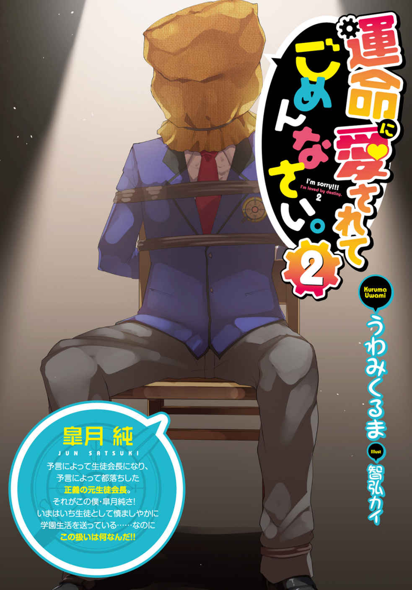
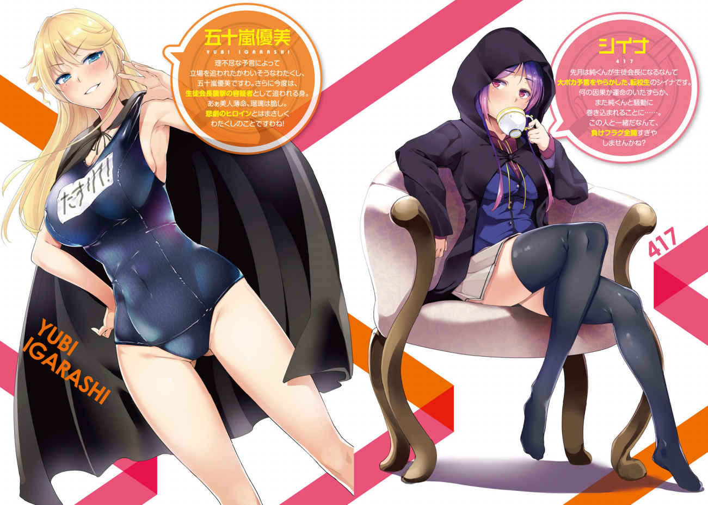
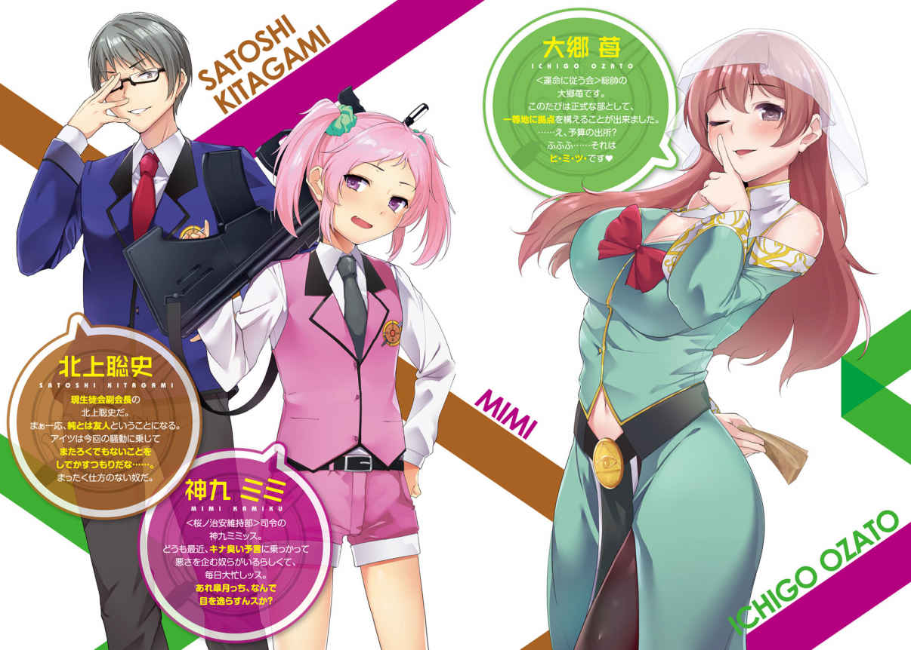
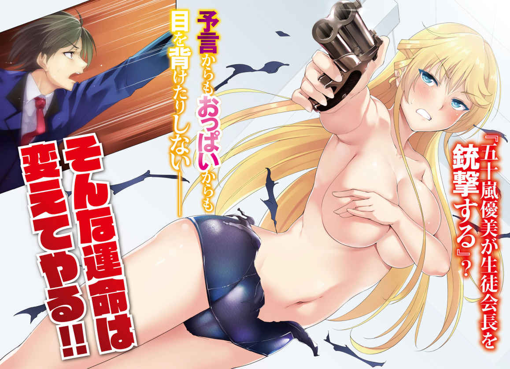
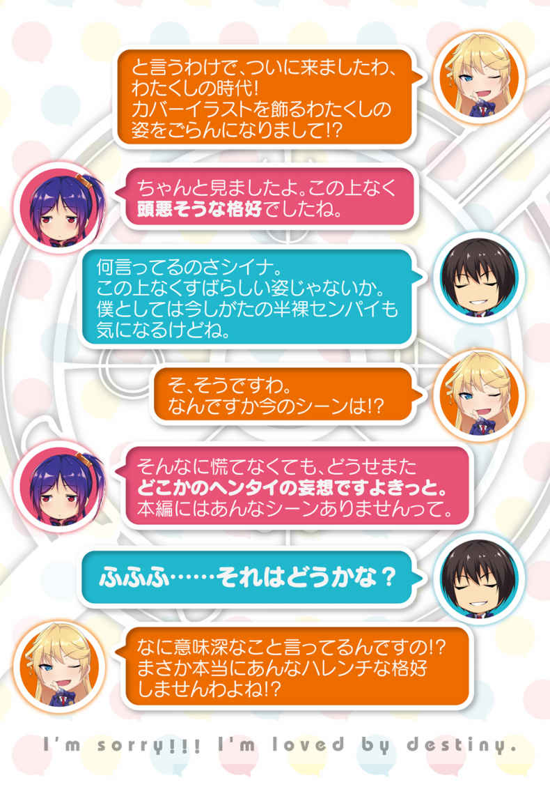
本書（電子版）に掲載されているコンテンツ（ソフトウェア／プログラム／データ／情報を含む）の著作権およびその他の権利は、すべて株式会社ＫＡＤＯＫＡＷＡおよび正当な権利を有する第三者に帰属しています。
法律の定めがある場合または権利者の明示的な承諾がある場合を除き、これらのコンテンツを複製・転載、改変・編集、翻案・翻訳、放送・出版、公衆送信（送信可能化を含む）・再配信、販売・頒布、貸与等に使用することはできません。
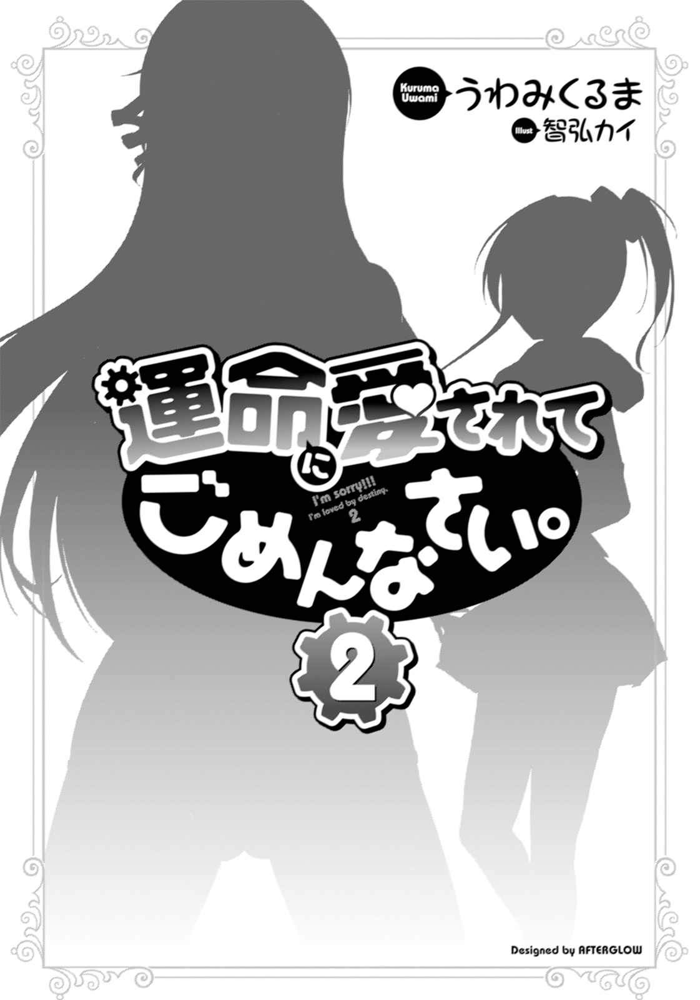
我が校には、運命力学に従って、転校生が毎週月曜日にやってくる。
転校生は、体育館の壇上に立って予言を言い渡す。
その予言は運命力学が指すところの運命の告白であり──よって転校生の予言は、いままで外れたことがない。
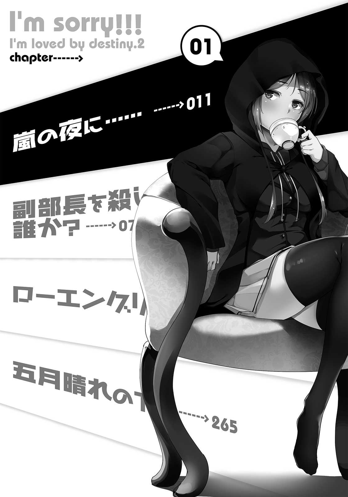
六月五日の転校生はこう言った。
『三年一組の五十嵐優美さんが、二年七組の朝倉朝顔くんに向かって発砲するでしょう』
◇
吹き荒ぶ雨風が部屋の窓を叩く、六月八日。木曜日。
今年の梅雨は、最初からやけに元気が良かった。
嵐を予感させる静けさはどこにもなく──むしろ、すでに嵐が吹き荒れていた。
こんなにも外が荒れていると、ひたひたと不安が忍び寄ってくるものだが、いまの僕はそんなことはなかった。
「......ふぅ」
自分のベッドに寝っ転がりながら漫画を読んでいた僕は体を起こす。
横を向けば、同じ部屋の中に可愛い女の子がいる。
今年の四月一七日にやってきた転校生──シイナである。
彼女は、ビーズクッションに背中をあずけて、漫画雑誌を読むのに夢中になっているご様子。左右のページを視線が行き交うたび、サイドテールが愛嬌よくゆらゆらと揺れる。
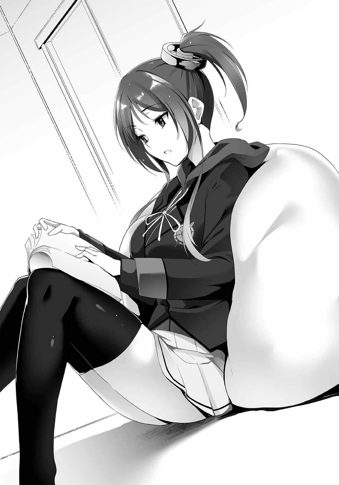
ここ最近の放課後は、遅い時間までだいたいこんな感じだった。
シイナは僕の寮生室に入り浸って、漫画を読んでだらだらと過ごしている。
「......うむ」
こうやって、女の子が自分の部屋でくつろいでいるのを見ると、つい感極まってしまう。まさか、人生でこんな瞬間が訪れようとは夢にも思わなかった。運命に愛されているとしか考えられない。
そして、先々月の僕はまさしく運命に愛されていた。
過ぎ去りし四月一七日。
シイナは、僕こと皐月純が生徒会長になると予言し、学校中を震撼させた。それから一悶着あって僕は生徒会長になった。さらに、一悶着あって僕は生徒会長ではなくなった。
栄枯盛衰を共に過ごした僕とシイナは、いまでは固い絆で結ばれているのである──と、僕は頑なに信じていた。
漫画を読むのにも飽きて、暇になった僕は、それとなくシイナに話しかける。
「シイナ。僕たちって付き合ってるよね？」
「付き合ってませんよ」
気持ちこの場にあらずといったようすで、シイナは力のない否定をした。読んでいる漫画から目も上げてくれない。
「酷いっ。酷いよシイナ」
「......」
「シイナ？」
「......」
「おーい、シイナさーん？」
「......静かにしてください。いま、いいところなんです」
シイナの口調は普段通り抑揚がない。
だけど、いまだけは有無を言わせない響きが混じっていた。ちょっと恐い。
「失礼しました......」
僕はしょんぼりと素直に引き下がる。
彼女がここまでの態度を見せるのだ。よっぽど面白いシーンなのだろう。
しかし先月の中旬。池の上で、僕が生徒会長の地位から転落したときは、こんなにも強い感情を見せてはくれなかった。所詮僕は、漫画に負けているような男でしかないのかもしれない。
そう考えると悲しくなってきた。
あいかわらず激しい雨脚は、僕の涙のように思えて仕方なかった。
僕は悲しみの音色に誘われて窓の外をみる。
次の瞬間。ぴかっと強烈な光が瞬き、数秒遅れてごろごろと空の轟きがやってきた。
雷が落ちたようである。
そして、雷の光によって、一瞬明るくなった外の風景に、見知った人物の姿が浮かんだ。長い金髪を濡らした女の子である。
はっとなった僕は、窓の外を指差し、
「シイナっ、シイナっ、あれ！ あれを見て！」
「なんですかうるさいですね」
シイナは眉を寄せ、面倒臭そうに窓の外を見る。
ちょうどそのとき、もう一度、雷が落ちた。
しかし、二回目の光が照らしたのは、外に生えている草木のみだった。
「......なにもありませんけど？」
「いまさっき......窓の外に五十嵐センパイがいたような気がするんだよ......それも、スク水を着て」
「眼科にいきましょうか？ それとも、脳神経内科がいいですか？」
「ちょっとシイナ、本当だって。僕、噓つかない」
「ちょー信用できないです」
「でもでも、たしかにスク水五十嵐センパイだった。先月、長いこと見てたし、間違いないよ」
五十嵐優美。彼女はひとつ年上の先輩であり、四月の下旬までは生徒会長でもあった。
五十嵐センパイは転校生の予言によって、危うくなった自分の地位を守るため、僕とシイナを投獄したり、僕のエロ本を公衆の面前に晒そうとしたりと、かなり独善的で横暴な人だった。
しかし、覇権争いに敗北した後は、スクール水着を着て、僕の秘書となった。
僕の脳裏には、いまだ五十嵐センパイのスク水姿が焼き付いている。
だから、絶対に見間違うはずがないのだ。
「仮に、純くんが見たのが本当に五十嵐さんだったとしましょう」
シイナは入念な前置きをした。
「だから、そうなんだって」
「どうして近くにプールもないのにスク水なんかを着てるんですか？」
「先月だって、部屋の中で着てたじゃん」
「それは類い希なるヘンタイの所行でしょ？」
「じゃあ、雨だったから着てたんじゃないの？ 濡れても大丈夫だし」
雨風を受け、濡れたスク水の五十嵐センパイはとても妖艶だった。
「ふつうなら傘を差しますって」
「それは個人の趣味だからね」
「あんたの趣味です」
「まあ、僕の趣味でもある。もしかして五十嵐センパイも目覚めちゃったのかな？」
僕が嬉々として言うと、シイナは半眼になってこちらを見た。ため息をひとつ。
呆れ果てたご様子である。
「......それにです。五十嵐さんは、現在追われている身なんですよ？ なんでわざわざこんなところに来るんですか？」
シイナが言ったように、五十嵐センパイは現在逃亡中である。
この発端は、六月五日の予言だった。
五十嵐センパイは、現生徒会長である朝倉に向かって発砲するらしい。
予言を聞いた生徒会は、会長の身に一大事が起こっては大変と、動きを見せた。五十嵐センパイを拘束して、予言の実現を阻止しようとしたのだ。
しかし、五十嵐センパイはむざむざ捕まるような人ではない。
自身があくどい分、相手の悪意にも敏感であった。
全校集会で予言を聞いた五十嵐センパイは、その直後、すぐに姿をくらました。
現在、生徒会は大々的に、五十嵐センパイの捜索活動に力を入れている。
「うーん......もしかして......あれは、メッセージだったのかもしれない」
僕は腕を組み、光に映し出された五十嵐センパイの立体的な胸元を思いだす。
「なにか言ってたんですか？」
「スク水のゼッケンに、『たすけて！』って書いてあったんだよ」
「............」
シイナは、しばらくぽかんとしたあと、漫画雑誌に戻った。人の話を全く信じていないようだ。
「本当なのに......」
僕は未練がましく呟いて、けど、シイナがかまってくれるようすがないので、大人しく引き下がった。
五十嵐センパイのことは話の種にはなるけど、そのことについては正直どうでもいい。
いや、むしろ先々月の恨みの関係上、酷い目に遭えばいいとさえ思っている。さらに言えば、僕を生徒会長から引きずり下ろした朝倉に、予言通り一矢報いて欲しかった。
外を搔き乱す嵐は、いっこうにおさまる気配はない。
僕はいま一度、外を覗く。
寮の庭先には、風に飛ばされてきた材木が転がっているだけで、物珍しいモノは一切なかった。
仕方ないので、僕も漫画に戻ろうと目を落とした。そのとき、
「突入！」
とつぜん甲高い声が上がった。
次の瞬間。
部屋の扉が破られる音が響き、一拍子遅れて、部室に円柱の物体が投げ込まれた。
ジュース缶ほどの大きさのそれは、綿飴のような煙を吐き出す。
煙は爆発的に広がり、瞬く間に部屋の中に充満した。
「な、なんなんだ!?」
予告なく奪われた視界。
僕は慌てふためく。
なんだかよく分からないけど、身の危険を感じたので、逃げようとベッドから立ち上がり、足を踏み外した。フローリングの上を転がり、柔らかい何かに受け止められる。
「......純くん、どけてください」
冷たい声が上から聞こえ、クッションの正体がシイナの太股だと知る。
「シイナ大丈夫？ 本当に大丈夫？ 怪我はない？」
僕はどさくさに紛れ手探りで、シイナの柔らかい部分に手を伸ばした。
「大丈夫ですから、早くどけてください」
弾力のある二つの物体を撫でていた僕の手は、すぐに叩き落とされた。
シイナと仲の良いやり取りをしていると、煙の中に人の気配がする。
どたどたどたと、複数の足音が聞こえ、何者かが部屋に侵入してくるのが分かった。
「皐月純を発見」
「すぐに確保せよ」
「ラジャー」
女性同士と思われる声のやり取りがある。
会話から察するに、向こうには僕たちのことが見えているらしい。
嫌な予感しかしなかったので、僕はシイナを連れて逃げようと立ち上がった。
しかし、一歩も動く暇もなく、僕の両脇に腕が差し込まれる。すごい力で持ち上げられ、足が床から離れた。さらに、麻袋のようなモノを頭に被せられ、真っ白だった視界が、真っ黒になった。
「放せっ。こら、聞いてるのか!? 放せよ！」
僕は無茶苦茶に暴れるが、足の裏はいっこうに床をとらえない。
「皐月純、確保」
「よくやった」
「転校生がいるようですが、いかがしましょう？」
シイナの話題が出て、僕はぞっとする。
「おまえら、シイナに手をだしたら許さないぞ！」
「彼女はターゲットではない。このまま放置するんだ」
「いますぐシイナを放すんだ！」
「皐月純、安心しろ。転校生にはなにもしない」
「いいから放せっ。さっさと放すんだ！」
「だから、転校生にはなにもしないと言ってるだろ」
「シイナに指一本でも触れて見ろ。ただじゃおかないからな！」
「だから......」
「さては、噓だと思ってるんだな。僕を誰だと思ってるんだ!? この学校を平和に導いた元生徒会長であるぞ？ それを知っての無礼か!?」
「......こいつ、うるさいな。黙らせろ」
「ラジャー」
不意に、腹部が強打される。
「っ──」
横隔膜が痙攣して、呼吸機能が麻痺する。
酸素を失った僕は、意識が落ちるように闇に沈んだ。
◇
再び意識が浮き上がってきたときも、視界は暗闇に包まれていた。
いまいる場所がどこなのか？ いまは何時なのかさえも分からない。
ただ、体の感覚を通して分かることは、僕が椅子に座らされていること。
そして、手足は椅子に縛り付けられ、身動きは叶わぬことである。
「だれか～。だれかいないのか？」
殴られた腹部に痛みを感じながらも、僕は声を絞り出す。
ずいぶんと自分の声が反響する気がした。ここは密室空間なのかもしれない。
「おーい。だれもいないのか？ 僕は目覚めてるんだぞ？」
「静かにしてください。いま、いいところなんです」
聞き慣れた冷たい声が聞こえた。深く考えるまでもなくシイナだ。
声が近い。どうやら彼女も同じ場所にいるようである。
というか、
「えっ、いいところってなに？ 一体シイナはなにをやってるんだよ!? ちょっと、待ってよ。いいことしてるなら、僕にもしてよ！」
「なにアホなこと言ってるんですか。私は漫画を読んでるんです」
「なんだ、漫画か......」
てっきりひとりでイヤらしいことをしてると思ったのに。
「ですから、静かにしてください」
「......っていうか、それもおかしいだろ。なんでシイナはこの状況で漫画を読んでるんだよ!?」
「あー、もう、うるさいですね」
物音が聞こえ、シイナがこちらに近づいてくるのが分かった。
イヤらしいことをしてくれるのかと、ドキドキしながら身構えたが、残念ながらそうではなかった。
シイナは、僕の首の辺りをもぞもぞとまさぐる。そして、頭全体を包んでいた麻袋が外され、僕は光を取り戻した。
僕は眩しさに目を細める。
予想通り、ここはコンクリート打ちっぱなし密室だった。
見渡す限り、部屋に窓はない。天井の蛍光灯が、らんらんと光っている。
僕はこの部屋の中央に、手足固定のもと椅子に座らされていた。
「ここは？」
目が慣れた僕は、目の前にいるシイナに問いかけた。
シイナは首を傾げ、
「さあ？」
と素っ気なく答えた。
「シイナも目隠しされたのか......」
「いえ。転校して日が浅いものですから、ふつうに来ても分からないんですよ。この学園広すぎますから」
「うん、まあ、たしかにそうだ」
この学園に一年以上在籍している僕だって、敷地のすべてを知らない。僕らが生活する白滝学園は、人里離れた山の中に建てられた全寮制の学校である。学園内に生活に必要なすべての施設があり、校外に出ることなく暮らしていけるのだ。敷地面積は、小さな町ひとつ分くらいはあるだろう。
「ですから諦めてください」
そう言ったシイナは、僕から離れて、部屋の隅に用意されていた自分の席に戻った。一人掛けのソファーにどっしりと座って、ソファー横のテーブルに積まれている漫画雑誌を手に取る。シイナは漫画雑誌をぱらぱらと捲りながら、テーブルに用意されていたお菓子やら紅茶やらを優雅に満喫していた。
「......あれ？」
この待遇の差はなんなのだろうか？
僕はみすぼらしい椅子に括り付けられ、シイナは令嬢のような扱いを受けている。
事情を問い詰めたくても、シイナはまた漫画に熱中しているご様子。話しかけたら怒られそうなので、しばらくそっとしておく。
「............」
少しの時間が経った頃。
僕の正面にあるこの部屋唯一の扉が開いた。
フード付きの黒マントを着た、見るからに怪しい奴が入ってきた。
「あれぇ？ どうして袋がとれてるんですかぁ？」
顔の見えない黒マントは、僕の姿を見るなりびっくりする。声は女性のモノだった。
そして、僕はこの声をどこかで聞いたことがある気がした。
「私がとりました」
シイナは漫画から目を離さずに応じた。
「ちょっと困りますよぉ、転校生さんったら。勝手なことされると、こっちが責任追及されるんですから。この組織ってけっこう厳しいんですって」
黒マントは、読書に勤しむシイナの前にいき、一生懸命な口調で抗議をする。
「............」
しかし、シイナは漫画に夢中であまり聞いているようすはない。
「転校生さん、聞いてますぅ？ お願いしますよぉ。無理をいって連れてきたんですから、余計なことはしないって約束でしたでしょぉ？」
むっとしたようすの黒マントは、少し口調を強くした。
すると、シイナは顔を上げ、
「......紅茶のおかわりお願いします」
と用件だけ告げて、漫画に戻っていった。すごい度胸である。
しかし、ちょっとこれは不遜すぎるだろう。
いくら相手が友好的な人間ではないからとはいっても、僕たちは囚われの身である。生殺与奪権が相手にある以上、怒らせるようなマネをするのはいかがなものかと思った。
「............」張り詰めた空気を漂わせる黒マント。
「............」漫画を読むシイナ。
「............」ふたりのようすをはらはらしながら見守る僕。
一時の沈黙のあと、黒マントは大股で部屋の出入り口まで引き返した。扉を開け、外に向けて声を張る。
「紅茶のおかわり持ってきて！ あと、皐月純が目覚めてます。全員集合！」
この人は基本的に腰が低そうだった。僕をこんな目に遭わせて、たぶん敵だと思うけど、同情心が湧き上がった。
そして、合図を受けて他の連中がやってくる。
ティーポットを手にした者を筆頭に、わらわらと入ってくる黒マントたち。あっという間に、部屋は黒マントで埋め尽くされた。黒マントたちに阻まれて、シイナの姿が僕の視界から消えてしまう。
「おはようございます、皐月純くん」
黒マントたちの中から、代表者らしき者が、僕の前に立った。
顔は見えないけど、シイナの相手をしていた黒マントとは別人であることは分かった。声が凜と張っており、態度も毅然としている。そして、この声にも聞き覚えがあった。
「貴様らがこの僕を誘拐したのか？」
僕は探るような目つきで、相手を睨んだ。
凜とした黒マントは、小馬鹿にしたように鼻を鳴らす。
「その質問をわざわざするとは情けない人です。この状況を考えれば、すぐに出せる結論ではないでしょうか？ あいかわらず軟弱な男ですね」
「なんだと!?」
「そんな頭の回転が鈍い皐月純くんに対して、懇切丁寧に説明しましょう。我々が、あなたを誘拐し、ここに監禁しました。ご理解いただけましたか？」
「くっ......僕をバカにしやがって。おまえたちは何者なんだ？」
「我々の名前をご所望ですか？ いいでしょう。無知な皐月純くんに教えてあげましょう」
問いかけを受けて、凜とした黒マントは、ことさら仰々しく、中世の騎士が殿下から剣を授かるように、両手を斜め上に掲げた。
それに呼応するように、他の黒マントたちも同じポーズをとる。密集した室内の中だったので、あちこちで窮屈なことになっていた。しかし、黒マントたちは譲り合いの精神を見せ、事無きをえる。人間性は悪くないようだ。
黒マントたちは声を揃え、
『我々は、〈副部長統合団体〉』
と名乗った。
四月に〈運命に従う会〉というカルト集団に出会ったときのことを思いださせる。
変な奴らに絡まれたな、と僕は思った。
「......おまえたちはなんのカルトだよ？ 副部長でも讃えてるのか？」
「失礼な発言は慎んでください。我々は秘密結社なのです」
腕を下ろした凜とした黒マントが、代表して抗議をした。
「似たようなもんだろ？」
「違います。我々は、副部長による副部長のための学園樹立を目指す団体。もちろん入団は副部長のみに許されています。そして、副部長の参加率はじつに全部活の一五％もあるのです！ カルト集団などと一緒にされては困ります」
「なんじゃそりゃ」
すごいのかすごくないのかよく分からない数字だった。
たしか、白滝学園には現在二〇〇以上の部活が存在している。大きな部は副部長をふたり立てるところもあるので、全体で三〇〇人近い副部長がいるはずだ。そして、一五％となると、その数は四五人前後。中堅の部活程度の規模はあるだろう。けど、やっぱり、すごいのかすごくないのかよく分からなかった。
「そして、この秘密を知られたからには、タダでは帰れません」
「おいっ。勝手に喋っておいて、そりゃないだろ！」
「そういうものです」
「聞かなかったことにするからいますぐ帰せ！ かーえーせ！ かーえーせ！」
僕はめちゃくちゃに騒ぎ立てる。扱いづらい人間だと分かってもらえば、解放されるかもしれないという淡い期待があったからだ。
しかし、一方的に話を進めた黒マントは、さらに強引な方法に出た。
突然、ブゥンという電子的な音が鳴った。
同時に、僕の鼻先に突きつけられる光の刃。
「皐月純くん、お静かに願います」
運命力をエネルギー源としたビームソード兵器──ディスティニーセイバーを構えた黒マントは、冷ややかに言った。ディスティニーセイバーは白滝学園に普及している武器のひとつであり、斬りつけた相手に深い絶望を与え、悶絶させてしまう。
「っ............」
不意打ちに驚いた僕は、言われるまでもなく言葉を失っていた。
まるで西部劇のガンマンのような早業で、この黒マントはディスティニーセイバーを抜剣したのだ。彼女はただ者ではないことは、少しだけディスティニーセイバー術の心得がある僕でも理解できた。
彼女を怒らせないほうがよさそうだ。
「ちょっとちょっと、暴力はよくないですよぉ」
緊迫した空気を和らげる声があがる。
黒マントの海を泳いで、ティーポットを持った黒マントがやって来た。声の雰囲気から察するに、シイナに根負けした黒マントの彼女であるようだ。
「指導者Ａさんったら、よくないですってぇ。剣をしまってくださいよぉ」
「すみません。指導者Ｃさんのいう通りです。この男が軟弱だったもので、ついイラッとしてしまいました」
根負け黒マントの説得に、凜とした黒マントは素直に応じる。ディスティニーセイバーのスイッチを操作して、刀身をしまった。
下っ端かと思っていたが、意外と発言力があったようだ。
ふたりのやり取りから察するに、凜とした黒マントは「指導者Ａ」。根負け黒マントは「指導者Ｃ」ということらしい。
「......安直な名前だな」
「なにか言いましたか？」
つい感想を漏らしてしまった僕に、指導者Ａは凄みを利かせてきた。
「いいえ。なんでもありません」
「従順でけっこうです。あなたは我々に協力をしなければ、自由の身にはなれない、ということをご理解いただければと思います」
指導者Ａの発言を聞いた僕は、自分の耳を疑い、思わず笑ってしまう。
「ふっ......協力だと？」
「なにが可笑しいのでしょうか？」
首を傾げる指導者Ａに対して僕は言う。
「......おいおい。この僕がお前らの役に立つとでも思ってるのかよ？ いまの僕は生徒会長でもないし、予言の後ろ盾もないんだぞ？ てんで役立たずだ」
「ご自分で仰って悲しくなりませんか？」
「悲しいさ！ けど、事実なんだよっ。だから、さっさと解放してくれ」
「結局、それが言いたいだけですか......。ですけれど、誠に癪ながら、皐月純くんは我々にとって重要な存在です。順を追って話しましょう」
べつに聞きたくもなかったが、指導者Ａはこっちの気持ちなどお構いなしに話を進める。
「我々──副部長は、常日頃から苦しみに喘いでいるのです」
晩秋の夕焼けのような哀愁を漂わせながら、黒マントたちは語り始めた。部屋に詰めかけた皆々が、順番に口を開いていく。
「苦しみの、副部長」（黒マント１）
『苦しみの、副部長』（全員）
「我が部の部長は、大変な理想家でした」（黒マント２）
「やる気だけが溢れ、部の実力を顧みず、身の丈に合わない目標を立てるのです」（黒マント３）
「当然、ついて行けない部員は腹を立てました」（黒マント４）
「部長、部員間に亀裂が入り、部活内は険悪になったのです」（黒マント５）
「そんな内情を憂えた副部長は、両者の仲裁に入りました」（黒マント６）
少しの空白を挟み、
『しかし！』（全員）
「部長からは、現実主義者だと罵られました」（黒マント７）
「部員からは、部長の腰巾着だと罵られました」（黒マント８）
「副部長の苦労を労ってくれる人はほとんどおらず」（黒マント９）
「むしろ、日和見だとバカにされました」（黒マント10）
「同じようなことが、たくさんの部活で起こっているのです」（黒マント11）
小学校の卒業式の掛け合いみたいだった。順番に喋るタイミングは完璧であり、相当な練習量が予想される。費やされた無駄な時間からは、黒マントたちの苦しみの一端がひしひしと感じられた。
それにしても早く帰りたい。
「ある部では、板挟みになった副部長が胃炎になりました」（黒マント12）
「ある部では、理不尽な要求に晒された副部長が猥褻物陳列罪で捕まりました」（黒マント13）
「ある部では、人間関係に行き詰まった副部長が二次元に旅立ちました」（黒マント14）
「数々の副部長の屍を越えて」（黒マント15）
「それでも我々は堪えました」（黒マント16）
「我々さえ堪えれば、部活がよくなるのだと、自分に言い聞かせました」（黒マント17）
『しかし！』（全員）
「それも、もはや限界なのです」（黒マント18）
『限界なのです！』（全員）
「怒られるのは、副部長」（黒マント19）
「苦労するのも、副部長」（黒マント20）
「目立つのは、部長」（黒マント21）
「褒められるのは、部員」（黒マント22）
「......そんな生活は、もう終わりにしましょう」（黒マント23）
「副部長が立ち上がるときがきたのです」（黒マント24）
「我々〈副部長統合団体〉が、学園を支配することを、ここに宣言します！」（黒マント25）
『宣言します！』（全員）
締めの言葉が残響する。
静まり返る室内。
静寂の中から微かに聞こえる、すすり泣く声。
誰かが感極まってしまったのだろう。
適当に聞き流していた僕にも、副部長の辛さがじんわりと理解できた。
理解できたけど、その問題は、各部活内でのトラブルだ。僕の知ったこっちゃないし、キレて学園を支配しようとするのは筋違いである。
「これが我々のすべてです。不遇の我々でしたが、逆転のときがきたのです」
指導者Ａは、ちょっと涙声で言った。
「どう逆転するってんだよ？」
「転校生の予言です」
「......五十嵐センパイが生徒会長に発砲するってアレか」
「その通りです。あの予言が成就すれば、間違いなく生徒会長は悶絶します。数日間、指揮系統が混乱するでしょう。我々はその機に乗じて、新生徒会を立ち上げ学園の統治機能をそっくりいただくのです」
「クーデターだな」
「その通り。皐月純くんは、我々が学園を支配するのに協力していただきます」
「だから、僕になにができるって言うんだよ？」
「資金提供です。我々には活動資金が圧倒的に不足しているのです」
「それを僕に頼むのか？ 僕の仕送りは少ないほうだぞ？ 頼むなら金持ちにしろよ」
「──皐月純の埋蔵金」
囁くように言われた言葉に、僕は眉を顰める。
「それはどういう意味だ？」
「ご存じでしょう？ あなたは生徒会長である間に、密かに部費予算の一部を隠し盗った。世間ではそのお金のことを、『皐月純の埋蔵金』と呼んでいるのです」
「人聞きの悪いことを言うな」
僕は断じて汚いことに手を染めてはいない。身を粉にして学園のため、全うに働いたのだ。いわれなき中傷は許せない。
「しらばくれないで教えてください」
「知らんもんは知らんっ」
「お金さえ頂けば、身の安全は保証しますよ？」
「そんなこと言われても、本当に知らないんだからしょうがないだろ」
「埋蔵金の規模は、なんでも野球部年間予算の一〇倍だとか？」
「あ......」
身に覚えのある数字を聞いて、額から冷や汗が流れる。そういえばそんなこともあった。
僕の反応を指導者Ａは見逃さなかった。
「ほら、ご存じでしょう」
「......」
「埋蔵金を渡して頂きます」
指導者Ａの深く被ったフードから覗いた口元が、冷徹な笑みを帯びた。
◇
一晩監禁されて、翌日。
六月九日、金曜日。
どんよりとした曇り空の下を、僕とシイナはふたりして歩くことができていた。
しかし、自由の身というわけではない。後ろを振り返れば、遠巻きに、〈副部長統合団体〉の監視がついてきている。
僕たちはいま、埋蔵金を入手してくることを条件に、外出を許可されている身だった。
「っていうかさ。シイナって誘拐されなかったのについてきちゃったの？」
「ええ、暇だったんで」
僕の問いかけに、シイナはいつもどおりの涼しい顔で答えた。
「暇って......軽いね。危険かもしれないのに」
「たくさん紅茶とお菓子をご馳走してもらえました。いい人たちでした」
「いい人じゃないだろ。突然部屋に押しかけて、僕を誘拐してさ」
「あれにはびっくりしました」
「キミは、びっくりしてるようすじゃなかったけどね」
「わー、びっくりです」
シイナは平坦な口調で言った。
そこには驚愕のきの字も見えてこない。
先の生徒会長を巡る戦いでもそうだったけど、シイナの肝の据わりかたは山のようである。とても僕にはマネできないと思った。
山といえば──白滝学園は山を切り拓いた地に建てられている。広大な敷地を有するこの学園には、幾多の部活があり、それに合わせて部室も各地に点在している。よって、部室棟の立地にも好悪が存在していた。
とりわけ、第一校舎や大型雑貨店、飲食店が集まる学園の中央区が好立地とされている。
そして、僕たちは学園の一等地とされる中央広場にやって来た。
埋蔵金は、ここに居を構えている、とある部活が管理している。
「偉くなったものだな......」
僕は五階建ての部室棟を見上げながら感嘆した。
この部室棟丸々すべてがカルト集団、〈運命に従う会〉の部室である。建物の外壁には、横断幕が張ってあり、大きな字で「運命にすべてを委ねましょう 〈運命に従う会〉本部」と記されている。
駅前ビルを買収した新興宗教団体のようだった。
「よくもまぁ、横領した資金を堂々と使えるものですね」
シイナは若干の呆れを滲ませていた。
それは僕も同感である。
先々月のこと。〈運命に従う会〉は、僕が生徒会長になる戦いで重要な役割を果たしてくれた。だから、僕は〈運命に従う会〉の総帥──大郷苺を生徒会の会計に任命したのだ。
しかし、苺は、生徒会役員の地位を利用して、非公認団体だった〈運命に従う会〉を内密に部活に昇格させ、多額の予算を計上。
そして、僕の旗色が悪くなると、僕を裏切って部費を持ち逃げしたのだった。
それ以来、苺からはお茶会の誘いはくるものの、僕は彼女に会っていなかった。
今日はひと月ぶりの再会になる。
正直、気乗りはしない。けれど、退路は断たれている。本当は僕の埋蔵金ではないのだけど、資金を持ち帰らなければ〈副部長統合団体〉になにをされるか分かったものではない。
僕たちは部室棟へ入り、一階で受付をすませると、最上階へ通された。一体、どこの一流企業なのか？
「これはこれは、皐月さま、天使さま。お久しゅうございます」
最上階のとりわけ大きな部屋に入る。そこは、欧州から取り寄せたと思われるカーペットやら調度品やらで内装が統一されていた。まるで中世貴族の屋敷であるかのようだ。
苺はそんな部屋の真ん中で、南蛮家具に身を寄せながら、優雅に会員とお茶を楽しんでいた。
「やあ、苺ちゃん、久しぶり」
「......」
僕は片手をあげて挨拶をして、シイナは無言で会釈をした。
僕たちが部屋の中央まで歩み寄ると、気を利かせた会員たちが席を立ち、こちらに譲ってくれる。僕とシイナは遠慮なくその席に腰を下ろした。
すぐにカップが用意され、紅茶が注がれる。
至れり尽くせりすぎて、逆に恐い。シイナはさっそく紅茶に口をつけていた。
「皐月さま。やっといらしてくださいましたね。わたしはとても嬉しく思っています」
苺は背後に余裕が見えてくるような、ぽかぽかした笑みで僕を見やった。
僕のことを裏切っておいて、どの口がそれを言うかと思ったけど、ここは文句を吞み込み、
「......う、うん。ちょっと忙しくて、なかなか時間がとれなかったんだよ」
「あら、そうでしたか。そうとは知らず、再三お手紙をだしてしまいすみませんでした」
「いいや、べつにいいよ」
「さすが皐月さまです。お優しいこと」
オホホホ、と貴族風に微笑む苺。
なんだかキャラが変わっているような気がした。
苺の雰囲気に押されつつも、こちらにはやらなければならないことがある。
僕は思いきって、さっそく本題に入る。
「で、苺ちゃん。今日は苺ちゃんにお願いがあってきたんだよ」
「あらまあ」
「その前にひとつ確認なんだけど......僕って救世主だよね？」
自分で聞くのもアレだけど、これは重要なので、初めに確認をとっておく。
運命力学を崇拝する〈運命に従う会〉は、転校生の予言を神のお告げだと考えている。
予言を述べる転校生は、神の使者なので天使。
予言に名前が呼ばれし者は、神に選ばれた救世主という扱いをとっているようだ。
よって、四月一七日の予言で名前を呼ばれた僕は、苺たちにとって紛う事なき救世主。
救世主には無償の奉仕をしてくれるのだ。先だっての騒乱でも、僕のいうことは二つ返事で了解してくれた。
いまでもそうであるならば、これからする話はすぐにまとまるだろう。
「もちろんでございます。皐月さまは、過去、現在、未来において、ずっと救世主です。間違いありません」
「そうか、よかった」
苺の力強い言葉を聞いて安心する。
この調子なら問題ないだろう。
「わたしどもは、皐月さまのためなら力の限り働きます。なんなりとお申し付けください」
「うん、ありがとう。それじゃ、さっそくだけど、苺ちゃんが横領したお金があるよね？」
「横領なんてとんでもありません。正式な手続きを踏み、計上した部費なのです」
苺は、にっこりと反論した。
しかし、柔和な表情からは想像もつかないほど、有無を言わせない圧力があった。
僕は見解の相違を流して、話を進める。
「......そ、そうだね。まあ、その〈運命に従う会〉の部費のことなんだけど」
「はい」
「返して欲しいんだよ？」
「はい？」
「返して欲しいんだ」
「しかし、皐月さまはすでに生徒会長ではございませんが？」
「たしかにそうだ......よし、言い方を変えよう。いまの僕には、どうしても〈運命に従う会〉の部費が必要なんだよ。だから、部費を僕に預けてくれ。これは救世主としての頼みだ」
「あらまあ」
僕の頼みを聞いても、苺は顔色ひとつ変えなかった。
けれど、すぐには回答をくれなかった。
苺は、茶菓子に手を伸ばすように、自然な仕草で僕の右手をとった。
そして、僕の手の平に、指で「の」の字を書き始める。
「どうしたの苺ちゃん？ くすぐったいよ」
「うふふふ」
「なんだか前とは違って、積極的だね？」
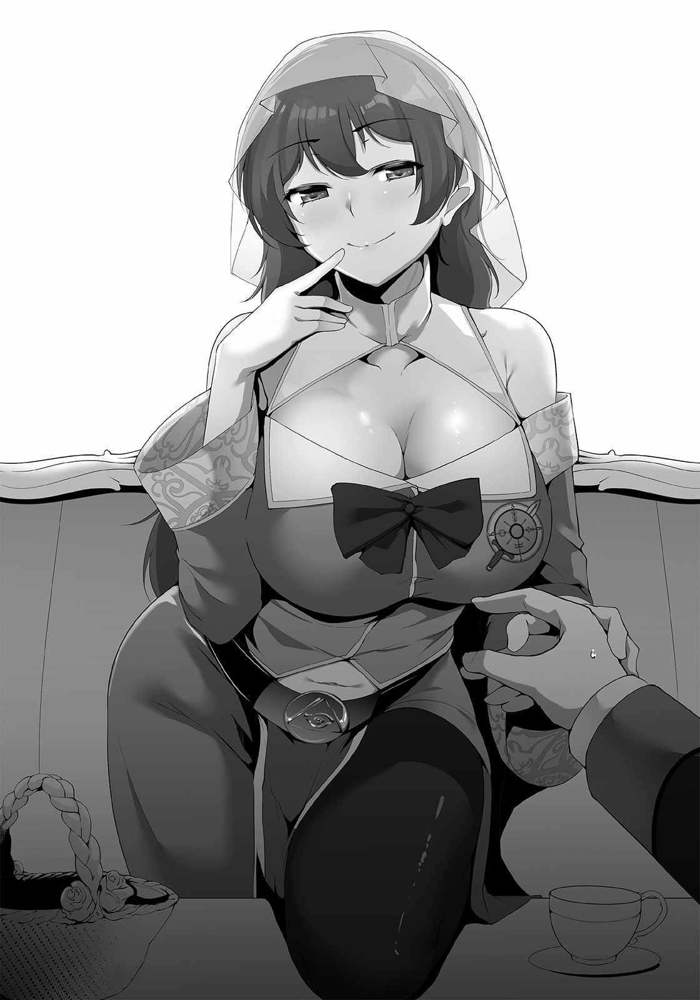
「ありがとうございます。そうかもしれません」
「苺ちゃん？」
「さ、つ、き、さ、ま？」
「............で、部費の件なんだけど。預けてくれるよね」
「い、や、で、す」
苺は、夏空のような笑顔で言った。
なるほど、そうきたか......。
やんわりと拒否されることはある程度、覚悟はしていた。しかし、実際はずいぶんと率直な回答だった。
「僕は救世主なんだよ？」
「はい。救世主がいかように偉いのでございましょうか？」
「......さっきと言ってること違うよね？」
「かもしれません。なんの問題があるでしょうか？」
「......」
開き直った人間はとても恐ろしいと思った。
僕は助けを求めるように隣を覗く。僕が苦心している横で、シイナが美味しそうに紅茶を啜っていた。こちらのやり取りなんて上の空のようだ。
この場所に、味方なんて誰ひとりいないことを悟る。
「皐月さま」
苺は諭すような物言いで告げる。
「この部屋を見てください。見渡す限り、美しく調和のとれた空間が広がっているでしょう？ これを実現できたのは、なんの力だと思われますか？」
「......そりゃ、部費でしょ。野球部の一〇倍の予算もあったら大抵のモノは買えちゃうよ」
いつも間にか、攻守が入れ替わっていた。
こっちが問い詰められているような気がしてならない。
「そうです。これは多額の部費がもたらした果実なのです。では、この果実をもっと分かりやすい言い方にはできないものでしょうか？」
「......お金かな？」
「さすがです、皐月さま」
僕の回答に、苺は満足そうに微笑んだ。
続けて、朗々と、教示するように語る。
「流れるような線を描いたティーカップも、舌の上で蕩ける料理の数々も、優雅で心休まるひとときも、他者との温かい関係性だって、本質的には豊かさの上にあるのです。資本主義経済において、豊かさとはすなわちお金の分量。資金力がすべてを決めると言っても過言ではありません」
「......言いたいことは分かるよ、苺ちゃん」
「ありがとうございます」
「でもさ。ここは〈運命に従う会〉でしょ？ 苺ちゃんは予言成就のために尽力する人なんでしょ？」
僕は懇願するように言った。僕は、かつての苺の面影を、富に爛れた中で探そうとした。
すると、
「皐月さま──」
苺は、僕に顔を近づけて、鈴の音色のように囁く。
「──予言なんて、会員を統治する文言にすぎません」
ついに苺は、本音を暴露した。
昔はこんな人じゃなかったけど、潤沢な富が彼女を変えてしまったのである。
恐ろしや、お金の力。
「苺ちゃん......キミは一体......」
僕は、自分の目の前にいるおっぱいの大きい女の子が化け物に見えて、あろう事か身が竦んでしまった。男としてその反応はおかしいのに。
「お客さまは、お帰りになられるようです」
苺ちゃんは朗らかに、机の上にあった、呼び鈴を鳴らした。
◇
僕たちは〈運命に従う会〉から丁重に帰された。
言うならば、追い出されたわけだが、それで話がスパンと終わるわけではない。
部室棟から出ると、普通の格好をした〈副部長統合団体〉の団員たちが待ち構えていた。
「......首尾はどうでしたか」
問い詰めるような口調で訊かれ、
「うむ、上々だった。詳しい話は、指導者たちに直接する」
僕は保身のため、とりあえず噓をついた。
シイナがなにか言いたそうな顔で、じっとこちらを見ていた。
それから、寄り道さえも許されず、僕だけ麻袋を被せられて、例の監禁部屋に戻る。
やっぱり、僕は椅子に括り付けられ、シイナは丁重な扱いを受けていた。
しかし、不条理を嘆く暇もなく、僕は黒マントに囲まれる。
「報告によれば、前向きな回答を頂けたとか？」
指導者Ａが探るような声で訊ねた。
「もちろんだとも」
僕は噓に噓を重ねた。一体どうしたものかと思う。
「では、すぐに埋蔵金を用意してください」
「それは難しいな」
「なぜですか？」
「学園の転覆を図ろうとする奴らに、この資金を渡せるわけがないだろう」
「ほう──それは見上げた正義感ですね。感心しました」
指導者Ａは、僕を皮肉るように軽く拍手をした。そして、不意に拍手をやめると、手を挙げ、後ろの黒マントに合図を送る。それに呼応して、とても小柄な黒マントが前に進み出てきた。
指導者Ａは言う。
「紹介しましょう。彼女は指導者Ｂさんです。尋問のスペシャリストです」
空気が不穏になる。
指導者Ｂなる人物が歩くたび、黒マントの下から、ガチャガチャと金属が擦れ合う音が聞こえてくる。明らかに友好的な音色ではない。黒マントの中身を想像するだけでぞっとした。
「ちょ、ちょっと待て......」
世間一般的な人間がそうであるように、僕も痛いことは嫌いである。ちょっとでも、叩かれたり、抓られたりしたら、泣きながら吐露してしまうことは請け合いだ。
指導者Ｂは、黒マントの中から金槌を取り出した。
「純さん、よろしくね？」
穏和な物言いだが、やろうとしていることはえげつない。
生命の危機を感じた僕は、必死に打開策を講じた。
敢えて挑戦的な態度をみせ、相手を煽るように捲し立てる。
「お......おいおい......この僕を誰だと思ってるんだ？ この学園に変革をもたらした元生徒会長であるぞ？ まさか、この僕が色仕掛けなんかで屈するとでも思ってるのか？ やれるもんならやってみろよっ。さあ、色仕掛けをやってみろよ！ できるものなら、イヤらしいテクニックで僕を陥落させてみろよな！ じつは、僕、色仕掛けには弱いんだよねっ。だから、女の子に下半身をイヤらしく弄られたらすぐに吐いちゃうかもしれないよ!? なにを吐くって？ ご想像におまかせするよ！ さあっ、早く！ みんな順番にやってね！」
僕は痛いことを回避しつつ、暗に色仕掛けをねだった。
すると、部屋の端で、椅子の動く音がした。
黒マントの海を搔き分けて、シイナがやってくる。
「シイナ！」
僕は嬉しくなって彼女の名前を呼んだ。
普段はもっぱらやる気はないけど、僕のピンチを目にして重い腰を上げてくれたのだろう。
シイナは僕の期待を一身に受けて、手にしていた漫画雑誌を高々と天井に掲げると、それを勢いよく僕の頭に振り降ろした。
「痛いっ！」
「生きてりゃ、そりゃ痛いですよ」
もう一度、漫画雑誌が脳天を直撃する。
「痛いですっ！」
「あらあら、転校生さん。その調子でお願いしますね？」
「分かりました」
指導者Ｂに頼まれたシイナは、迷うことなく了承した。ゴミを見るような目をして、立て続けに、僕に打撃を加える。
「痛いっ......痛いって......お願いやめてください......」
だが、無慈悲な鉄槌に、終わりは見えない。
「さてさて、純さん。とても痛いですね？」
「とても痛いです。助けてください指導者Ｂさんっ」
シイナの猛攻を前に、僕は敵に助けを求める始末である。
「でしたら、埋蔵金を渡して頂けますよね？」
「渡します。渡しますから、もう勘弁してください！」
「と、言われています。転校生さん、どうかその辺でやめておきましょう」
「......ちっ......仕方ありませんね」
シイナは残念そうに手を止めた。なんでだよ。
「なんでシイナが拷問に協力してるんだよ！」
「すみません。つい、純くんのアホさ加減にイラッとしました」
散々暴力を働いたシイナは、しかし、いつもどおりの涼しい顔だった。
僕は泣きたくなってくる。
なにはともあれ、僕は埋蔵金を〈副部長統合団体〉に渡さなければならなくなった。だけど、苺に拒否されているので、渡せるお金など端っから鐚一文ないのだ。上手い言い訳を探さなくてはいけない。
交渉相手は、再び指導者Ａに戻る。
「決着がついたようですね。なによりです。それでは具体的な期日の話をしましょう。いつごろ、現金で用意できそうですか？」
「時間がかかる。正確な日は分からん」
「ほう──この期に及んで、まだそういうことをおっしゃるとは」
指導者Ａは手を挙げて、合図を送る。
シイナが漫画雑誌を再び持ち上げた。だから、なんでだよ。
慌てた僕は、とっさに口から出任せを吐く。
「待て待て！ これには深い事情があるんだ。緻密なマネーロンダリングの結果、そう簡単には引き出せなくなっている。生徒会からの追及を逃れるためだ。資金の用意にはいましばらく時間がかかる。本当だ、信じてくれ！」
「............」
黙る指導者Ａ。
僕の言葉の真偽を測りかねているようだ。
「どうしてでしょうか......皐月純くんのいうことは、すべて噓に聞こえてしまうのです」
「なんで、僕ってそんなに信用がないんだよ!?」
「ご自分の胸に問いかけてください」
まあ、噓なんだけどさ。
それに生徒会長だったころの所行が、仇となっているのはいうまでもない。
だけど、面と向かって言われると、否定したくなるのが人間である。
「僕、噓、つかない」
「......本当にこの男の言葉を信用していいのでしょうか。いえ、冷静に考えると、信用にたる人間でないことは明白ではありませんか」
ぶつぶつと思考を漏らす指導者Ａ。
零れる言葉から察するに、雲行きが怪しい。
このままではシイナの殴打に晒されてしまう。
と、そのとき、
「待ってくださいよぉ。ここは、彼の発言を信じるべきではないでしょうか？」
予想外にも、助け船を出してくれたのは、敵である指導者Ｃだった。
味方であるはずのシイナが一番恐いとはどういうことだろうか？
「指導者Ｃさん。この男の肩を持つのですか？」
詰問するように指導者Ａが訊ねる。
指導者Ｃは、物怖じすることなく、ちょっと間の抜けた口調で言う。
「肩なんて持ちませんよぉ。ただ、考えても見てください。ここで無理なものに文句を言って、できないことをやれと言うのは、憎き部長や部員と同じですって」
「......!?」
指導者Ａのみならず、この場にいる黒マントたちの呼吸が一瞬止まった。
「た、たしかにその通りだ......」「事情をしらない奴って、本当、好き勝手いうからな......」「あいつらは、ごねればなんとかなるとか思ってる節があるし」「できないのは俺のせいか？ 違うだろ、おまえらのせいだ」「無茶を押しつけるのは、お願いやめて！」
後方の黒マントたちが口々に、個人的私怨を漏らした。
この場の空気は瞬く間に、同じ方向に流れた。
「......すみませんでした。指導者Ｃさんのいう通りです」
指導者Ａは反省の色を浮かべながら続ける。
「我々は苦しみの副部長。無理なモノは、天地がひっくり返っても無理であることは、この身をもって承知しています。いいでしょう。しばらく時間を与えます。我々は、誇り高く我慢強いのです」
「恩にきる。必ず、近日中に用意してみせる」
僕は、ほっと安堵した。黒マントたちの過酷な人生経験に助けられたようだ。
部長と部員の板挟みになり、数々の難題を調整してきた副部長たち。
常日頃、無茶な要求を突きつけられている彼女たちは、とても物分かりが良かった。無理なモノは無理だという現実をいち早く理解してくれたのだ。
〈副部長統合団体〉──案外いい人たちなのかもしれない。
そして、いい人たちであるからこそ、真面目に仕事をし過ぎて、ストレスが過剰に溜まり、おかしなことになってしまったのだろう。
こうして、この場は一旦、お開きとなった。
◇
黒マントたちが退室して、しばらく。
あいかわらず椅子に拘束されたままの僕と、漫画雑誌を消費し続けるシイナ。
ふと、ある瞬間。シイナは席を離れると、部屋の扉の前に立って、
「紅茶、おかわりありませんか？」
と言った。
もはや黒マントは、彼女にとってファミレスのウエイターと同じなのだろう。
しかし、いくらか待っても反応はなかった。
「紅茶、ありませんか？」
シイナはもう一度言った。
だが、反応はない。
すると、シイナは扉を開けて──鍵は掛かっていなかったようだ──外を見渡した。
外を確認し終わると、シイナは踵を返して、僕のところまで戻ってくる。
「純くん、誰もいないようです」
「そうだね。みんな副部長だから忙しいんじゃないかな？ おかわり貰えなくて残念だね」
僕はふて腐れ気味に言った。
「そうじゃなくていまのうちに逃げましょう」
「でも、僕自身に鍵が掛かってるし」
「問題ありません」
シイナはスカートのポケットから鍵を取り出すと、僕をぐるぐる巻きにしていた鎖の施錠を外した。
僕はびっくりする。
「シイナどうしてそれを？」
「すれ違いざまに、鍵をパクっておきました」
こともなさそうに言うシイナ。たぶん、僕を殴打しに来たあのときに、鍵をくすねていたのだろう。彼女にそんな才能があったとは驚きである。
「さすがシイナ！ おっぱい揉んでいい？」
漫画雑誌で叩かれた。
「痛いっ......」
「なんで感謝の表現が胸を揉むことになるんですか？」
シイナは、半眼で問いかけてくる。
「恋人同士ならするでしょ？ 夜に」
「私たち、付き合ってませんって」
「つれないなぁ......」
そんな軽いやり取りをしながらも、脱出を目論む。せっかくシイナが作ってくれた機会を無駄にはできない。
自由になった僕は、先頭に立って、部屋の扉を開けた。
指導者Ａと鉢合わせた。彼女はいままさに部屋に入ろうとしているところだった。
「......」
「......」
僕はゆっくり扉を閉めた。
すぐに、指導者Ａが入ってくる。
「皐月純くん。どこかにお出かけですか？」
「......ちょっとコンビニまで買い出しに」
「なるほど」
指導者Ａは毅然とした態度で前に進み、対する僕は及び腰で後にさがった。
と、次の瞬間──まさかのシイナが動きを見せた。
シイナは、指導者Ａの背後に回り込むと、鈍器と化した漫画雑誌を振り上げ、相手の後頭部を狙って振り降ろす。
「おっと──」
だが、指導者Ａは驚異的な反射をみせ、体を反転。振り降ろされる最中のシイナの手をとり、流れる動作で攻撃を受け流した。
勢い余ってバランスを崩し、前に倒れ込むシイナの体を、僕はとっさに受け止める。
「大丈夫シイナ？ 良いお尻しているね？」
僕の片手は、ちょうどシイナのお尻に当たっていた。せっかくだから揉んでおく。
「それがいま言うことですか」
「だって、普段、揉ませてくれないし」
「当たり前でしょ。放してくださいっ」
シイナは、ゼロ距離で僕のみぞおちに拳を入れて、拘束から逃れた。くるりと回って、相手に向き直り警戒する。
「びっくりしました。転校生さんがそのような行動にでるとは、思考の外でしたので」
不意打ちにあった指導者Ａは、しかし、余裕を感じさせる態度である。
シイナの攻撃をかわしたあの動きといい、ディスティニーセイバーの早抜きといい、この人はただ者ではない。ここで、二対一で戦っても勝てる気配がなかった。
「落ち着いてください。自分は敵ではありません」
唐突に指導者Ａは、そんな戯れ言を口にした。
そして、フードを外し、尊顔を露わにする。
「あっ」
目の前に現れた知った顔に、僕は思わず変な声をあげてしまう。
凜とした端整な面立ちと、活発さを表すポニーテール。鍛え抜かれ引き締まった瘦軀。
僕が生徒会長になる戦いで、最も重要な役割を担ってくれた部活──桜ノ治安維持部。彼女はそこの副部長、関ヶ原三日月である。
「お久しぶりです。皐月純くん。転校生の四一七さん」
関ヶ原は、若干厳しめの視線で、こちらを交互に見やった。
「ああ、関ヶ原さん、奇遇だね」
「......どうも、ご無沙汰しています」
ばつが悪そうに、視線を彷徨わせる僕とシイナ。
よりにもよって、あんまり会いたくない人物と出くわしてしまった。
これには、深くない事情がある。
「おふたりとも、最低週に一回は、稽古に来るように言ってあるはずですが？」
関ヶ原は副部長でもあり、桜ノ治安維持部のディスティニーセイバー術指南役も務めている。なんでも校内で五本の指に入る遣い手らしい。
僕とシイナは、先の戦いで生き残るために、関ヶ原にディスティニーセイバーの稽古をつけてもらっていた。そして、戦いが終わってからも、しつこく鍛練を強要してくるのだ。
「一度面倒を見たからには、自分は、あなた方を一人前にしなければなりません」
このように関ヶ原は、熱血的な面倒臭い人物である。
しかし、僕もシイナも、努力は好きな方ではない。
だから、放課後はふたりして部屋に引きこもって遊んでいたのだ。
「来週からは、真面目に出席してくださいね」
「まあ、それはそれとしてさ──どうして、関ヶ原さんがこんなところにいるんだよ？」
はぐらかしつつ、僕は本題に入った。
「そうでした。いまはその話でした」
根は単純な関ヶ原は、すんなりと話題変更を受け入れる。彼女は、いままで以上に真剣さを帯び、声を潜めながら説明する。
「自分は、愛すべき部長の指示で、〈副部長統合団体〉の動向を探っているのです。いわばスパイとして送り込まれたのです。けっして、愛すべき部長に不満があるとか、部員とぎくしゃくしているわけではありません」
関ヶ原は、ことさら後半部分を強調した。
「なるほど。ミミの奴、ワンマンそうだったからな。関ヶ原さんもストレスが溜まってたんだな」
神九ミミ──桜ノの部長で、小さくて元気な二年生である。
ミミとしばらく接した僕は知っている。ミミは正義感が強く、理想が高い。部員はついていくのが大変そうだと思っていた。
「違うと言っているでしょう」
「ここには三人しかいない。遠慮することはないんだぞ？ さっきは涙ぐみながら話してたじゃないか」
「あれは演技ですっ」
「またまたぁ～、不満があるならぶちまけちゃいなよ？」
「......これ以上、愛すべき部長を侮辱するならば、斬り捨てますよ？」
関ヶ原の眼差しが、刀のように鋭利になった。彼女の手がディスティニーセイバーの柄に触れる。本気で怒ってらっしゃるようだ。
慌てた僕は、暴れ馬を宥めるように言う。
「まあまあ、落ち着いてくれ。べつに侮辱なんてしてないよ。ミミはとてもカリスマに富んだ素晴らしい部長だと思ってる。これ、本当」
「そうでしょう、そうでしょう。自分の愛すべき部長は最高なのです！」
一転して、満足そうに関ヶ原は首肯した。
単純な人でよかった。
「で、そのミミの指示で〈副部長統合団体〉に潜り込んだと？」
「はい」
「それにしてもなんで指導者になってるんだよ？」
「いつのまにか出世していました」
「ヘタに優秀なのが仇になったわけか」
「そんなことはありません。〈副部長統合団体〉は大変危険な組織です。指導者は、団体のすべての活動内容を知ることができるのです。惨事が起こるまえに、事前に愛すべき部長に報告することができるでしょう」
「なるほど」
それならば、僕が誘拐される前になんとかして欲しかった。
「いいですか？ 自分がスパイであることは絶対に秘密です。とくに、指導者ＢさんとＣさんに悟られては一巻の終わりです。もしバレたならば、自分は、団体による惨い制裁に掛けられてしまうでしょう」
「それは大変だ！」
僕は、関ヶ原が制裁に掛けられている姿を想像して──思わず頰が緩んだ。
「純くん、エロい制裁じゃありませんよ？」
シイナが的確に、僕の思考を捉えてくる。どうしてバレてしまったのだろうか。
関ヶ原は、少し恥ずかしそうに咳払いをして、
「とにかく、そういうわけです。〈副部長統合団体〉に埋蔵金を渡してはいけません。クーデターの資金になってしまいます。よって、自分は、ふたりが逃亡するのを見なかったことにします。外の見張りは払っておきますので、存分に逃げてください」
と、言い残して部屋を出て行ってしまった。
◇
関ヶ原が去って、しばらく。
「よし、人払いも済んでるだろう。シイナ、そろそろ脱出しようか？」
「そうですね、純くん」
自由を得るため僕は、先頭に立って、部屋の扉を開けた。
指導者Ｂと鉢合わせた。彼女はいままさに部屋に入ろうとしているところだった。
「......」
「......」
僕はゆっくり扉を閉めた。
すぐに、指導者Ｂが入ってくる。
「あら、純さん。どこかにお出かけですか？」
「......ちょっとコンビニまで買い出しに」
「まぁ～そうですか～」
指導者Ｂは毅然とした態度で前に進み、対する僕は及び腰で後にさがった。
と、次の瞬間──シイナが動きを見せた。
シイナは、指導者Ｂの背後に回り込むと、鈍器と化した漫画雑誌を振り上げ、相手の後頭部を狙って振り降ろす。
「あら？」
だが、指導者Ｂは驚異的な反射をみせ、体を反転。振り降ろされる最中のシイナの手をとり、流れる動作で攻撃を受け流した。
勢い余ってバランスを崩し、前に倒れ込むシイナの体を、僕はとっさに受け止める。
「大丈夫シイナ？ 良いお尻しているね？」
僕の片手はシイナのお尻に当たっていた。せっかくだから揉んでおく。
「さっきも聞きました。放してくださいっ」
シイナは、ゼロ距離で僕のみぞおちに拳を入れて、拘束から逃れた。くるりと回って、相手に向き直り警戒する。
「びっくりしました～。転校生さんってじつは積極的なんですね？ 彼氏のために体を張るなんて一途でステキです」
不意打ちにあった指導者Ｂは、しかし、余裕を感じさせる態度である。
シイナの攻撃をかわしたあの動きといい、尋問の際の金槌といい、この人はただ者ではない。ここで、二対一で戦っても勝てる気配がなかった。
「純くんは彼氏じゃないです」
シイナはむっとした顔で否定した。
だが、指導者Ｂは微笑むだけでそれを受け流して、
「怒らないで落ち着いて。わたしは、ふたりの敵ではありませんから」
唐突に指導者Ｂは、そんな戯れ言を口にした。それからフードを外し、尊顔を露わにする。
「あっ」
目の前に現れた知った顔に、僕は思わず変な声をあげてしまう。
優しげな目をした柔和な面立ちと、ふんわりとしたボブカット。小学生と見間違うばかりの小柄でぺったんこな体軀。でも年上の三年生。
彼女は、僕の親友で生徒会の副会長を務めている北上聡士の恋人である。
「お久しぶりです純さん」
「ああ、これは、先月のジャグジー以来です。えっと、名前は──」
「田宮小春です。茶道部の副部長をしています」
田宮さんは春のように微笑みながら、柔らかい口調で答えてくれた。
「またなんでこんな団体の指導者を？」
「それが違うんですよ～。わたし、〈副部長統合団体〉のスパイなんです。少しでも、聡士くんの手伝いができないかなって、ここの動向を聡士くんに逐一報告してるんですよ」
田宮さんの表情は恋する乙女だった。
僕は密かに、幸せな親友に嫉妬する。
「それにしてもなんで指導者になってるんですか？」
「いつのまにか出世していました」
「ヘタに優秀なのが仇になったわけですね」
「あら、そうでもありませんよ。〈副部長統合団体〉は大変危険な組織です。指導者は、団体のすべての活動内容を知ることができますから。惨事が起こる前に、聡士くんに報告できるので～」
「なるほど」
それならば、僕が誘拐される前になんとかして欲しかった。
「純さんと転校生さんにお願いがあります。わたしがスパイであることは他言無用です。とくに、指導者ＡさんとＣさんに悟られては大変です。もしバレたならば、わたしは、団体による惨い制裁に掛けられるでしょう」
「それは大変だ！」
僕は、田宮さんが制裁に掛けられている姿を想像して──思わず頰が緩んだ。
「純くん、エロい制裁じゃありませんよ？」
シイナが的確に、僕の思考を捉えてくる。どうしてバレてしまったのだろうか。
それでも田宮さんは、余裕の笑みを浮かべて、
「お願いしますね。わたしは聡士くんのために、クーデターを阻止できるよう尽力します。純さんも埋蔵金の管理をしっかりしてくださいね？ ふたりの逃亡ルートは確保しておきました。わたしが出て行ったあとに、しばらくしたら、建物の裏口を通って逃げてください」
と、言い残して部屋を出て行ってしまった。
◇
田宮さんが去って、しばらく。
「純くん。さっきは、テンションが低くなかったですか？」
「あ、うん、まあ、そうかも......」
「田宮さんとなにかあったとか？」
「なにもないよ。けど......ほら、聡士が夜のお世話になってる人だからさ。僕は一体どんな顔で接していいのか分からないんだよ。すごいテクニックの持ち主だったらどうしようかと考えちゃって」
「うわぁー、ゲスの勘繰りですね。っていうか、田宮さんのテクニックがなんであれ、純くんには関係ないでしょ？」
「うん、関係ない。それはそれで、なんだか虚しくなってくるよね......」
「アホー、アホー」
シイナがカラスになった。
それはともかく、頃合いだと思うので、今度こそ脱出を試みる。
自由を得るため僕は、先頭に立って、部屋の扉を開けた。
指導者Ｃと鉢合わせた。彼女はいままさに部屋に入ろうとしているところだった。
「......」
「......」
僕はゆっくり扉を閉めた。
すぐに、指導者Ｃが入ってくる。
「ちょっとぉ、どこに行くつもりなんですかぁ？」
「......コンビニまで買い出しに」
「学園にコンビニはないですって」
指導者Ｃは毅然とした態度で前に進み、対する僕は及び腰で後にさがった。
と、次の瞬間──やっぱりシイナが動きを見せた。
シイナは、指導者Ｃの背後に回り込むと、鈍器と化した漫画雑誌を振り上げ、相手の後頭部を狙って振り降ろした。僕を殴ったときとは比べものにならないほど、重い打撃音が響く。あれは本気じゃなかったようだ。
「イタイッ」
指導者Ｃは頭を抱えて蹲ってしまった。
こいつは弱い。
「チャンスだ、シイナ！ 二度の恨みを存分にぶつけられるぞ」
「はい」
シイナは躊躇うことなく、指導者Ｃをばしばしと叩く。
「イタイッ、イタイッ......ちょっと待ってくださいよぉ。ちはるは敵じゃないですって」
「やっぱりか」
なんとなく予想はついていた。
敵ではないと言われたからには、攻撃するわけにもいかず、シイナは物足りなそうに振り降ろす手を止めた。
「やっぱりってなんなんですかぁ？」
「いいから、早くフードをとれ」
「せっかく助けに来たのに、なんか扱いが酷いですぅ」
ぶつぶつと文句を言いながらも、指導者Ｃはフードを外し、尊顔を露わにする。
「あっ」
目の前に現れた知った顔に、僕は思わず変な声をあげてしまう。
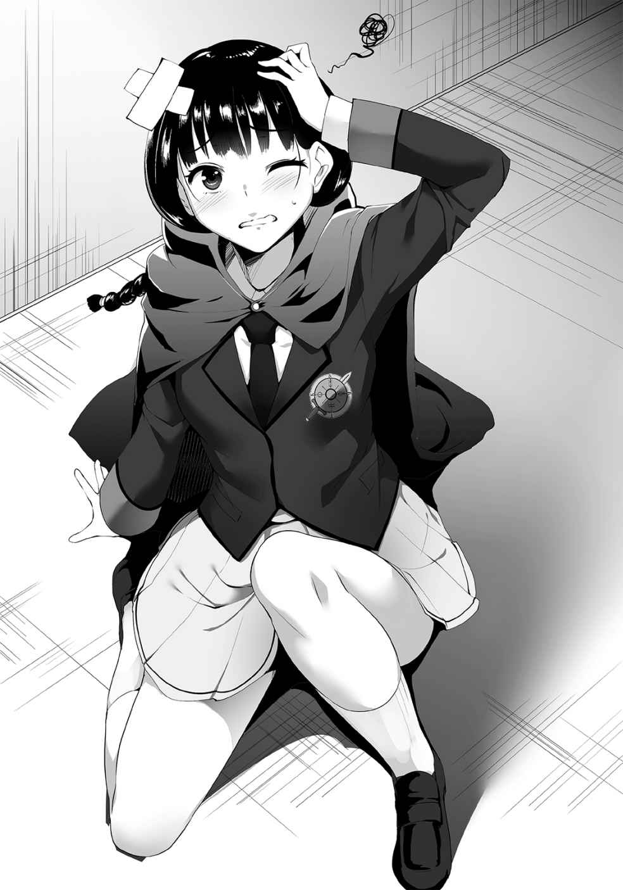
子犬のように愛嬌と好奇心に溢れた面立ちと、黒髪のおさげ。どちらかといえば華奢な体軀な二年生。おっぱいは小さめ。
彼女は、新聞部の副部長──新庄ちはるだった。
新庄は、僕が生徒会長になったときのインタビューや、生徒会の密着取材を行っていたこともあり、顔馴染みである。
「どぉーも、ちはるです」
「で？ なんでスパイをやってるんだ？」
僕は挨拶もそこそこに、さっさと話を片づけようとする。
「スパイ？ なんのことですかぁ？ ちはるは、噂の真相を確かめるため〈副部長統合団体〉の潜入取材中なんです。ジャーナリズムですよぉ」
「気が付いたら指導者になっていたと？」
「違います。ちはるはチョー頑張って、この地位につけたんです。ホント、大変でした」
「このことは内緒なんだな？」
「ちょっと、なんで先回りして話すんですかぁ!? ......まあ、その通りなんで、よろしくお願いしますよぉ。とくに、指導者ＡさんとＢさんに見つかったらヤバイです。ちはるは、団体による尊厳を無視した惨い制裁に掛けられてしまいますぅ」
「それはエロい！」
僕は、新庄がエロいことをされている姿を想像した。
「純くん、以下略」
シイナが的確に、僕の思考を捉えてくる。どうしてバレてしまったのだろうか。
新庄は、はてなマークを頭上に浮かべながら、
「ちはるは今後も潜入取材を続けます。一大事が起きそうならすぐに──」
「僕たちは、裏口から出ればいいんだな？」
「──あ、はい。そうですけどぉ。どうしてご存じ？」
「さあ、シイナ。次がこない内に行こう」
「はい」
「ちょっとぉ、なんなんですか一体？ もしかして、ちはるの助け、いりませんでした？」
僕とシイナは、嘆く新庄を残して、部屋を出て行った。
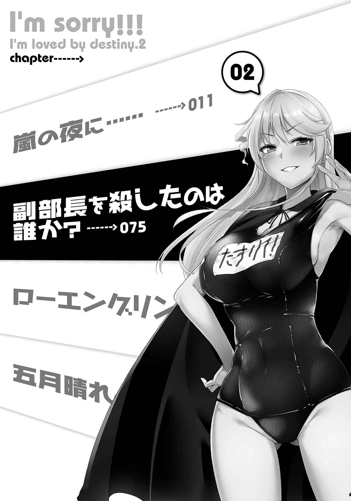
やっと自由になれた僕たちは、シイナの要望もあって、近くの学食へと足を運んだ。
なんでも昨日から紅茶とケーキとお菓子しか食べてないとのこと。僕なんか一食につき、おにぎり一個しか与えられなかったのに、酷い待遇の差だ。
「無事に脱出できたわけだけど、見つかったらまた連れ戻されるかな？」
僕はらーめんを啜りながら疑問を述べた。
「連れ戻されるんじゃないですか」
シイナはカルボナーラをフォークにぐるぐる巻きながら答えた。
「やっぱり、そうか......。真の自由は遠いね」
「そんなことはないでしょ」
「え、どうして？」
「だって、〈副部長統合団体〉の指導者さんってみんなスパイですし」
「たしかにそうだった」
脱出することに重きを置き過ぎていて失念していた。
〈副部長統合団体〉のいわばトップ３が、まるっきり組織の活動に否定的だ。これではクーデターなんて起こせるはずもないだろう。
しかし、ひとつ問題がある。
「でもさ。三人が三人とも、自分だけがスパイだって思い込んでたよね？」
「ええ、そんな感じでしたね」
シイナは、ぐるぐる巻きにしたカルボナーラを頰張りながら頷く。
「うーん、そうか......」
僕は箸を止め、腕を組んで思案に耽った。
指導者たちは、絶対に他の人にスパイだとバレてはならないらしい。それほど、三人が三人とも、他の二人を警戒していた。うん、これは使える。
僕は重大な決断を下した。
「よし。これを利用して、〈副部長統合団体〉を乗っ取ろう！」
それを聞いたシイナは、「はぁ？」と困惑する。
「......なんでそういう発想になるんですか。ふつうに種明かしすれば、それで解決でしょ？」
「それじゃ面白くないよ」
「べつに面白さを追求しなくていいです」
「だって、僕を酷い目に遭わせた奴らなんだよ？ せっかく弱みを握ったんだ。どうせなら、乗っ取ってあいつらをこき使ってやりたいじゃないか。きっと良い暮らしができるよ？」
僕の中では当然の発想である。
だけど、シイナは完全に呆れていた。
「あいかわらず性格が歪んでますね」
「いやぁ、照れるじゃないか」
「褒めてませんって」
僕が新たな目標を得て、気分晴れやかに食事を摂っていると、にわかに食堂が騒がしくなった。どかどかと、食事をする気のない連中が食堂へと侵入してくる。
〈副部長統合団体〉の追っ手がやってきたのかと焦ったが、ようすからしてその限りではないようだ。
「なんの騒ぎだ、一体？」
「皆さん、生徒会の腕章をしてますよ」
シイナのいう通り、男女混じった乱入者の腕には、「生徒会」と書かれた腕章がある。ということは、詐欺師でない限り、生徒会の連中なのだろう。
生徒会は、あっというまに、食堂の出入り口を封鎖した。
「これより一斉点検を行います。一同、着席のまま動かないでください」
ハンドスピーカーを持った男が、食事中の人間に、偉そうに指示を飛ばす。
それから間髪容れずに、生徒会の執行部員が食堂に散った。皆、手にはバインダーを抱えている。一人一人の顔と名前をチェックしつつ、聞き込みを行っているようだ。
僕たちのところにも、すぐに生徒会がやってきた。
「要注意人物発見！」
執行部員は、人の顔を見るなり、跳び上がってどこかへ走った。
「なんで僕が要注意人物なんだよ!?」
「日頃の行いって奴ですよ」
シイナは肩を竦めた。
「僕は優等生だよ。悪いことなんて、したことないのになぁ......」
「どの口がそれをいいますか」
世間の評判と、自己評価のギャップに苦しんでいると、走り去った執行部員が、生徒会の役員を連れて帰ってきた。この場の責任者であるようだ。
「おお、純。生きていたのか？」
「なんだ聡士じゃないか」
やって来た役員は、副会長であり、僕の親友であり、田宮さんの夜の相手である、北上聡士であった。
「昨日から行方不明って聞いて心配してたんだ」
聡士は、メガネのフレームを中指で押し上げながら言った。
「なんだよ、田宮さんに聞かなかったのか？」
「ん？ 昨日は会っていないが、なにかあったのか？」
「あ、いや......なんでもない」
僕は咄嗟にこれ以上の言及を避けた。
〈副部長統合団体〉を乗っ取る計画に、支障をきたす可能性を感じたからだ。
かつて聡士は、僕の生徒会で副会長を務めていた。しかし、現生徒会長の朝倉にヘッドハンティングされて、僕を裏切った。
本当ならば、その時点で友好関係を解消するべきなのだが、僕には聡士しか友人がいない。もしも絶交したら、僕は友達のいない寂しい奴になってしまうので、まだ親友のままでいる。
それはともかく──いま、副会長に就いている点でも分かるが、このメガネは有能だ。〈副部長統合団体〉の危険性を感じて、スパイを送り込むような奴である。
情報を与えすぎると、僕の計画の障害になりかねないのだ。
「聡士、それよりさ。この騒ぎはなんなんだよ？」
僕は話題を変えた。
すると、聡士は食堂のようすを見渡し、
「五十嵐さんの捜索活動だ」
と疲れたように言った。
「まだ捕まってないんだね」
「後援者がいるのだろう。連日の捜索でこちらは疲れ果てている。純はなにか知らないのか？」
「ああ、見たよ。五十嵐センパイを」
「なに!? 本当か？」
僕の言葉を聞いた聡士は、前のめりになる。
よっぽど、情報を欲しているようだ。
「昨日の夜さ。雨の中をスク水着て歩いてたんだよ」
僕は得意気に言った。
「..................純。妄想も大概にしろ」
聡士は深くため息をついた。こいつは全然人の話を信用していないようだ。
「本当だって！」
「分かった分かった、もういい」
まるで、「訊いた俺がバカだった」といわんばかりの態度である。
これが親友に対する態度であっていいのか？ 僕はやるせない思いを抱きながら、辛辣な親友にむかって疑問を呈す。
「聡士、でもさ。五十嵐センパイを捕まえてどうするんだよ？ たしかに五十嵐センパイは横暴な生徒会長だったよ。でも、いまはただの一般生徒だし、悪いことなんてひとつもやってないじゃないか？」
べつに、五十嵐センパイの肩を持つつもりはない。だけど、なにもしてない人を捕まえようとする生徒会の遣り方には、釈然としないものがあった。
「純、言いたいことは分かる。ただし、これは学園のためなのだ」
「学園のため？ 朝倉が保身を考えてるだけじゃないのか？」
予言が成就すれば、朝倉は五十嵐センパイに発砲される。そうなれば、悶絶するのは必至。数日間、悪夢にうなされ続けるだろう。朝倉はそれが嫌で、生徒会を使い、大がかりな捕り物をしているようにみえる。
だけど、聡士は強情にもそれを否定する。
「いいや、学園のためだ。いまの朝倉には生徒会長の立場がある。もしも、会長の身に一大事があれば、学園の新たな火種になるだろう。俺たちは生徒会だ。学園の平和を守る義務がある」
「でもさ、今回の予言って、期間の指定がないだろ」
「なかったな」
「だったら、捕まえた五十嵐センパイを、まさかずっと監禁しておくつもりなの？」
「......それも致し方ない。一人の犠牲で学園の平和が保たれるのだ」
聡士は若干後ろめたそうに──しかし、毅然とした意思をもって肯定した。
「こんな遣り方、横暴じゃないか。道理に合ってない！」
僕は声高らかに訴えた。
「純くんの言う道理ってなんなんですか？」
すると、シイナが不思議そうに訊いてきた。
「そんなの決まってるじゃないか。僕を追い落とした朝倉が無事であることと引き換えに、いさかいはあったにせよ──美人でおっぱいが大きくてスク水を着てくれた五十嵐センパイがひどい目に遭ってることが許せないんだ」
「それ、道理違います。ちょー個人的な理由です」
「どっちでもいいさ。とにかく、いまの生徒会は横暴だ」
と、僕は副会長を睨んだ。
しかし、聡士は眉一つ動かさず、
「それを、おまえには言われたくない気がするが──横暴なのは認めよう。だが、俺たちには責任がある」
「いい人ぶってる朝倉は、これを認めてるのか？」
「これは、朝倉会長の決定だ」
「見損なったぞ朝倉！ バーカ、バーカ！」
ここに朝倉がいないことをいいことに、僕は力いっぱい彼を非難した。
シイナと聡士は、呆れた顔で僕のことを見ていた。
そして、ここぞとばかりに聡士が言う。
「じつはな......俺が、純を要注意人物に指定したんだ。この意味が分かるか？」
「僕がとっても優秀な人間だからでしょ？」
「......おまえが朝倉に恨みを持ってるからだ」
「ああ、なるほど」
僕は納得した。それに関しては、否定できない事実である。
「いまの体制に不満をもった連中は、予言を機と感じているだろう。噂ではクーデターを企んでいる地下組織や所在の摑めない連中もいる。俺は、おまえの無駄な行動力を心配しているんだ。普段はやる気ないくせに、どうでもいいときにどうでもいいことをするからな」
「大丈夫だよ、聡士。僕はたしかに朝倉に恨みがある。けどさ、平和を乱してまでなにかをやろうなんて思ってないよ」
「そうか......分かった、信じよう」
僕の顔をじっと見据えた聡士は、メガネを光らせて、納得の姿勢を見せた。
だがしかし、一年間の付き合いから僕は知っている。聡士は、僕のことなんてこれっぽちも信用していないのだと。
◇
聡士率いる生徒会執行部員が撤退して。
落ち着かない食事を終えた僕たちも、食堂をあとにしていた。
曇り空の下を、アテもなくふらふらと歩きながら、
「さて、〈副部長統合団体〉を乗っ取る計画を立てようか」
「舌の根も乾かぬ内にそれですか」
シイナはジト目だった。
「べつに聡士に迷惑をかけるつもりはないさ。たぶん」
「たぶん？」
「何事にも絶対とは言い切れないよ」
「つまり、迷惑掛ける気満々なんですね──って、前方になんか変な人がいます」
シイナは前方の何かに気づき、足を止めた。
「どうしたの？」
シイナのおっぱいを見下ろしながら歩いていた僕は、つられて前を見る。
行く手には、路肩に植えられた茂みがある。その茂みから、人間の腕が一本伸びていた。
腕は、こちらに向かって手招きをしている。
「純くんの知り合いですか？」
「どうしてあれが僕の知り合いってことになるの？ シイナの繫がりかもしれないでしょ？」
「変人は、純くんの関係者って相場は決まってます」
「あいかわらず酷い言いようだね」
「で、あれはどうするんです？ 避けますか？ 逃げますか？ 無視しますか？」
シイナの選択肢には、関わるという発想はどこにもなかった。
まあ、ただでさえ〈副部長統合団体〉とお近づきになっている昨今。これ以上、変な人間とは関わりたくないという思いは、僕だって共通である。よって、
「よし、引き返そう」
僕は避ける方針を選択した。
「そうしましょう」
僕たちはそろって踵を返す。
とたん、後ろから茂みを突き破る音が聞こえた。腕の主が飛び出して来たようだ。
「ちょっと待ってくださいますか!?」
呼び止められてしまった。さて、どうしたモノかと迷う。
「純くん、走りましょうか？」
ひそひそと、シイナが声を潜めて提案してきた。
「うん、そうしよう」
僕は後ろも見ず、シイナの手を引いて走り出した。
「させませんわ！」
逃げ出した僕たちの背中に、凄まじいプレッシャーがのしかかった。路面を蹴る規則正しい音が、瞬く間に後ろから肉薄してくる。
相手は、すごく良いフォームで僕たちを追い越し、行く手に立ちふさがった。相手の格好は、黒マント姿だった。
「なんだ、〈副部長統合団体〉の連中か？」
「なんですかそれは？ わたくしはそのような人ではなくてよ？」
と、言いながら、ぜぇぜぇと肩で息をする黒マント。さっきの疾走は、けっこう無茶をしたようである。
「じゃあ、一体おまえは誰なんだよ？」
「ここでは、ちょっと正体は明かせませんの。裏路地に入りませんか？」
黒マントは親指を立てて、建物と建物の隙間を指した。
「おまえのような怪しい奴に連れられて、裏路地に入り込むバカがどこにいるか!?」
「純くんがまともなこと言ってます」
「当たり前だよ、シイナ。さすがに変な連中に連行されるのはこりごりだ」
「わたくしは怪しい人ではありませんの」
「顔も見せない奴がなにを言っても信用できるわけないだろ」
僕の正論に、黒マントは「うっ......」と怯む。
いちおう、常識は持っているようだ。
「......でしたら、仕方ありませんわ。ここは一か八かです。見なさい皐月純っ。これがわたくしの正体ですわ！」
覚悟を決めた黒マントは、公共の道の真ん中で、ヘンタイのように両手を大きく広げ、マントに隠れた自らの姿を晒した。
それは主観的に銀河だった。いくつもの星々を内包し、鮮やかな色彩の光を放っている。
「う、うわっ、眩しい......なんてこった！」
マントの内側に広がっていた、容赦ない絶景に、僕の心は一瞬で奪われた。
結論から言おう。スク水だった。黒マントの下は、スク水を着た五十嵐センパイだった。双子峠のゼッケンには『たすけて！』と走り書きされている。
やはり、僕の目に間違いはなかった。
五十嵐センパイは、昨晩、部屋の外に現れたときと同じ格好だった。
「皐月純。これで理解できましたわね？」
ヘンタイ的にマントを広げたまま、五十嵐センパイは言った。
「理解した」
紳士である僕は、一を知って十を理解する。すぐに五十嵐センパイに飛びつこうとした──けど、シイナに上着の裾を摑まれ、前進を阻止された。
「痴漢はさすがに弁解の余地はありませんよ？」
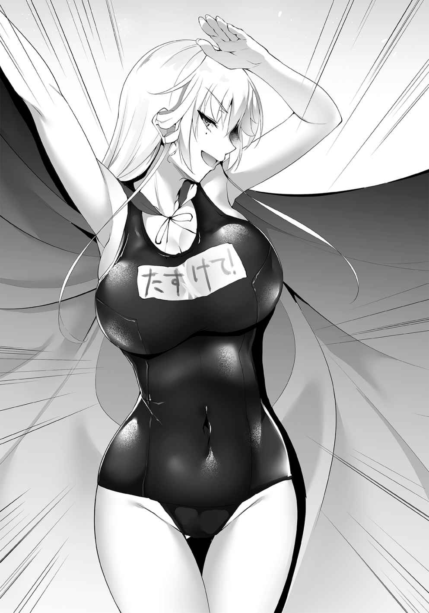
「違うんだよシイナ。ぱっと見、どう考えても痴漢は五十嵐センパイだし、センパイは僕を誘ってるんだ！ じゃなかったらスク水なんて着てないよ」
「筋が通ってる気がしますけど......五十嵐さんはそんな風には思ってないようです」
とシイナが、視線で五十嵐センパイを指し示す。
「......い、いきなり襲いかかるなんて、このヘンタイっ」
五十嵐センパイの腰は引けていた。僕を受け入れる準備は整っていないご様子である。
「ヘンタイにヘンタイって言われたくない。じゃあ、なんでそんな格好してるんだよ？」
「ですから、わたくしの胸を見てくださいな」
「あいかわらずでかいな」
「そこではなくて、ゼッケンを！」
「『わたくしを好きにしてください』」
「『たすけて！』って書いてありますわよね!?」
「なら、初めから口でいえよ。助けんけど」
「まあっ、なんて方！」
五十嵐センパイは大げさに驚いてみせる。
先々月、僕に数々の仕打ちをしておいて、一体どの口が「助けて」なんて言えるのだろうか。今日も平常運転で、自分勝手な人である。
関わり合いになりたくなかったので、立ち去る一手を考えていると、
「五十嵐発見！」
どたどたと大股で、生徒会の執行部員がやって来た。
路上でヘンタイ行為に及んだため、悪目立ちしたあげく、だれかに通報されてしまったようである。
哀れ、五十嵐センパイ。ここでお縄にかかってしまうのだろう。
ちょうどよかったので、僕はことの次第を見守ることにする。
フォーマンセルで現れた執行部員は、五十嵐センパイと僕の顔を交互に見比べて、
「やっぱり、皐月純が絡んでたのか！ だから、なかなか見つからなかったんだな！」
あらぬ誤解をされた。
っていうか、やっぱりってなんだよ。やっぱりって。
「ちょっと待ってくれ。僕は関係ない。五十嵐センパイとは偶然鉢合わせしただけで......」
「だまらっしゃい、悪徳会長ども！」
執行部員の怒りは凄まじく、全然取り合ってくれるようすはなかった。もしかして彼は、僕と五十嵐センパイの政権下で、冷遇されていたのかもしれない。
なんだか、彼らに捕まると酷い目に遭うだろう予感がひしひしと伝わってきた。
僕は後ずさりながら、逃亡の頃合いを見計らう。
しかし、
「フリーズっ、動くな！」
執行部員たちは、懐のホルダーから拳銃を抜いて、僕たちに銃口を向けてきた。
「待て待て、僕の話を聞いてくれ」
「次、喋ったら撃つぞ。俺の憧れの人にスク水メイドを着せて奉仕させた、ド鬼畜生め！」
「......」
なんとなく理解できた。僕は彼に、個人的恨みを買っているようだ。
執行部員の彼は、シイナに向かって、汚いモノから遠ざけるような口ぶりで言う。
「そこの女子。危ないのでふたりから離れるんだ」
「はい」
シイナはあっさりとその言葉に従った。執行部員たちの後ろへと避難する。僕は見捨てられてしまった。
「っ......」
なにか言いたかったけど、喋れば間違いなく撃たれるので、眼差しだけで僕は訴えた。「見捨てないで！」と。
それが通じたのかどうか分からない。
けれどシイナは、やれやれといった調子で肩を竦め、
「──あっ、あれはなんでしょうか？」
ふいに、明後日の方向を指差して、起伏のない声を張った。
僕たち三人の中で最も信用のあるシイナの言葉に、執行部員もつられてよそ見をしてしまう。
「いまですわ、皐月純っ」
隙を見計らって真っ先に動いたのは五十嵐センパイだった。僕の名前を呼んで、なにかを投げよこす。
僕は反射的に、それを空中でキャッチ。懐中電灯のような円柱の器械──ディスティニーセイバーの柄だった。握るとすぐに手に馴染んだ。またこれの世話になるときがこようとは。
「ちくしょ、仕方ない」
僕はディスティニーセイバーのスイッチを入れ、光の刃を出す。
同時に五十嵐センパイもディスティニーセイバーを抜剣した。
ブンッという抜剣の音を聞いて、執行部員たちは視線を僕たちに戻した。
「あいつら、武器を──」
執行部員たちが銃を構え直すよりも早く、僕と五十嵐センパイは行動に移る。
僕は、手近なひとりを不意打ちで斬り捨て、間髪入れず、さらにもうひとりを狙う。
狙われた執行部員は、慌てふためき、無茶苦茶に拳銃を発砲するが、照準が定まらず黙っていても当たらない。
冷静な足どりで肉薄した僕は、ディスティニーセイバーを一振りして、拳銃を破壊し、返す刃で相手の体を斬った。
その横で、五十嵐センパイも残るふたりを斬り捨てる。
執行部員たちは、呻き声を上げて、地面に倒れ伏した。最低三日は悪夢にうなされ、目覚めないだろう。
「ふん、たわいもない」
「楽勝ですわね」
僕と五十嵐センパイは、ちょっと格好をつけながら、ディスティニーセイバーの刃をしまった。
あくまでも相手は、生徒会の執行部員。普段は事務作業をしている連中だ。大規模な五十嵐センパイの捜索のため、数合わせに駆り出されたのだろう。
関ヶ原の指導を受け、二度の大戦を経験している僕の敵ではない。
だけど、治安維持部が相手じゃなくて本当によかったと、胸を撫で下ろした。
「あーあ、やっちゃいましたね......私、逃げる時間を稼ぐつもりだったのに......」
地面に転がる絶望した骸を見下ろしながら、シイナは後悔を滲ませた。
「ありがとう。シイナのおかげだよ」
「やるではありませんかシイナさん」
僕と五十嵐センパイは、シイナの肩を叩きながら、口々に称賛する。だが、受け取る本人はとても複雑そうだった。
「どうしましょう。見捨てればよかったのに......つい助けちゃった自分が恥ずかしいです」
「これでシイナも同罪だね」
「えー」
いまさらなんと言おうが、後の祭りである。
僕だって、五十嵐センパイの共犯にされてしまったのだ。もはや、状況を受け入れるしか道はない。
「さあ、皆さん。ちんたらしている場合ではありませんわ。人が来る前に逃げるのです」
目撃者の口封じをした僕たちは、スク水黒マントの五十嵐センパイに先導されて、裏路地へと入っていった。
◇
繰り返すようだが、白滝学園の敷地はたいへん広大である。
山中に建てられたこの場所には、丘や林はもちろん、湖も複数存在している。
学園の最北には、直径一〇〇メートル級の湖があり、その湖畔にはうち捨てられたような小屋があった。
五十嵐センパイはいざというときのため、ここをセーフティーハウスとして、前々から用意していたらしい。
「どれだけ手回しがいいんだよ」
「うわぁ......」
僕とシイナは、小屋の中に案内されて呆れかえる。
外観はボロボロだけど、内側はしっかりと手入れされていた。
煉瓦造りの暖炉。大容量の冷蔵庫。ふかふかのベッド。壁には各種ライフル銃やディスティニーセイバーが複数。
そして、極めつけは、暖炉傍に干された替えのスクール水着の数々。
「衣装がスク水しかないんですけど、頭大丈夫ですか？」
嬉しがる僕が訊ねるまえに、シイナが代わりにつっこんでくれた。
すると、五十嵐センパイは腰に手を当て難色を示す。
「シイナさん、スク水をバカにするのは控えてください」
「べつに、スク水をバカにしてるわけじゃありませんけど......」
「いいですか？ よく聞くのです。スク水は逃亡生活には便利なアイテムですわ。下着を着る必要もなく、ワンピースなのでお腹もぽかぽかします。走るさいの空気抵抗を減らせます。緊急時には、湖に飛び込んで逃げることだってできるのです。これほど、多機能な服装が他にあると思いますの？」
「なんていうか、色々とタフな人ですね......」
感心、呆れ、どっちともつかない難しい面持ちだった。
「では、皆さん。誤解も晴れたようですし、今後について意見を交換しましょう」
五十嵐センパイは黒マントを脱ぐと、部屋のソファーに座り、艶めかしく足を組んだ。
スク水でソファー。この組み合わせもなかなかそそるものがあると僕は思った。
「自首しましょう」
シイナが言った。
「詳しい事情を説明すれば、いまなら許して貰えます」
「嫌だよ」
「却下ですわ」
僕と五十嵐センパイは即座に否定する。
「......じゃあ、どうするんですか？ このままずっと逃亡生活を続けるんですか？」
「そこが問題ですの」
シイナの指摘に、五十嵐センパイはため息をつく。
「わたくしには、こういうときに頼りになる狡猾な親友がいるんですわ。しかし、事情があって、いま彼女は入院中ですの......」
「それはご愁傷様です」
「ですから、わたくしは状況を打開するため。下品で狡猾な男に助けを求めたのです」
ちらっと、五十嵐センパイが僕のことを窺った。
僕はむっとする。
「人のことを下品呼ばわりするな。失礼じゃないか」
「事実ではありませんか」
「それが助けてくださいってお願いする人間の態度かよ？」
「あら、これで貸し借りなしですわよ？ 先月、わたくしがあなたがたの窮地を救ったことを覚えてなくて？」
五十嵐センパイは、僕とシイナが朝倉たちに追われているとき、身を挺して僕たちを逃がしてくれたときのことを言っているのだろう。
あのときはたしかに助かった。けれど、
「結局、あのあとすぐにボロ負けしたからな。結果的に五十嵐センパイの犠牲はなんの意味もなかった。だから、ノーカン」
「まあっ、なんて人かしら！」
「純くん。自首する気がないなら、いがみ合ってないで素直に協力すればいいでしょ？」
「うっ......」
シイナに正論を言われ、僕は言葉に詰まる。
崖っぷちに立たされているのはこちらも同じだった。シイナの言う通りに、協力関係を築くのがベストなのは頭では理解している。
「けどなぁ......五十嵐センパイには散々酷い目に遭わされたしなぁ......」
僕はぶつくさと文句を垂れた。
「それ、お互い様ですって。いまは、そんなこと言ってる場合じゃないと思います」
シイナは仕方なしとばかりに、説得の言葉を並べてくる。彼女にとっても、この状況は頂けないのだろう。まあ、当たり前だけど。
「仕方ない」
シイナにそこまで言われては、折れないわけにはいかなかった。
「──じゃあ、五十嵐センパイのスク水に免じて、ここは手を組もう」
「けっきょく、そこですか......」
◇
一度協力関係になれば、僕と五十嵐センパイの意見は、驚くほど一致する。
「わたくしは絶対にいまの生徒会を許しませんっ」
「そうだそうだ！ いまの生徒会は間違ってる！」
「いまの生徒会は、保身しか考えていませんの」
「いまの生徒会は、生徒の自由を侵害している」
「改革が必要ですわ」
「むしろ革命だな」
「そうですわ。いまこそ、怒れる生徒による革命の実現を！」
「学園の平和は、僕たちの手にかかってる！」
「打倒、生徒会！」
「打倒、朝倉朝顔！」
かつての学生運動を彷彿とさせる熱気を帯びた湖畔の小屋。
暑苦しく学園の今後を語り合う僕と五十嵐センパイを尻目に、シイナは他人のベッドでごろごろと暇そうにしている。
「ふたりとも意気込みはいいんですけど、具体的にどうするんですか？」
「僕には壮大な腹案がある。大船に乗ったつもりで任せたまえ！」
「ものすごく不安を搔き立てられる言い方はやめてください」
「大丈夫。僕の作戦は完璧だからさ。ますは、日が落ちるのを待つ。これには役者がもう一人必要だ。さて、これから忙しくなるぞ」
◇
夜が更けるのを待って、僕とシイナは、闇に紛れて学園の中央広場に戻った。
目的の場所は〈運命に従う会〉の部室棟。今度は自主的にやってきた。
一階の受付で門前払いされそうになりながら、なんとか頼み込んで、苺の部屋まで通してもらう。
就寝前の苺は、ネグリジェに薄手のカーディガンを羽織って、ホットココアを吞んでいた。
今日も優雅な生活を堪能してらっしゃるようだ。
「あら、皐月さま、天使さま。こんな夜遅くにどうなさったのでしょうか？」
苺の言葉遣いは、あいかわらず丁寧だ。けれど、以前のような歓迎はない。むしろ、怠そうな口調は、「さっさと帰れ」と暗示しているように聞こえる。僕たちの飲み物も、用意される気配はなかった。
半ば予想していたことだけど、やっぱり悲しい。
かつての仲間に対して、その仕打ちはないだろうと思いつつ、僕は感情を押し殺して題目に入る。
「苺ちゃん、聞いてるよ。ピンチなんだってね？」
「ピンチ？ あら、なんのことでしょう？」
「生徒会から、部費の返却を求められているらしいじゃないか？」
つい先日、前生徒会からの引き継ぎ作業が終わった朝倉たちは、最近本腰を入れて、不正の撲滅に乗り出した。そのターゲットのひとつに〈運命に従う会〉も入っている。
「ああ、そのこと──安心してください。わたしたちは一切応じるつもりはありませんから」
けろっと苺は言った。
胆力だけは成長著しいようだ。しかし、それだけでは世の中は渡っていけない。
「まさか、『返さない』って言えばそれで済むなんて思ってないよね？」
「えっと？」
僕の、上からの物言いに、苺は目をぱちくりさせて、不安を見せた。
心の隙間を察した僕は、ここぞとばかりに語り始める。
「おいおい、苺ちゃん。いまの生徒会の遣り方を見てみなよ。正義を掲げてやりたい放題でしょ？ 予言があったからって、罪も犯していない五十嵐センパイを拘束しようとしたり。五十嵐センパイの捜索のため、非公式の持ち物検査を断行したり、武装した捜索隊なんかも配置されてるんだ。生徒の安心とか自由なんて、なにも考えちゃいないよ？ そんな生徒会が、口頭で拒否しただけで納得してくれると思っているの？ 当然、無理だよね？ きっと、近いうちに治安維持部を引き連れた執行部員がここに乗り込んでくるよ。そして、残った資産を全部没収していくに違いないんだ」
「っ────」
苺の顔色は、みるみるうちに青くなっていった。
いま言ったことは、苺にとっても想像に難くないことだろう。
もしも資金を取り上げられると、いまのような生活は続けられなくなる。
喪失の恐怖が、苺の心に芽吹いたに違いない。
「苺ちゃん。そんなことになったら嫌だよね？」
僕は優しく、そして嫌らしく微笑みかけた。
「さ、皐月さま......わたしはどうすればいいのでしょうか!? ぜひ、わたしの救世主になってくださいませ」
やっと、苺の態度が昔のようにうやうやしくなってきた。やっぱり苺はこっちの方がいい。
「大丈夫だよ苺ちゃん。昔もいまもこれからも、僕はキミの救世主に決まってるじゃないか。ははははは──」
「うわぁ......ヤクザの手口ですね......」
ことの終始を見守っていたシイナは、まとめるように感想をぼそっと呟いた。
◇
翌日の午前。
湖畔の小屋にて、秘密の会議が始まった。
出席者は四人。僕とシイナと五十嵐センパイ。それに、〈運命に従う会〉の苺である。
一同は、校内地図が広げられた机を囲む。
「では、革命の具体的計画を説明する」
僕はもったいを付けていた腹案を、ここでお披露目する。
「諸君、ローエングリン作戦を知っているかな？」
「はい」
シイナが挙手をした。いまは厳粛な会議の場なので、発言は挙手制である。
「どうぞ、シイナくん」
「知らないので、もったいぶらないで早く説明してください」
やっぱりシイナは、どんなときでも僕に冷たかった。
僕は涙を吞み、
「......よろしい、説明しよう」
ローエングリン作戦。
それは、いっこうに五十嵐センパイが捕まらない中、『もしも』の事態を想定した副会長の聡士が立案した作戦である。
『もしも』とは、もちろん、朝倉会長が何らかの不運（五十嵐センパイの発砲など）に遭い、生徒会長として君臨できなくなった場合のことだ。
「ローエングリン作戦は、朝倉の悶絶がトリガーとなり発動される。目的は、会長が復帰するまでの期間、校内の混乱を防ぐことにある」
この作戦を立案するにあたり、聡士は、治安維持部の協力を取り付けた。
ビッグ３と言われる大御所──近衛騎士団、桜ノ治安維持部、ノブレスオブリージュ。
それに、中堅の五つの治安維持部。
ローエングリン作戦証書には、これら八つの部長の承諾サインが記されている。作戦発動の際には、電撃戦が想定されるので、八つの治安維持部はすべて指揮系統を統一化。
総指揮官として、最も部員が多い治安維持部──近衛騎士団の団長が指揮をとる手筈となっている。
「作戦発動後。治安維持連合は、首謀犯の拘束、および暴動の即時鎮圧を行う。その後は、会長復帰まで治安の警戒にあたる──以上が、ローエングリン作戦である」
「つまり、これを利用しようって魂胆ですわね？」
五十嵐センパイは挙手をしながら喋った。
「うむ。その通りだ」
僕は偉そうに五十嵐センパイのあとを引き継ぎ、校内地図の東側を指した。
「革命作戦は、まずここからスタートする。〈副部長統合団体〉をけしかけて小さな暴動を起こす。生徒会執行部は、暴動の鎮圧に向かうだろう。つまり、生徒会室の守りは手薄になるわけだ」
校内地図の上をなぞって、中央にある生徒会庁舎を表す。
「そこへ、僕たちは部隊を率いて、一気に生徒会庁舎を襲撃する。朝倉以下、生徒会役員の身柄を確保。そして、確保した役員の名前を使って、非常事態宣言を行う。内容はこうだ──『一部の役員の反乱により、朝倉会長は絶望しました』」
これによって、朝倉の絶望が周知の事実と化し、ローエングリン作戦が自動的に発動される。
「緊急出動した治安維持連合は、僕たちが流す偽情報にそって、庁舎に不在だった役員を逮捕していくことになるだろう。現生徒会の役員は、すべて僕たちの手中に落ちるわけだ。勝利は確定した」
「純くん、生徒会なくなっちゃいましたよ？ そのあとはどうするんですか？」
シイナが手を挙げて質問した。
「臨時の生徒会を作る。ここの四人で主要役員を固め、残りを〈副部長統合団体〉に任せる予定だよ」
「それはいくら何でもダメでしょ？」
「いいや、そんなことはないよ。だって、彼女たちはグレても副部長なんだよ？ 基本優秀だから、しっかり仕事をしてくれるよ」
それに、〈副部長統合団体〉の多くも、自分たちが上に立つことを望んでいる。まさに一石二鳥だ。
「いえ、そっちじゃなくて。私たちのほうですって」
「え？ なにか問題あるの？」
「ありますよ。役員人事権は朝倉さんが握ってるんですよ？ 私たちは役員として承認されませんって」
「ふふふふ──安心するんだ。そこら辺も抜かりはないよ」
「はぁ？」
「今週の予言を利用するんだよ。朝倉は五十嵐センパイに発砲されるから、危ないでしょ？」
「ええ」
「だから、朝倉には『安全な場所』でしばらく生活してもらう。これで、朝倉が表に出てこなくても世間への言い訳が立つ」
「『安全な場所』ですか......」
もちろんシイナも『安全な場所』は理解しているだろう。
つまり、それは地下の鉄格子の中だ。ここならば、五十嵐センパイと鉢合わせすることなく、安心して生活できるだろう。
そして、僕たちは『自称・朝倉会長の承認を受けた役員』として学園の運営にあたるのだ。
こういうものは言ったもの勝ちである。一旦、権力を掌握してしまえば、不審に思われても力でなんとかできるのだ。
「そもそもさ。生徒会の遣り方が汚いんだよ。朝倉の身を守るために、五十嵐センパイを監禁する？ はんっ、笑っちゃうね！ 一般生徒のことを想うなら、五十嵐センパイの自由を守るために、朝倉を監禁しろよ！」
「そうっ、そのとおりですわ！」
僕の論理的な意見に、五十嵐センパイは感銘を受けたように目をうるうるさせた。スク水との相乗効果もあって、やけに可愛く感じてしまう。
気がよくなった僕は、調子にのって朗々と演説する。
「僕たちは必ずや生徒会を打倒しなければならない。これは一見、反逆に見えるかもしれないが真実ではない。なぜならば、僕たちは正義を貫くために立ち上がったんだ。保身を優先する悪逆非道の生徒会を許さないという無垢な心に突き動かされてる。この事実は、きっと後世が理解してくれるだろう。歴史に官軍だと記されるのは、間違いなく僕たちであるのだから！」
「素晴らしいっ。最高ですわ！」
僕と五十嵐センパイは、ふたりだけで盛り上がった。まだ戦ってもいないのに勝ったような気分である。
そんな常夏のふたりに対して、一方のシイナと苺は、初冬のようにひんやりしていた。
「はい。ところで皐月さま」
苺は心底不安そうな面持ちで、遠慮がちに手を挙げた。
「どうしたの苺ちゃん？」
「わたしのお金はどうやって守られるのでしょうか？」
「ああ、なるほど」
苺にとって学園の情勢など二の次。自分の資金が無事であるかどうかだけに関心があるようだ。
ブレない姿勢に感心しつつ、僕は、ちょっと難儀な交渉に入る。
「じつはそのことについてなんだけどね」
「はい」
「苺ちゃんには、いま持っている資金をすべて使ってもらいたいんだよ」
「......これにて失礼いたします」
「ちょっと待った！ お願いだから、話を最後まで聞いてください」
一礼をして去ろうとした苺をすかさず呼び止める僕。
まあ、初めから難色を示されることは分かっていた。けれど、苺の資金はこの作戦において最も重要な役割を持っているのだ。ここで逃がすわけにはいかない。
「......改心したわたしにとって、お金は、命より大切なモノなのです」
苺は、我が子を取り上げられた母親の顔をしていた。
「なんちゅう改心してんだよって思うけど、分かってる分かってる。苺ちゃんのその気持ちを、僕は大切にするよ」
「......本当ですか？」
「もちろんだよ。僕は絶対に噓をつかない」
「えー」
シイナは半眼で口を挟んだ。
「シイナくん。私語は慎みたまえ」
僕はいらぬツッコミを弾いて、咳払いをひとつする。
「いいかな苺ちゃん？ キミのお金はとっても大切だよ。それを守るためには、攻めなきゃいけないときだってあるんだよ」
「攻めですか？」
苺の瞳は不安に揺れている。おっぱいも揺れている。
「うん。だって考えても見なよ。たとえ、いまある資金を守ったとしても、それを使い切ったらなにも残らないじゃないか？ 〈運命に従う会〉の活動内容がアレだから、次に部費がつくなんてことはありえないんだよ？」
「......そ、それはその通りですけど」
「だから苺ちゃんは、常に権力を握る側にいなきゃダメなんだよ。立場を利用して、予算編成を自由に決めるんだ。そうすれば、後期も来年度も、部費を手に入れることができるんだよ？ 尽きることのない財布がそこにあるじゃないか！」
実際はそんな上手く行くものではないが、僕はちょっと大げさに言ってみた。これくらい蜜を垂らさないと、保守的な人間は攻撃に打って出ない。
事実、苺は、僕の説得を受けて、目の輝きを取り戻した。
「なるほど！ さすが皐月さまです！」
苺は手を合わせて、救世主に対するように僕を仰いだ。
「そのためには、行動が必要だ。いまある資金を、困窮する部活に融資しまくって、こちらの味方につけるんだよ。生徒会庁舎を襲撃するには部隊が必要なんだからさ」
「はい、分かりました！」
「安心していいよ。この作戦が成功すれば、苺ちゃんはいまよりもずっとお金持ちになれるんだ！」
「まあ、素敵です！」
彼方にある桃源郷を夢見た苺は、希望に満ち輝いていた。
実際はどうなるのか分からないけど。
◇
その後、各人の役割を決定して、密会はお開きとなった。
先に決まったように、苺は資金を使って部隊の確保。
五十嵐センパイは、友人の近衛騎士団団長に作戦の協力を求める手筈となっている。
そして、「自分は漫画読んでいればいいですね」って態度のこの人には、
「シイナは決行当日に、〈副部長統合団体〉の指揮をしてもらう」
「はぁ!?」
シイナがめずらしく大きな声をあげた。
僕たちはいま、湖畔の小屋をあとにして、桜ノ治安維持部の訓練施設に向かっている。
その道中での不意打ちを受けて、シイナは本気の目をして訴えた。
「なにを言ってるんですか純くんっ。アホも休み休みにしてください。無理ですよ？ 私にそんなことできるわけないです！」
「まあ、落ち着いて、落ち着いて」
「無理です。根本的に無理です。私、副部長じゃありませんし」
「そこは安心していいよ。苺ちゃんに頼んである。すでに昨日から、僕とシイナは〈運命に従う会〉の副部長になってるんだよ」
これは元々、〈副部長統合団体〉を乗っ取ることを考えていたときからの案である。
「なんでそんな勝手なことしてるんですか!?」
「言えば、シイナが拒否するかと思って」
「するに決まってるでしょっ」
「いままで黙ってて正解だった」
「むーりーでーす！」
シイナが子供のように駄々をこね始めた。普段は、感情に起伏が少ないのに、意外な一面である。これはこれでけっこう可愛い。
僕は、隣のシイナの肩を抱いて、顔を近づけ、
「僕がサポートするからさ。とりあえず、シイナはみんなの前で、いつもどおりに堂々としてればいいんだよ」
と優しく言った。
「べつに私、堂々としてませんし」
「堂々としてなくてもいつもどおりでいいんだ」
「むーりーでーす！」
「まあまあまあまあ」
僕は、シイナを宥める体裁を装って、肩に乗せた手を滑らせ、彼女の体を抱きしめた。女の子というものは、華奢でもふわふわしている。
「くっつかないでくださいっ」
シイナは密着してくる僕の体を両手で押し返した。
「まったく、素直じゃないな」
「意味がわかりません」
「とにかく大丈夫。なにも心配することはないよ。この僕がすべていい感じに段取りを整えるからさ」
「だから、純くんの存在そのものが、一番の懸念材料なんですって」
「そんなに褒められても困るよ」
「どういう知能をしてたら、これを褒め言葉だと思えるんですか......」
文字通り肩を落として意気消沈するシイナ。
「そんなに嫌？」
「嫌です」
「でも、自分がトップに立てるんだよ？ 〈副部長統合団体〉のみんなを顎で使うことができるんだよ？ っていうか、シイナは団員をすでに顎で使ってたじゃん。あんな感じでいいんだよ。ダメ？」
「......」
事実を指摘されてシイナは口籠もった。
すでに〈副部長統合団体〉でのシイナの振る舞いは、団体のトップそのものであった。なにも難しく考える必要はないのだ。
「......だって、どうせ失敗する未来が目に見えていますし」
無理やり絞りだしたような反論をしてくる。
「またまた、なんでそんなにネガティブなんだよ。それは予言じゃなくて予感だよ。けどね。根拠はないけど、いまの僕は、先月とはひと味違うんだ。絶対に失敗しない！」
「だから、その言い方は負けフラグなんですって......」
◇
ビッグ３に数えられる学園屈指の治安維持部──桜ノは、野球部が野球場、サッカー部がサッカーグランドを持っているように、広い訓練施設を所有している。
ミミや関ヶ原をはじめとした部員たちは、日夜ここで戦闘技術を磨いて有事に備えているのだ。
よって、桜ノの部員はこの訓練施設にいることが多い。
関ヶ原に用があった僕たちは、彼女がいるだろう訓練施設の中の剣術道場へ足を運んだ。
「む......これは、皐月純くんと四一七さん。まさか本当に訓練に来てくださるなんて。不意を打たれた自分は感激しています」
こちらから話しかけるよりも早く、足音だけで僕たちの存在を感じ取った関ヶ原が反応を示す。
現在、道場では、四月に入部した一年生部員の剣術稽古が行われていた。関ヶ原によってびしばし鍛えられている。無垢な瞳で懸命にディスティニーセイバーを振るう一年生たちを目の当たりにすると、胸を打たれるものはあるが、自分がやろうとは思わない。だって、疲れるし。
「久しぶりですので、まずは肩慣らしをしましょう。ほら」
と、関ヶ原は練習用のディスティニーセイバーをこちらに投げてよこす。
練習用のディスティニーセイバーは出力が弱く、斬られても悶絶するほどの絶望はしない。ちょっとだけ自分の将来の見通しが立たなくなって、鬱になる程度である。
しかし僕とシイナは、それを受け取りつつも、謹んで関ヶ原にお返しした。
「本当はすごく関ヶ原さんの指導を受けたいんだけど、いまはそれどころじゃないんだよ」
「噓をつきなさい」
関ヶ原は据わった目で、僕の台詞の前半を否定した。
「うん、まあ、噓だけどさ」
「やっぱり」
「それよりも、大事な話があるんだ」
「あんまり聞きたくありませんが......どうぞ話してください」
関ヶ原は一年生の指導を中断して、こちらにやってくる。
僕たちは、ちょっと声を潜めながら、道場の隅で円陣を組んで会話する。
「じつは、大人しく身を隠していたんだけど、他の指導者たちに隠れ家がバレちゃって」
僕はできるだけ神妙な顔で言った。もちろん噓である。
だが関ヶ原は、僕の言葉に疑いを持つことなく、同じように神妙な顔をした。
「......抜かりましたね。しかし、ここに来たのはいい判断です。身の寄せどころがないなら、ここにいればいいのです。団体も、治安維持部には、そう簡単に手は出せないでしょう」
「いいや。僕たちはもう逃げないことにした」
関ヶ原からよろしくない提案が出たので、すかさず僕は、その案を潰しにかかった。
「はい？ なにをおっしゃるのですか？」
訝しむ関ヶ原。
「だってさ、僕たちはいつまで隠れて暮らせばいいんだよ？ 〈副部長統合団体〉を解体する目処って立ってるの？」
「それは......なかなか根深い組織なもので、すぐには......」
と、関ヶ原は口籠もった。
これは予期していた答えである。有能な桜ノが、わざわざスパイを送り込むという、回りくどい方法をとらざるを得ないほど〈副部長統合団体〉は厄介な団体なのだ。力業で解体できるなら、とうの昔に実行しているだろう。
僕は、しめたと心の中でにやつき、
「でしょ？ そうでしょ？ だからさ、もう逃げるのはやめにしたんだ。これからは攻める」
「攻めるって言っても、どうなさるのですか？」
「僕もシイナも埋蔵金を手土産に〈副部長統合団体〉に入ることにしたから」
「......それは無理です」
「無理じゃないさ。なんたって、僕たちは副部長なんだよ」
「えっ......それは初耳です。一体いつから？」
「昨日から」
「......」
関ヶ原は眉間を押さえて、しばらく黙り込んだ。そして、
「......無謀です。団員もそうですが、他の指導者が首を縦に振るかどうか」
「そこは指導者Ａとしてなんとかして欲しい。関ヶ原さんの腕の見せ所だよ」
と、言いつつもそこはすでにクリア済みだ。なにせ、指導者全員がスパイであり、僕の味方なのだから。
「それにさ。僕たちが入ったら、関ヶ原さんの味方になれるんだよ？ スパイ活動だって、ひとりでやるよりもずっと捗るはずだよ」
「うーん、まあ、一理ある意見です。ですけど──」
と、関ヶ原が難色を示そうとしたところに、小さな女の子がやって来た。桜ノの部長、神九ミミである。
「皐月っちにシイナっち、めずらしい顔ぶれッスね」
彼女のトレードマークは、高い位置で結んだツインテールと八重歯。どう見ても小学生にしか見えないが、聡士と並んで侮れない存在である。正直、いまの状況で会いたくなかった。彼女のまえで話をするとボロを見抜かれてしまう恐れがある。
「これは神九司令。ちょうどいいところに。自分では判断しかねることがありまして」
ミミの登場に、関ヶ原はぱっと表情を明るくする。さっそく指示を仰ごうとするが──そうはさせない。僕はことさら声を張って、
「やあ、ミミ、久しぶりじゃないか。ちょっと、ミミに相談っていうか話があったんだよ。いまって大丈夫？」
「大丈夫ッスよ？」
「よし！ それなら、ミミにはこっちから話しておくからさ。関ヶ原さんは指導に戻ってよ。さぁさぁさぁ、一年のみんなも待ってるみたいだし」
「え、ちょっと待ってください。自分は──」
僕は、抵抗する関ヶ原の背中を押して、無理やり道場の中心へと帰した。一旦、練習の最中に放り込めば、責任感の強い彼女は、教官の顔になって指導を再開する。
場所を道場の外に変えて、僕はミミに話をする。
「さてさて、折り入ってミミに教えて欲しいことがあるんだ」
「改まってなにッスか皐月っち？」
「うん、じつは関ヶ原さんの好きなモノを知りたいんだよ」
「？」
ミミが一瞬だけ、不意を打たれたような顔になる。
「へぇ～、それはどういう風の吹き回しッスか？ てっきり、〈副部長統合団体〉のことかと思ったッスけど」
「ああ、そっちは関ヶ原さんのおかげで自由の身になれたよ。関ヶ原さんには感謝してもしきれないくらい恩があるんだ。だから、恩返しというか、お礼がしたくてさ。ちょっとした気持ちなんだけど、プレゼントがしたいなと思って。これは関ヶ原さんには内緒だからね？」
僕はべらべらと即興の噓を並べた。
もちろん内心では冷や冷やしている。
ミミは、微妙な間をおいてから、視線をずらし、
「......シイナっち。皐月っちの言ってることは本当ッスか？」
わざわざシイナに確認をとる。
もしかして僕は、ミミにも信用されていないのだろうか？
それはそうと、さて、困った。よりにもよってシイナに聞くなんて......。
「......」
僕は生唾をのむ。アイコンタクトで、「分かってるよね？」と伝える。
「......」
ふたりの注目を浴びたシイナは、気圧されたように、半歩だけ後退した。しかし、ここで逃げることは、ノーを突きつけること。
時間にしたら一瞬の沈黙だった。
けれど、シイナがしゃべり出すまでの間が、やけに長く感じられ、僕は長らく呼吸を忘れていたような気がした。そして、
「......本当です」
ちょっと目を逸らし気味にシイナは言った。
よしっ、と僕は心中でガッツポーズをとる。これでシイナも同じ穴のムジナだ。
「ふーん、そうッスか」
ミミは意味ありげに、首を上下に振った。
その仕草からでは、信じてくれたのか否か、ちょっとよく分からない。
けれど、ミミはそれ以上の追及をせず、
「関ヶ原は頑張る人が好きッス」
と、にんまりしながら言った。
「そうきたか」
答えは、モノではなく人物像だった。
真面目に訓練に来いっていうことだろう。
「まっ、あたしとしては、学園が不用意に乱れなかったらそれでいいッス。関ヶ原の件は、好きにすればいいッスよ」
「ありがとうミミ。参考にさせてもらうよ。さあ、シイナ行こうか」
「はい純くん、そうしましょう」
僕とシイナは逃げるように、桜ノの訓練施設をあとにした。
◇
僕たちはその足で、茶道部へと向かった。
茶道部の部室は、学園南東にある和風庭園の中にある、木造の和風家屋である。
僕とシイナは、部室の軒先にある茶会場で、和服姿の田宮さんにおもてなしされていた。
「......」
話の前にまずは一服をすすめられ、厳粛な空気の中、田宮さんがお茶を点てる音に耳をすませる。僕は、こういう席の作法をしらない。シイナはどうなんだろうと思って、並んで正座するシイナを横目で窺うが、彼女はいつもどおりの落ち着きようである。背筋もぴんと伸びて、ずいぶん様になっていた。
僕は負けじと、胸を張って居住まいを正した。
田宮さんの手が止まり、古めかしい茶碗が、僕の前に差し出される。
「どうぞ、お召し上がりください」
「......ありがたき幸せにございます」
重ねて言うが、僕は作法をしらないので、それっぽい台詞を口にして、茶碗を手に取った。
茶を飲む前後に、茶碗を回すことくらいなら知っている。だが、具体的な回数までは分からない。
黙考。
たぶん、三回くらいで良いと思うのだけど、ここは念のため、余裕を持たせて一〇回くらい回しておいた。
回し終わって、ずずっと深緑の液体を啜る。苦かった。これのどこが美味いのかさっぱりだ。
「っ......」
僕は頑張って一気飲みした。再び一〇回転させて、空になった茶碗を田宮さんに返す。
「けっこうなお点前でした」
続いて田宮さんは、シイナに茶碗を差し出す。
「どうぞお召し上がりください」
「......ありがたき幸せにございます」
シイナも作法を知らないようだ。僕のマネをして乗り切る腹積もりらしい。
だが、他人の口から聞いて初めて分かる。その台詞はおかしい。
そんな自分の様もいざ知らず、シイナは流れるような動作で、手にした茶碗を一〇回まわし、茶を一気飲みして、これまた一〇回まわし、茶碗を田宮さんに返した。
「けっこうなお点前でした」
本人は完璧にやったつもりなのか、ちょっと誇らしそうである。
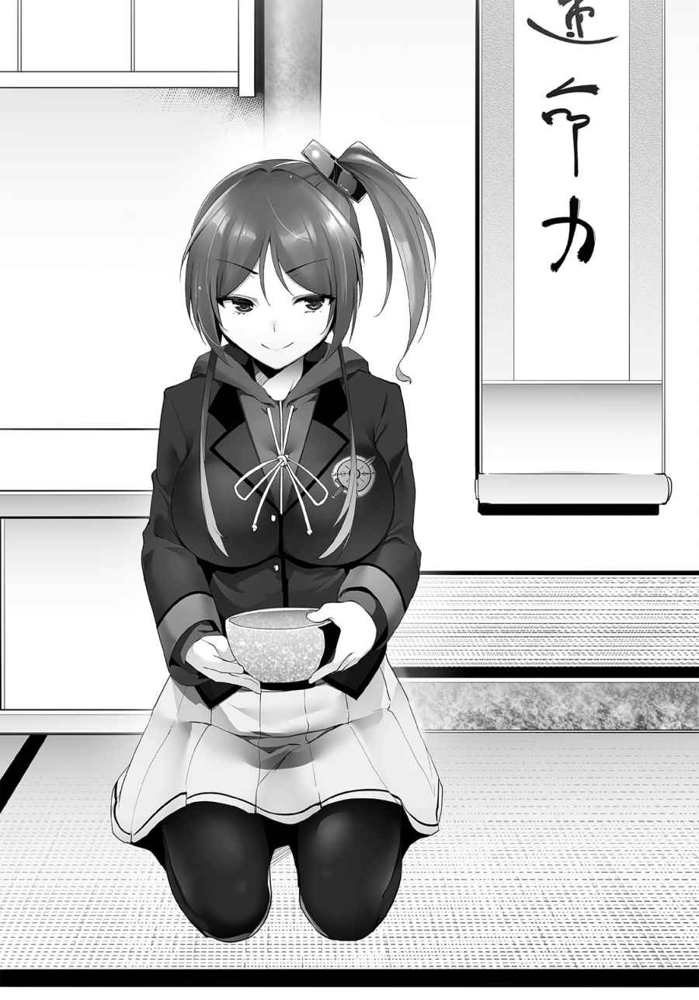
「うふふふ──お似合いのカップルですね」
田宮さんは奥床しく微笑んだ。
「付き合ってません」
シイナはすかさず抗議をするが、田宮さんは華麗に受け流して、
「では、用件を伺いましょうか？」
「はい。僕とシイナは〈副部長統合団体〉へ入団することにしました」
僕は、事の経緯を簡略化して田宮さんに説明した。
「あらあら、それは大変。どうしましょうか......」
田宮さんは悩ましげに首を傾げた。
「多くは望みません。ただ、ちょっとだけ指導者Ｂとしての立場から協力をお願いします」
「でも、他の指導者がウンというか......」
「そこら辺はなんとかなるでしょう」
「わたし、聡士くんから、団体に純さんを近づけないようにって言われているのよ。ロクなことにならないらしいから」
聡士の奴は、悪い意味で根回しがよかった。付き合いが長い分、僕の性格を知られているので厄介だ。
僕は、急ごしらえにそれっぽい説得を試みる。
「たしかに聡士の考えも一理あるでしょう。だが、いまや彼は副会長。僕のような一生徒のことをいちいち視野に入れる身分でもないはずだ。校内のことを優先的に考えるべきです。よって、校内の平和を乱すであろう〈副部長統合団体〉のことを優先しましょうよ？ きっと、田宮さんの愛する聡士の実績に繫がりますから」
「そうねぇ、純さんのいう通りかもしれないわ」
「というわけでよろしくお願いします。行こうシイナ」
「はい、純くん」
「あ、ちょっと待ってください......」
「じゃ、お願いしますね」
「失礼します」
僕とシイナはすぐさま立ち上がって、反論がくるまえに、田宮さんと別れた。
◇
続いて僕たちは、新聞部の部室に乗り込んだ。
会社のオフィスのようにブース分けされた一角で、新庄の姿を見つける。彼女はノートパソコンと睨み合って、なにやら原稿を書いているようだ。
僕は、抜き足、差し足で背後から忍び寄り、いきなり新庄の肩に両手を置いた。
「やあ、新庄」
「ひやっ──」
不意打ちを食らった新庄の肩が飛びはねる。
予想を裏切らない良い反応をしてくれる人だ。
僕は、さきほどまでの息苦しさを発散させるように、傲慢に言う。
「〈副部長統合団体〉に入団することにしたからよきに計らえ」
「え!? ちょっと、いきなりなんなんですかぁ？」
「それと、レモンティーには飽きたので、他の紅茶も常備しといてください」
どさくさに紛れて、シイナも自分の要望を伝えた。
「ちょっとちょっと、待ってくださいよ。声が大きいですって」
新庄は、切迫した面持ちで、きょろきょろと周囲を見回した。訝しむ部員に愛想笑いをすると、僕たちの背中を押して部室をでる。部室先にあるベンチに場所を変えた。
「ちはるが潜入取材してるってことは、部員のみんなにも内緒なんですよぉ」
新庄は小さな声で話した。
「スクープ狙いってやつか。いいことを聞いた」
交渉の材料になりそうだ。
「いいこと？」
眉根を寄せる新庄。
「なんでもない。それよりも、例の件は頼んだぞ？」
「入団のことですか？ 無理ですよぉ」
「いいじゃないか。他に仲間がいたほうが、潜入取材もやりやすくなるだろ？」
「そうかもしれないですけど。他の指導者が頷くはずありませんしぃ」
僕の説得に、新庄は理解しつつも難色を示す。
しかし、その点に限っては、説明できないが絶対に大丈夫なのだ。
「案外話してみれば分かってくれるかもしれないだろ。なんとかなるさ。それに、頼みを聞いてくれないなら、新聞部のみんなに潜入取材のこと暴露するから」
僕は高度な交渉術を使った。
「ちょっ!? それは勘弁を」
「ならば、よきに計らってくれ。よろしく」
「茶菓子の充実もお願いします」
僕とシイナは、それぞれ新庄の肩を叩いて立ち去った。
◇
その日の夕方に、〈副部長統合団体〉の定例会議が行われた。
根回しが済んだ僕とシイナは、その席に堂々と参列している。
「一同、お聞きください。本日をもって、このおふた方が入団することになりました」
場所は、僕が拘束されていたのと同じ建物。二〇畳ほどの部屋に、パイプ椅子が並べられ、三〇人以上がすし詰めされている。
そんな中、前に立った指導者Ａもとい、関ヶ原が新規団員を皆に紹介した。
もちろん、僕とシイナである。
僕たちは、関ヶ原が用意してくれた黒マントに身を包み、皆の前に立って自己紹介をした。
「皐月純だ。皆の衆、よしなに頼む」
「四一七です。なぜかここにいます」
やる気に燃える僕とは対照的に、シイナは不本意そうだった。自己紹介を終えると、あとの会議には参加するつもりがないらしく、すたすたとシイナ用に用意された席につき、漫画雑誌のページを捲り出す。まあ、仕方ない。
「それでは会議を始めましょう」
と、指導者Ｂもとい、田宮さんの宣言が入る。
彼女の号令のもと、第八九回〈副部長統合団体〉活動指針相談集会が始まった。八九回も会議しておいて、いまだに活動指針も決まってないようだ。
それもそのはず。
団体を率いる三人の指導者は、すべてがスパイ。
会議の経過を見守る僕は、しみじみと理解する。
「皐月純の加入により、正式に資金を得ました。いまこそ決起するときでしょう！」
ひとりの団員から声があがる。
すると、関ヶ原は、
「そうですね。前向きに検討しましょう」
と、政治家的に受け流した。
また別の団員が熱烈に言う。
「前向きに検討する？ それじゃ、間に合わないっ。いつも思ってるんだが、この団体は行動が遅すぎるんだ。せっかくの好機が目の前にあるんだぞ？ 予言に乗じて学園を支配するべく、早急に行動すべきだ！」
「分かりました。その方向で計画を立てます」
と、田宮さんが相手の意見を肯定しつつ、ひらりと受け流した。
またまた別の団員が言う。
「それとです。以前からずっと懸案事項にある団体本部の中央への移設問題です。いつになったら実行されるのでしょうか？」
「はい、そうなんですよぉ。団体本部移設問題は最優先事項なんです。指導者としても全力をあげて取り組んでいく所存です」
と、指導者Ｃもとい、新庄が申し訳なさそうに答弁した。
会議はこんな感じでだらだらと進んだ。
団員が行動を促しては、指導者が意欲を見せつつも先送りにする。
もちろん、こんな調子では団員たちも良い顔をしていない。しかし、彼らは、板挟みにあってきた副部長だけに、必要以上に我慢強かった。本来なら怒ってもいいところでも怒らない。ぐっと歯を食いしばって堪えている。見ているこっちまでだんだん歯がゆくなってきた。
会議も終盤に差し掛かってくる。
今回もなにも決まらなかったと、部屋の空気がだらけてきた。団員の熱は冷め、発言者がいなくなる。
僕はそのときを狙って挙手した。
「はいはい！ ちょっとした提案がある」
「............皐月団員」
関ヶ原がためらいがちに、僕に発言権をくれた。胡散臭そうな目で、皆の前に立つ僕を注視する。
同様に田宮さんと新庄も、「なにを言い出すのだろうか？」と不審がっていた。
「みんな、聞いてくれ！」
僕は太く声を張って、弛緩する会場の注目を集めた。
「僕はみんなの不満をよく理解しているつもりだ。キミたちは自分の部活に身を捧げて貢献したにもかかわらず、部長からも部員からもいいように使われるだけで、ストレスしか得るものがなかった。僕は同じ副部長としてみんなの苦労に胸を痛めているんだ。こんなの絶対おかしいに決まってる。キミたちはもっと報われるべき存在なんだ」
最初は困惑していた団員たちも、僕の演説が進むにつれ、真剣な眼差しになってくる。
「だから、僕はこのメンバーが学園の頂点に君臨しようとする案にとても共感した。ぜひ、その手助けができればと思ってる。埋蔵金はもちろん。会長時代に得た知識や経験だって、惜しまず提供していく。絶対みんなで天下を獲ろう」
僕は笑顔で団員たちに向かって頷きかける。
不意を打たれたような団員たちも、言葉の意味があとから追いついてくると、次第に頷き返してくれる人たちが現れた。
冷めかけていた部屋の温度が、Ｕターンして上昇していく。
僕は、発火寸前の空気に、火打ち石を打つ。
「さてさて、諸君。改めて現状を考えてみよう。今週の月曜日に、定例の予言があった。生徒会長が発砲されるようなことがあれば、きっと学園内は混乱に陥るだろう。つまり、いまが絶好のチャンスであることは、皆の知るところである──そう、いまこそ行動を起こすべきなのだ！ ちんたらしている場合じゃない！ その中でいまの指導者はなにをしているのだろうか？ ──そこのキミ。いまの指導者はなにをしている？」
僕は、とりわけ大げさに首肯していた団員に話を振った。
すると団員は、興奮気味に、
「なにもしていない！ 慎重過ぎるんだ！」
と、周囲の同意を求めながら叫んだ。
うんうんと、取り巻く団員たちも共感していく。
僕はにやりとほくそ笑み、再び口を開き、注目を取り戻す。
「そうだ、その通りだ！ いまの指導者では、いつまで経っても悲願は達成できない！」
「ちょ、ちょっと皐月団員」
「しゃらっぷ！」
思わず口を挟んできた関ヶ原を、僕は口頭で黙らせる。
いまや団員の支持は、僕の意見に傾いている。火がついた群集のようすを見せられれば、さすがの関ヶ原も反論できないようだ。
同じく、田宮さんと新庄も、膨れあがる不満を前にして、所在をなくしている。
僕はこの勢いに乗じて、さらに言葉を重ねる。
「皆の心に問いかけたい。果たしていまの指導者は、団体のことを第一に考えているのだろうか？ やっとトップに立てる場所を見つけてしまったゆえに、その地位に甘んじて安穏としているのではないだろうか？ 我々は内輪の出世競争が目的でないはずだ。重ねて言おう。我々の目的は、学園のトップに君臨すること！ その悲願が目の前にあり、いまこそ行動をおこすべきときだ。しかし、いまの指導者では、それを指揮するのは不可能であることはたしか。皆の者、異論はあるか!?」
『ないっ！』
という怒声が、部屋のあちこちで巻き上がった。
下地は整った。
「我らが悲願を達成するため。団体を機動的な組織に改造しなければならない。ここに最高指導者の設置を提案する！ 異議はあるか!?」
『ないっ！』
群集は勢いに乗って、肯定をした。
「よろしい。それではこの場で、最高指導者を決定する。他薦、自薦かまわない。だれかいないのか？」
『............』
場面が切り替わったように、部屋は一瞬で静まった。誰も手を挙げようとしないし、具体的な人物名も聞こえて来ない。皆がそわそわしながら顔を見合わせるばかりだった。
「なるほど......」
だがしかし、これは端っから予想済みである。
〈副部長統合団体〉の団員たちは、ガツガツと前にでるタイプではない。縁の下の力持ちタイプである。そうでなければ、板挟みのストレスでこんなところに入ったりはしないだろう。
よって、トップに就任することに躊躇する人間ばかりなのだ。
僕の思う壺だった。
「だれもいないようだ。よろしい。ならば、僕から推薦人をだそう」
その言葉を聞いた一同は、「えっ......」という訝しげな雰囲気を纏う。
「まさか皐月純が指導者になるのか？ それだけは嫌だぞ」という心無い言葉も聞こえて来る。僕は密かに胸を痛めつつ、しかし、それはないと断言する。
そして、僕は、部屋の隅で読書に勤しむシイナのもとへと移動し、皆の視線を誘導した。
「............」
シイナは、たくさんの視線を感じて、雑誌から顔を上げた。抗議の意味を含んだ無言の睨みをこちらに向けてくる。
そんな彼女に向かって、僕は爽やかな笑顔で親指を立てると、注目する団員に向かって言い放つ。
「僕は最高指導者に、この美少女──シイナを推薦する！」
団員もなんとなく予想はついていたようで、発表のあと、賛否が飛び交う。
「可愛いし、いいんじゃないの？」「でも、最高指導者っていったら実行力が問われるわけだし......どうよ？」「可愛いし、いいんじゃないの？」「どれだけカリスマがあるか未知数だな」「可愛いし、いいんじゃないの？」「おれは反対だ！」
一際大きく異を唱えた団員がいた。
僕は生け贄にちょうどいいと思い、その団員と対話することにした。
「ほう。元会長たる僕の推薦に異を唱えるのか？」
「元会長は関係ないだろ？」
団員は果敢に反論してくる。
「うん、言われてみればたしかに関係ない。それは置いといて、なぜシイナがダメなのか理由を聞こう」
「いまさっき、入団したばかりの人間に任せられるわけない」
団員は至極真っ当なことを言った。僕も思わず納得してしまうほどである。だけど、その一言だけでは、言葉が甘い。
「なるほど。キミのいうことも一理あるような気がしなくもない。じゃあ、キミがやるんだな？」
「え？」
「人の推薦にいちゃもんをつけるくらいだから、キミが最高指導者になるんだろ？」
「いや、それは......」
団員は、ばつが悪そうに口籠もった。
「ありがとう。キミが引き受けてくれるなら安泰だよ。団体の一番星になり、自らの輝きで皆を引っぱっていけるんだね。──そんな才覚のいる役回りを買ってでてくれたんだ。さぞかしキミはカリスマに富んだ人間なんだろうな。いやあ、すごいな！ キミはすごい奴だよ！」
僕は異を唱えた団員に詰問するようでいて──同時に、この場の人々にも訴えかけた。
「や、やっぱり、異論はありませんっ」
いまにも泣きそうに声を震わせながら、団員は前言を撤回した。
僕は、この団員を踏み台にしてトドメの演説をする。
「皆の衆、シイナに刮目せよ！ この慌ただしい状況の中、眉一つ動かさず、毅然とした佇まい。まさに最高指導者に相応しい。果たして、この中にこれほどまでの貫禄を表せる者はいようか!? いるなら、いまここに出てくるがいい!?」
もちろんシイナは、表情の変化が薄いだけで、十分に困惑している。短くない付き合いの僕は、そのことは重々承知している。けれど、他の人には分からないので、それを上手く利用させてもらった。
『............』
そして、団員は黙したまま誰も声をあげない。
やはり、思った通りだ。〈副部長統合団体〉の団員は、一様に押しに弱い。それは、なにも一般団員に限った話ではなく、三人の指導者も同様だった。
つまり、ここはいい人たちの集まりなのだ。
だから、僕たちのような傍若無人な振る舞いは決してできない。
よって、皆を引っ張れるような強引な人間は存在しないのである。
「だれもいないのだな？ 異議はないのだな？ よろしい──皆の無言を承認とし、最高指導者シイナが誕生した。さあ、我らの新たな門出を祝って拍手をせよ！ さあさあさあ、拍手だ。皆の衆、拍手だ！」
僕は大げさに手を叩き、それにつられるようにして所々から拍手が起こる。それらは次第に重なり合う。いつしか割れんばかりの拍手に部屋は満たされた。
押しが弱いから、言い切ってしまえばなんとかなった。
指導者Ａ、Ｂ、Ｃが啞然とする中、こうして最高指導者が生まれたのであった。
「皆の衆、シイナさまを崇め奉れ！ これより〈副部長統合団体〉の進撃が始まる！」
◇
沸き上がる会場は、一時的にお祭り状態となった。
団員たちは、最高指導者を讃える踊りを即興で考案し、披露しはじめている。ノリが〈運命に従う会〉っぽくなってきた。まあ、いいけど。
役割を終えた僕は、邪魔にならないように、祭りあげられているシイナから離れた。
すると、そのタイミングを見計らって、鬼の形相の関ヶ原が肉薄してくる。
「どういうつもりなのですか!?」
関ヶ原は、僕の首根っこを捕まえて、無理やり部屋の外へ連れ出した。女の子とは思えない凄まじい怪力である。
「痛い痛いっ、放してください」
「説明しなさい」
「説明するから放してください」
関ヶ原は放り投げるように、僕を解放した。
「......さあ、詳しい説明を早く」
「あ、ありがとう──そしてこれは忠告だ。指導者ＢとＣが関ヶ原さんのことを疑っている。気をつけて欲しい」
僕は首根っこを擦りながら、さも深刻そうに告げた。もちろん噓だ。
「えっ、それは一体......？」
予期していなかった答えに、関ヶ原の身が硬直する。
「実はね、この会議が始まる少しまえ、指導者ＢとＣの立ち話を偶然聞いちゃったんだよ──指導者Ａの行動が怪しい。もしかするとスパイかもしれないって」
「まさかそんなはずは......」
「でも事実だよ。僕はこの耳でしかと聞き遂げたんだ」
「......迂闊でした」
根が真面目な関ヶ原は、目に見えて落ち込む。ショックが隠せないらしい。普段から周囲に厳しい分、それ以上に自分にはもっと厳しいのだろう。難儀な性分である。
僕は弱った関ヶ原の肩を優しく抱いて、
「大丈夫だよ。まだ疑われてるだけだから。僕がついてる。安心してよ」
と耳元で囁き、慰める。
「敵中にひとり。頼れる協力者は、頼りない男だけ。最悪です......」
「しれっと心に突き刺さること言わないで欲しいなぁ。これでも僕は、関ヶ原さんのために一計を案じたんだよ？ 指導者ＢとＣの発言力を削ぐために、最高指導者を作ったじゃないか。これで〈副部長統合団体〉は思いのままだよ」
「その考えは早計です。指導者と言えども、王様とは違うのです。団員の意見を尊重してこその指導者であることを忘れないでください」
「分かった参考にしよう」
関ヶ原は肩を落としたまま会場へと戻っていった。
僕もシイナのところへ戻ろうとしたとき、入れ替わりに田宮さんがやって来た。どうやら、僕と関ヶ原が離れるタイミングをずっと待っていたようだ。
「純さん。これはどういうことでしょうか？」
表面上は穏やかに見えるが、口からでた言葉には、詰問するような色がついていた。
僕は若干気圧されつつも、田宮さん専用に用意していた言い訳を告げる。
「まあ、落ち着いて欲しい。これには大変深い訳があるんだ。実を言うとね。指導者ＡとＣが田宮さんのことを疑ってるんだよ」
「あらまあ......」
田宮さんは口に手を当てて驚く。僕の言葉を信じているようだ。
「いまさっきも指導者Ａに問い詰められて、誤魔化すのに苦労したよ」
「あら、どうしたものでしょう......」
「でも田宮さん。安心していいよ。僕と聡士は親友だから、聡士の恋人の田宮さんを絶対に守ってみせる。最高指導者を作ったのもその一環だから、なにも心配しなくていいです。指導者ＡとＣの発言力を見事に削ぎ落としたでしょ？」
「そういう意図があったのですね。わたし、てっきり団体を乗っ取るのかと肝を冷やしました」
「まさか僕がそんなことするわけないですって」
「聡士くんから注意するように言われてたから......疑ってごめんなさいね」
「いえいえ、僕は大きな男ですから細かいことは気にしません」
僕は落ち込む田宮さんを励ました。そして、念を押す。
「いいですか？ しばらく目立つ行動は控えてください。その分、こっちで対処しますから」
「分かりました。純さんって見た目に反して頼りになるのですね」
「......ありがとう」
田宮さんはお辞儀をして会場に戻っていった。
それと入れ違いに、やっぱり新庄がやって来る。
「ちょっとちょっと。意味が分かりませんよぉ。なにをやっちゃってくれてるんですかっ。ちはるがどれだけ苦労して指導者に登り詰めたか分かってないでしょ!?」
「分からん」
「酷いですぅ......」
ぐすんと、鼻を啜る新庄。
「まあ落ち着いて話をきけ。これには深い理由がある。指導者の、ええっと、あれだ......ＢとＣじゃなくてＡ。──指導者ＡとＢが新庄のことを疑っているんだよ」
三回目になると言い訳もこんがらがってくる。
「えー、本当ですかぁ？」
「本当だとも。ほら、さっきまでＡとＢが順番に来てただろ？」
「はい。ひそひそとなにを話してたんですかぁ？」
「キミがスパイである可能性が高いって密談をしてたんだ。ＡとＢは、そのうちキミをとっちめる腹づもりだぞ？」
「ええっマジですかぁ！」
先鋒のふたりをダシに使ったら、新庄はころりと騙された。
「マジ、マジ。もしもスパイってバレたらエロいんだろ？」
「意味が分かりませんけど......バレたらそれはもうタイヘン酷い目に遭いますよぉ。マジでヤバイです。なんとかしないと......」
「まあ、その点については僕に任せろ。僕の行動はすべて新庄に協力するためにやってるといっても過言じゃない。キミは大船に乗ったつもりで大人しく構えてればいいよ。さあ、話は済んだ。行った行った」
僕はしっしっと手を振って新庄を追っ払った。
「ふぅ......けっこう疲れるなぁ......」
ひとりになってひと息つく。同じ理由であっても、三人を同時に騙すのはけっこう骨が折れた。この調子では近いうちにボロを出しかねない。
「バレるまえに行動を起こさないと」
僕は計画実行の日を静かに模索した。
◇
翌、早朝。六月一一日、日曜日。
湖畔の小屋に集まった僕、シイナ、五十嵐センパイ、苺は、それぞれの活動報告をする。
まずは僕から、五十嵐センパイと苺に、昨日の出来事を説明した。
「──てなわけで、シイナを〈副部長統合団体〉の最高指導者にしてきた」
「どうも、最高指導者のシイナです。純くんを殴ってやりたいです」
シイナは半眼でふて腐れ気味に言った。
「いいじゃないかシイナ。キミは組織のトップに立ったんだよ？ もっと喜ぶべきだ。三人の指導者の動きを封じたいま、もはや、団体はキミの思い通りだよ」
「なんであのとき純くんと五十嵐さんを助けたんでしょうね。後悔って言葉の意味が芯に染みてます」
「まあまあ、落ち着いてくださいシイナさん。あなたの献身はきっと報われますわ」
珍しく五十嵐センパイもフォローに参加してくれた。状況が好転しつつあり、気分が良さそうだ。
しかし、シイナの機嫌がそんな言葉のひとつやふたつで治るわけもない。表情の起伏は少ないが、彼女にしてみれば文字通りのふくれっ面だった。
いまはそっとしておこう。
「とりあえず、ふたりの状況も聞きたいんだけど？」
今度は五十嵐センパイと苺に報告を求める。
「いいですわ」
と、五十嵐センパイが会話のバトンを引き継ぐ。
「あなたの言うとおり、逃亡中の身であるわたくしは、あの手この手を使って、近衛騎士団の団長に協力を求めるメッセージを発信しましたの」
見れば、五十嵐センパイの谷に跨がるゼッケンには、『友人の頼みです。協力してください！』というメッセージが記載されていた。嵐の夜、僕に寄こした『たすけて！』と同じ方法を使ったのだろう。けれど、これって遠くから見えるのか？
「で、子細は？」
「団長からメッセージを頂きました」
五十嵐センパイはメモ帳で折られた紙飛行機をこちらに渡した。
受け取った僕は、紙飛行機を解体して、一枚の紙きれに戻す。そこには、
「なになに──『立場上、具体的な協力はできない。我々は、命令を疑いなく実行するだけである。近衛騎士団・団長』──うむ、十分な回答だ」
僕の立てた作戦を十二分に理解してくれているようだ。
さすがビッグ３の一翼を担う治安維持部の団長である。
「じゃあ、次に苺ちゃんはどうかな？」
話を振られた苺は、にこにこと微笑みながら、
「はい。皐月さまの指示通り、不遇の部活に融資をいたしました。彼らは融資主である〈運命に従う会〉の意向に添って動いてくださいます」
自信をもった口調で受け応えをしてくれた。
苺に関しては一抹以上の不安を感じていたが、このようすではしっかりと自分の仕事を達成できたようである。
僕は胸の中でほっと吐息をつくことができた。
「よろしい。順調そうでなによりだ。これからも融資先を増やしていくようにお願いね？」
「はい。かしこまりました皐月さま」
礼儀正しく頭を下げる苺。
物事の流れは、僕の考えたとおりに動き出した。
この感覚は、先々月のグランド大戦前夜のそれと近い。
成功への不安と期待が万遍なく入り交じりながらも、勝利の確信が湧き上がってくる。
「運命は再び僕に味方しようとしているのかもしれない」
「気のせいですよ」
「シイナっ、せっかく人が調子に乗ろうとしてるときに水をささないでよ」
「チョーシにのってるとどうせ失敗するんですから、チョーシにのらない方がいいと思います」
シイナの物言いは、いつにも増して辛辣だった。
◇
その後、小屋をあとにして〈副部長統合団体〉本部に移動した僕とシイナ。
急設された最高指導者さまルームで優雅な読書タイムに勤しみ、威厳を放っているシイナを残して、僕は大広間に女子団員を集めた。その中には指導者の関ヶ原、田宮さん、新庄もいる。
僕は言った。
「皆の衆、よく聞くがいい。これより女子団員のマントの下は、スク水一択とする」
困惑とブーイングが部屋に流れた。
「意味が分かりません」
皆の気持ちを代弁するように関ヶ原が声をあげる。
「意味など考える必要はない。これは最高指導者さまの命である」
「本当に最高指導者さまがそんな変質的な命を出したのですか？ どう考えても皐月純くんの趣味に思えてなりません」
黙っていればいいのに、関ヶ原は執拗な正義感にかられて食いついてくる。
それならばと、僕は急ごしらえで理由をでっちあげる。
「実をいうと、女性団員の中にスパイが混じっているとの情報を得たのだ」
「!?」
部屋の空気が一瞬で張り詰めたのが分かった。とくに関ヶ原と田宮さんと新庄の驚愕は他とは一線を画している。こいつはなにを言い出すんだ、という顔をしていた。
「まあまあ落ち着くんだ。スク水はスパイを炙り出すための一環だと考えて欲しい。スパイは最高指導者さまに忠誠なんてこれっぽっちもないでしょ？ だから、敢えて無茶な命を出すことによって皆の忠誠度を測ろうとしているのだ。つまり、スク水の着用を拒否した人間こそがスパイだということ。さあ、皆の衆。すぐに自分の部屋からスク水をとってくるんだ」
そうまで言われては従わざるを得ない──という雰囲気にはならなかったが、気弱そうな団員が水着をとりに部屋から出て行くと、それに引っぱられるように残りの団員たちも動きだした。協調を大事にすることは素晴らしいと思った。
しかし、皆が去った部屋の中。強いまなじりで僕を睨み付ける女子がひとり。
関ヶ原である。
「......どういうことでしょうか？」
静かなる言葉の中に、静かなる怒り。
ヘタなことを言えば、即座に叩きのめされそうだった。
僕はタダならぬ緊張感を持ち、冷や汗を流しながら言葉を選ぶ。
「関ヶ原さんに向けられてる疑いの目をなんとかしようと思って」
「噓をつきなさい。これは皐月純くんの趣味でしょう？」
「まさか！ 僕は純粋に、関ヶ原さんのためを思ったんだ。決して僕の趣味ってだけじゃない」
「やっぱり趣味なのですね」
おっと、ちょっとだけボロが出てしまった。
「おいおい待ってくれ。僕が趣味ってだけで女子にスク水を着せるヘンタイに見えるのか？」
「見えます」
「やっぱり見えるかぁ......」
即答され、僕は渋い顔をする。
自分の趣味を世間に披露しすぎた。いまさら悔やんでも仕方がないけど。
「まさか団体の私物化を考えていませんよね？」
関ヶ原が鋭く核心を突く。
「そ、そんなおそれ多いこと僕が考えてるわけないよ。それにしてもさ。どうしてそんなに関ヶ原さんはスク水を嫌うの？」
僕は話をべつの方向へもっていく。
「べつに嫌ってなどいません」
「もしかして、スタイルに自信がないとか？」
「そんなことありませんっ。自分は常日頃から鍛練を欠かしませんので」
「なるほど、余分な脂肪が少なくて悩んでいるのか。大丈夫だって。指導者Ｃだって小っちゃい方だし、指導者Ｂなんか完全にぺったんこなんだよ。気にすることないよ」
「セクハラはやめてくださいっ」
関ヶ原は、僕の片腕をとってねじ上げた。
「痛い痛いっ、暴力反対！ 自分に自信がないからって僕に当たらないでよ！」
「......もういいです。自分は、自分のスタイルに一片たりとも劣等感を抱いていません。いいでしょう。自分はスク水を着ます。覚えていてくださいっ」
ふくれっ面で、そう言い残した関ヶ原は、足早に部屋をあとにする。
なんやかんや言いつつもスク水を着る決心がついたようだ。気が付かない内に、関ヶ原の中で論点がすり替わっていたのだろう。
僕は彼女のプライドに助けられて事無きを得た。
スク水パラダイスは目の前である。
「ふははははっ──。僕の桃源郷が、再び目の前に！」
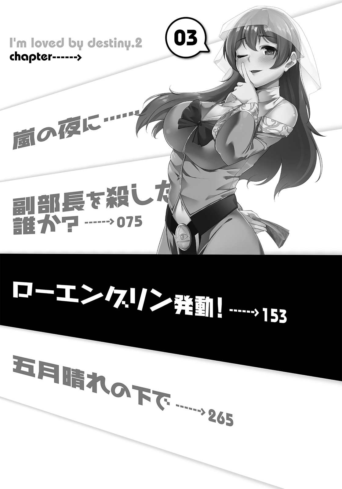
六月一二日。月曜日。
白滝学園恒例の転校生を迎える全校集会が行われる。
いつもならば僕たちも参加するのだが、いまはあいにく、斬り捨てた生徒会執行部の報告によって僕はお尋ね者。シイナは僕と一緒にいることが多いので、要観察対象となってしまった。
よって、五十嵐センパイを含めた三人は湖畔の小屋に身を潜めている。集会に参加した苺の到着を待っていた。
午前九時を回ったとき、小屋のドアがノックされる。
「皆さん、お待たせしました」
うやうやしく会釈して、苺が小屋に入った。
「苺ちゃん。今日の予言はどうだった？」
問いかけを受け、苺は自信を含んだ笑みを浮かべる。
「はい。本日の予言はこのようなモノでした──『本日、上半身裸の女子が学内を駆け抜けるでしょう』──すでに一部の男子が、血眼になっているもようです」
それを聞いた僕は膝を打って立ち上がった。
「ただちに人を集めよ。運命は再び、僕を愛してくれた！」
◇
「ときは満ちましたー。くなんの日々に別れを告げる好機がおとずれたのです」
シイナがすごく棒読みで、僕の用意した台詞を、〈副部長統合団体〉の皆の前で述べる。
緊急招集された団員たちは、初め迷惑そうだった。しかし、事の次第を理解するにつれて熱を帯びていく。
「本日の予言によって、校内は更なる混乱に陥るでしょう。この瞬間を逃す手はありまーせん。皐月純の埋蔵金を使って、すでに戦闘部隊は用意してあります。これより我々はその部隊を率いて決起するのです。だれか、このことに異を唱える者はいますかー？」
団員たちは揃えて首を横に振った。
団体のトップが交代したり、ユニフォームがスク水になったりしたが、彼らの目的は初めからただひとつ。板挟みの生活に別れを告げ、自分たちが学園に君臨することだ。
その悲願の成就が間近に迫っているのだから文句を言うものは誰もいない。
そして、三人の指導者たちも、別の意味で納得していた。
「......」
「......」
「......」
関ヶ原、田宮さん、新庄とも、決意の籠もった眼で成り行きを見守っている。
事前に説明したことを納得して受け入れているようだ。
僕が関わる以前から、〈副部長統合団体〉は、指導者たちの手には余りつつあったらしい。僕の誘拐も、団員の行動を押さえきれなかったことが原因とのことだ。
団員はいま現在も副部長である以上、ストレスは日々溜まっていく。彼らの怒りは臨界点に達しつつあった。
すでに指導者がのらりくらりとかわすだけでは押さえきれない。
多少危険を冒してでも、団体を解散させたいのが、学園運営に関わる者達の意思だった。
団体の決起は、田宮さんを通じて聡士に報告されている。聡士は執行部の鎮圧部隊を待機させていることだろう。校内暴動を理由として、団体の構成員を一斉に捕縛する算段だ。
新庄はこの騒動をルポにまとめて、来年の部長の座を狙っている。
それぞれの思惑が交差する中で、無垢な団員たちは、ただただ悲願のために燃え上がっていた。そのためシイナの平坦な台詞であっても、彼らの心には強く響く。
「最高指導者の名をもって訴えます。いざ出陣です。者共、武器を手に参りましょう」
シイナが「えい、えい」と掛け声を述べると、
『おおおおおおおおおおぅ！』
団員たちは拳を掲げて気合いを入れた。その勢いは天井を貫かんばかりだった。
すぐに戦支度が始まる。
「よし、次だ」
◇
〈副部長統合団体〉を纏め終わると、シイナを残して湖畔の小屋に戻った。本当に忙しい。
小屋の周囲には五十嵐センパイと苺はもちろん、〈運命に従う会〉の部費を使って集めた部活らが集合している。その数は一〇〇人を超えているだろう。すでに各々武器を手にしており、臨戦態勢は整っているようだ。
僕は心強さを感じながら、面子を確認していると、ふと見知った顔を発見する。
「おお、久しぶりだな。ソフトボール部長」
「これは皐月会長。お久しぶりです」
僕が会長だった頃。その政権で役員を務めてくれた男との再会だった。彼こそ最後まで僕について戦ってくれた腹心ともいえる人間だ。
「よしてくれ、ソフトボール部長。僕はいまや一生徒に過ぎないんだよ」
「であっても、俺の中ではいまもあなたが会長です」
「おお、心の友よ！」
僕とソフトボール部長は互いを労い、堅い握手を交わした。
これ以上ない味方を得た僕は、五十嵐センパイと苺のもとへ向かった。ふたりは地図を広げて、作戦の最終確認をしている。
「首尾はどうだ？」
「はい、皐月さま。生徒会は本日の予言による混乱を防ぐため、執行部員を校内のあちこちに拡散して配置したようです」
僕が訊くと、苺がにっこりと説明してくれた。
「うむ。素晴らしい。これに重ねて、すぐに〈副部長統合団体〉の暴動が起こる。生徒会は制圧のために執行部員を派遣するだろう。そうなれば生徒会庁舎はもぬけの空だ。朝倉を護衛する人員はほとんどいないはず」
「うふふふ──追い風が吹いていますわ」
状況の好転に、五十嵐センパイは機嫌良く微笑んだ。自らが先頭に立って戦うつもり満々の彼女は、スク水の上にホルスターを装着し、拳銃とディスティニーセイバーを差している。すごくマニアックな格好だ。スク水愛好家には堪らない。
「この作戦が成功すれば、実質的に生徒会は僕たちのモノになる。また昔のような優雅な日々が待っていることだろう」
「ああ、思いだしただけでも涎が出てきそうですわ──再びわたくしがトップに返り咲く日が来ようとは夢にも思いませんでしたの」
「おい......ちょっと待て」
幸せそうな五十嵐センパイが漏らした一言に僕は反応する。それは聞き捨てならない台詞だった。
「あら、皐月さん。どうかなさいまして？」
「五十嵐センパイ。さっき、なんて言ったのかな？」
「わたくしがトップに返り咲くと言いました。それがなにか？」
しれっと答える五十嵐センパイ。
僕はむかっとする。
「おいおいおい。人のアイディアと財力を使っておいて、それはないだろ？ トップに立つのはだれでもない、この僕だ」
「あらあら、なにをおっしゃるかと思えば笑ってしまいますわ」
「なんだと!?」
「このわたくしをおいて、トップに相応しい人物がいるとでも思いまして？」
「ここにいるだろう。皐月純という大物が！」
僕は自分の胸を力強く叩いた。
対抗するように五十嵐センパイも、自分の胸をぷるんぷるんと叩く。
「わたくしの方があなたよりも断然大物ですの。そんなことも分からなくて？」
「分かるわけないだろ。事実じゃないんだからさ。スク水着てるからって調子に乗るなよ？」
「あら、あなたこそ調子に乗ってますわ。いいこと。わたくしが会長であなたが副会長ですのよ？ はい復唱してください」
「できるわけないだろ。ふざけるなよ。僕が会長であんたが副会長だ」
「......おふたりとも言い争っている場合ではございません」
見かねたようすの苺がおずおずと止めに入ってきた。
しかし、ヒートアップした僕と五十嵐センパイの勢いは止まらない。むしろ苺を巻き込み、
「ちょっと大郷さんっ。わたくしとこの男のどちらが会長に相応しいと思いまして？」
「そうだよ、苺ちゃんに聞けば一目瞭然じゃないか。まあ、聞くまでもないけど、どっちが会長に相応しいか正直に答えてね？」
「......あ、あのう？」
「さあ、どっちですの？」
「さあ、どっちなの？」
ふたりは困惑する苺にじりじりと詰め寄った。
圧力を加えてアンサーを求める。
「そうですね──」
苺はしばらくぽかんと考え込み、
「──わたしにたくさんの部費をくださる方が会長に相応しいと思います」
と曇りない笑顔で答えた。
「......」
「......」
言葉を失う僕と五十嵐センパイ。
大郷苺──この女、おっぱい以上に化け物だ。自分の欲望に忠実な人間ほど恐いものはないと思った。
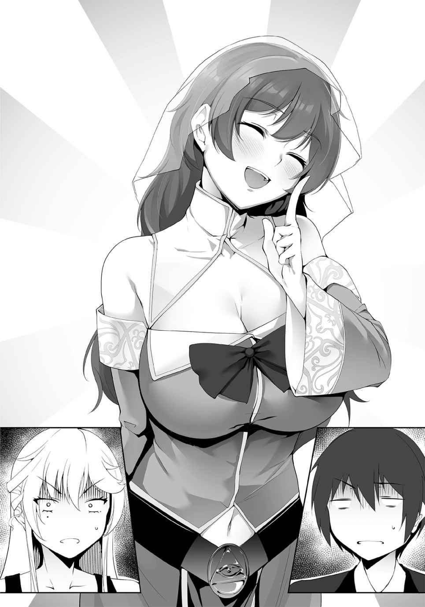
場の空気がいっきにクールダウンしたとき、頃合いよく、息を切らした伝令がやってくる。
「報告します。北上聡士氏、執行部員を率いて南下。〈副部長統合団体〉の鎮圧に向かった模様です」
「ついに始まったか。もう言い争ってる場合じゃないな」
「そうですわね。ここは一旦保留にしておきましょう」
ていよく逃げの文句を見つけた僕と五十嵐センパイは、この話を先送りにした。
まずは打倒、朝倉政権。細かいことはそれから考えればいい。
「聞け、各々方。これより生徒会庁舎を襲撃する。目標は朝倉朝顔と生徒会役員。各々方の活躍を期待する。いざ出陣！」
◇
今日の学園はこれまでに類を見ないほど混乱している。
ひとつ目は、先週の予言。五十嵐センパイが朝倉に発砲することを防ぐため、生徒会はいまも五十嵐センパイの捜索に力を入れている。
ふたつ目は、今日の予言。これも学園を治める立場上、人員を割いて警戒にあたらなければならない。
そして、三つ目は〈副部長統合団体〉の決起。シイナ率いる〈副部長統合団体〉は予定通り、学園南部の地域で、聡士ら執行部員を引き付けてくれている。
これら三つの陽動によって、生徒会の人員は元より、協力を求められた治安維持部の部員もほとんど出尽くしている。朝倉のいる生徒会庁舎には数えるほどの人しかいないはずだ。
その隙を見計らって僕たち本隊は、学園の中心にある生徒会庁舎へ向かった。
「なんだおまえたちは？」
庁舎の玄関口。警備役の執行部員は、突然群がってきた黒マントの集団に目を見張る。
「あら、わたくしの正体が知りたくて？」
フードを目深に被った五十嵐センパイは、先んじて執行部員の前に立ちはだかった。
そして、黒マントをヘンタイ的に広げ、自らの姿をあけっぴろげにする。
「う、うわぁ──」
絶景をまえにした執行部員は、あまりの眩しさに目を細めた。
僕はその瞬間を狙って、部隊に指示を飛ばし、数の力で執行部員を拘束する。
庁舎への出入り口は制圧できた。
「半分は残って一階の出入り口を固めろ。残りは僕と一緒に、朝倉の確保に向かう」
ここからは人目を気にする必要はない。
僕たちは黒マントを脱ぎ、動きやすい格好になった。
室内の戦闘が想定されるので、取り回しやすいディスティニーセイバーを手にして建物を上っていく。各階ごとに部隊を振り分け、残った執行部員を次々と拘束。ついに最上階の──懐かしき生徒会室に到達した。
部屋の大きさの関係上、大人数で乗り込むことはできない。
僕と五十嵐センパイは、後ろに三人を引き連れて、生徒会室へ入った。
「なんの騒ぎですか!? って、あなたたちは......」
部屋には会長の朝倉を含め、書記と執行部員ふたりの計四名がいた。
朝倉を筆頭に、突然の侵入者に驚きを隠せないでいる。
「ふふふふ──久しいな朝倉」
「うふふふ──お久しぶりですわ朝倉さん」
僕と五十嵐センパイは、不敵な笑みを浮かべ、歩を進める。
かつて僕は、朝倉に会長職を奪われた。
かつて五十嵐センパイは、朝倉に約束を反故にされた。そして、先週の予言からずっとお尋ね者にされている。
朝倉に対するふたりの恨みは、十分すぎるほどに育っていた。この恨み晴らさずに一学期は終われない。
「立て続けに起きた予言の混乱といい、反生徒会勢力の決起といい......すべて皐月さんの企てだったんですね」
「それは少し違うぞ朝倉。僕がどれだけ有能でも、予言まではどうにもできないさ。まあ──偶然が味方してくれたことは、僕が運命に愛されている証拠とでも言っておこうか」
「......それで、ここまで乗り込んでなにをするつもりです？」
朝倉は額から冷や汗を流した。相当緊張しているようだ。
僕は嫌らしい笑みを濃くして宣告する。
「貴様を逮捕する」
「......逮捕？ オレになんの罪があるって言うんですか？」
「大いにあるだろう。貴様は罪もない五十嵐センパイを、なんの理由もなく拘束して自由を奪おうとした」
「そうですわっ」
隣の五十嵐センパイは深く首肯した。
「生徒を守るのが会長の役目だ。しかし、貴様はそれを怠った。自分可愛さのあまり、一般生徒の自由を制限した。食事のときに身分確認されるのが煩わしくて仕方なかったぞ。もはやこれは強権政治だっ」
「そうですわっ」
「あなた方だけには言われたくない！」
朝倉は机を叩いてにわかに立ち上がる。怒りに震えているようだ。
「皐月さん、五十嵐さん。あなた方が会長だった時代に、なにをやったか忘れた訳じゃないでしょ!?」
「もちろん覚えているとも」
「ええ、覚えていますわ」
僕と五十嵐センパイは涼しい顔で、自分の罪を認めた。
当時の五十嵐センパイは、僕を含めた罪のない人々を投獄した。
当時の僕は、朝倉を含めた罪のない人々を投獄した。
「しかし、あれは仕方ないことだった......」
「仕方ないことでしたわ......」
「だから、オレだって仕方なくやってるんです！ 会長経験者ならわかるでしょっ。オレが撃たれて悶絶したら校内が荒れるかもしれないんです。会長としてそんなことは見過ごせないでしょ!?」
「貴様の都合など知ったこっちゃない！」
「ええっ!?」
信じられないモノを見たかのように、朝倉は目を見開いた。
やはり、こいつは甘い奴だ。僕たちに正論が通じるなんて考える時点でどうかしている。
「いいか朝倉よ。たしかに予言はいままで外れたことがない。かといってそれを理由に、生徒の自由を奪っていい理由にはならない。予言に振り回される自分が滑稽だと思わないのか？」
「だから、それをあなたに言われたくないですって」
「経験者たる僕だからこそ言えるのだ。いいかよく聞けっ」
よく聞けと言っても、大抵の人間は聞いてくれないものだ。
しかし、根は真面目な朝倉は、息を吞んで次の言葉を待っていた。
よろしい。僕は咳払いして、偉そうに語る。
「先々月──五十嵐センパイは予言に振り回された結果、強権を発動してしまった。だから五十嵐センパイの政権は倒れた。さらに先月──僕は予言に振り回された結果、強権を発動してしまった。だから僕の政権は倒れた。そして今月──貴様は予言に振り回された結果、強権を発動してしまった。貴様の政権も倒れてしまえ！」
「教訓かと思って聞いていれば、ただの呪詛じゃないですかっ」
「そうだよ。僕と五十嵐センパイが失敗して、貴様だけ失敗しないなんてずるいだろ。とっとと退任しろ」
「理由があまりにも酷すぎる。大義がない」
「うるさい。この期に及んで正義ぶるな。貴様、池の上で言ったよな？ 予言によって会長が入れ替わることがあっても素直に受け入れるって。あれは噓か？ 本当なら、いますぐ五十嵐センパイに撃たれろ」
「噓じゃありません。ただし、学園が荒れないなら、という条件付きです。今回の予言に従ったら学園が混乱するかもしれません」
「はは～ん。一端の政治家みたいなことを言うか。貴様も権力に染まってきたな！」
本人は否定するだろうが、この言い訳こそ権力病の第一歩なのだ。先月、僕がどれだけ周囲に屁理屈をこねながら政権を維持しようとしてきたと思っている。僕の経験を舐めるなよ。
「とにかくオレは会長を退任するつもりはありません。責任をもって任期まで働くつもりです」
「ふんっ、なにが責任だ。笑わせるな」
「笑いたければすきにしてください。でも、オレの気持ちは変わりません。皐月さん、ここは引いてください」
「そう言って僕が引き下がるとでも思ってるのか？」
「では仕方ありません──」
朝倉は腰に吊していたディスティニーセイバーを手に取った。
「──ここはオレと皐月さんの一対一で決着をつけましょう」
スイッチを入れ、光る刀身を出現させる。
臨戦態勢満々だった。
けれど、
「バカか貴様は？」
「なんですって？」
朝倉の疑問に答えるように、僕は自分の背後を顎でしゃくった。
すぐ後ろには連れてきた三人の部下がいるし、部屋の前には二〇人以上が待機している。一声かければ、瞬く間に乗り込める状態だ。
「こんなに有利な状況なのに、僕が正々堂々と戦うわけないだろ？」
「あいかわらず性格が腐っていますね......」
朝倉は親の敵のように僕を睨んだ。
「なんとでも言うがいい。さあ、朝倉を拘束するんだ」
僕は後ろの三人に指示を飛ばした。
だが、
「戦わずして負けられませんっ」
いらないところで体育会系のノリを発揮した朝倉は、机の板に足をかけて飛び越えると、僕に向かって一直線に突っ込んできた。
「うおっ──」
咄嗟のことで慌ててしまい、ディスティニーセイバーの抜剣に手間取る。
斬られたと思った直後。横合いから別の刃が飛びだし、朝倉の斬撃を受け止めた。五十嵐センパイである。
「ここは敵地ですわ。しゃきっとしなさいっ」
「ご、ごめん」
叱咤された僕は、改めて気を引き締め、ディスティニーセイバーを抜剣した。
朝倉ひとり相手に、ふたり掛かりで挑む。
僕と五十嵐センパイはまったく連携のとれない身動きで、お互いの邪魔になりながら、続けざまに朝倉を斬りつけた。二対一は一見有利そうに見えても、狭い空間の戦いではそうでもないことが分かった。
朝倉は防戦一方も、ふたつの刃を難なく捌ききった。
──あ、こいつ、ちゃっかり練習してやがる。先月戦ったときよりも剣捌きが鋭い。
そして、僕たちの斬り結びを皮切りに、あちこちでブウンというディスティニーセイバーの抜剣音が上がる。残った生徒会役員も抵抗を見せ、こちら側も対抗して武器を取ったようだ。
「全員突入！ とにかく数で押せ！」
僕は部屋の外に向かって叫んだ。
すぐに、どかどかと部隊が流れ込んでくる。
生徒会室の人口密度がタイヘンなことになった。
乱戦、混戦を通り越して、ただの押しくらまんじゅう状態になる。
「うわっ、危ない、危ない！」
朝倉と鍔迫り合いをしていたら、背中を人の波に押され、三人は壁際まで追い込まれる。まるで満員電車のような有様だった。
しかし、こんな状況でも朝倉は闘争心を失わない。
「まだまだ勝負はこれからです！」
「ええいっ、ただでさえ暑苦しいのに面倒臭い奴だな............あ、そうだ」
ここでふと名案を思いつく。これは五十嵐センパイでなくてはできないことだ。
僕は狭くて肩を寄せ合う五十嵐センパイの耳元に顔を近づけ、
「五十嵐センパイ」
「ああっ......耳元がくすぐったいですわ」
「変な声あげるな。それよりも作戦がある。朝倉を簡単に倒す方法だ────」
僕は段取りを五十嵐センパイに話した。
「分かりましたわ」
こういうことに関しては最速で物分かりがよかった。
五十嵐センパイは程良いタイミングを見計らって叫ぶ。
「きゃああああああ、痴漢ですわっ。朝倉さんがどさくさに紛れて、わたくしの胸を揉みしだきましたの！ ああ、妊娠したらどうしましょう......もうお嫁にいけませんわ！」
「え......ええっ？ ご、誤解ですって！」
予想通り、清純な朝倉は動揺した。もはや戦いどころではなく、ディスティニーセイバーを落として、五十嵐センパイから遠ざかろうとする。
これぞ偽痴漢大作戦だ。よい子の女子はマネをしてはいけない。
「ありえません......まだ誰にも揉ませたことがなかったのに......こんな大衆の面前でわたくしの乳房をいじくるなんてっ。あなたは会長の皮を被った淫魔ですの！」
噓泣きまでやる五十嵐センパイの演技は渾身のできだった。
女の子の涙を見せられては、皆の同情を集めてしかるべきだ。
「違うんです、オレはやってませんっ。本当です。皆さん信じてください！」
真っ青な朝倉は必死で懇願する。だがその言い分は、被害者同情の大海原に虚しく消えていった。むしろ、言い訳をするなどみっともないと、大衆の怒りに油を注ぐことになった。
「真面目な顔して──おまえも皐月純と同じだったのか！」
だれかが忌々しそうに叫んだ。
どうしてそこで僕を引き合いにだす必要があるのだろうか？
僕が傷ついている間に、キレた男性陣は、腰砕け気味の朝倉を問答無用に押さえつけた。
床に組み伏せられた朝倉は、人生が終わったような顔をしていた。
まあ、ちょっと可愛そうな気もするけど致し方ない。僕たちの平和のため、彼には犠牲になってもらう。
「皆の衆、よくやった。捕らえた生徒会の者共を物置に閉じ込めておけ」
ここから作戦の本題が始まる。
◇
一一時〇〇分。
学内全土の放送用のスピーカーから、一斉にけたたましいベルが鳴り響いた。
災害のときとは若干ことなる、非常事態を告げる警報だ。
警報の後、続けて校内放送がなされる。
『こちらは生徒会庁舎です。非常事態宣言です。生徒会長・朝倉朝顔が、反逆者によって斬りつけられ絶望しました。クーデターの首謀者は生徒会副会長・北上聡士です。これよりローエングリン作戦が発動されます。作戦参加者の治安維持部はただちに出動してください。作戦の命令権は、わたし──生徒会書記・御船千鶴の推薦により、前生徒会長の皐月純に委譲されます。一般生徒の皆さんはどうか落ち着いてその場で待機してください。繰り返します──』
生徒会庁舎の放送室。
役割を終えた生徒会書記の女子生徒が、重たい表情でマイクから離れた。
「皐月さん......これでよかったんですよね？」
「もちろんだとも。キミはよくやってくれた。政権が移譲されてもキミの地位は保証するよ」
「......ありがとうございます」
書記は深々と僕に頭を下げ、足早に放送室から出て行った。
どれだけ近しい人間で周囲を纏めても、その中でひとりくらいは裏切る人間はでてくる。僕が会長のときなんか、ほとんどの人間に裏切られた。それに比べたら、悔しいけど朝倉の生徒会は団結しているほうだ。
朝倉と一緒に捕らえた役員を、ひとり仲間に引き入れてローエングリン作戦を発動させた。
もうしばらくすれば、ビッグ３と中堅５からなる治安維持連合が、庁舎前に集結するだろう。
僕は緊張を隠すことができず、そわそわしながら生徒会室に戻ると、気分を出すため軍服に着替えた。
窓の外が次第に騒がしくなっていく。
◇
一一時三〇分。
大きな羽根付き帽子がトレードマークの近衛騎士団。
おなじみ薄ピンク色の桜ノ治安維持部。
凜々しい西洋甲冑が光るノブレスオブリージュ──ほか五つ。
予定通り八つの治安維持部が庁舎前に集結した。
日頃から入念な訓練を重ねた部員たちは、隙なく整列している。その数四七〇名。まさに大迫力である。
その皆々のまえに立つ僕は否応なく緊張してしまう。主に噓がバレないかという点で。
とくに、ちょうど距離を置いて向かい合うミミの視線が痛い。僕が命令権を握っている時点で不審に思っていることだろう。
僕は内面を隠しながらハンドスピーカー越しに、
「諸君、よくぞ集まってくれた。これよりクーデターを企てた北上氏と、それに味方する勢力の掃討を開始する。諸君の活躍を期待する」
と言った。
たとえ疑いを持っていても、訓練通りに敬礼をする治安維持連合。これぞ文民統制。
治安維持連合の代表として、近衛騎士団の団長が前にでる。
五十嵐センパイと仲がいいと聞いていたので、どんな捻くれた人物かと思っていたが、とても大人しそうな女性だった。
「治安維持連合、総指揮官に任命された。近衛騎士団所属、近藤勇璃火であります」
「うむ、大義である。いい感じに任せたぞ」
「はい。私は命令に沿って、自分の役割を誠実に果たすのみであります」
「よろしい。ではこれより掃討戦に移行されたし。細かい指示はちくじ庁舎より伝令または電報を遣わす。まずは部隊を二分。一方は学園中央区の制圧。もう一方は南下の後、北上氏の確保および〈副部長統合団体〉の保護を命ずる。──桜ノとノブレスは中央区に回してくれ。くれぐれも〈副部長統合団体〉と接触させないように」
僕は最後の部分だけ小声で告げた。
ミミと関ヶ原を合流させたくないし、ノブレスオブリージュの部長と聡士は幼馴染みだ。互いを接触させると絶対によくない。
「了解しました」
「健闘を祈る」
僕らは敬礼をかわすと、互いに背中を向けて、それぞれの場所へ向かった。
◇
一二時一〇分。
聡士率いる執行部員と衝突していた〈副部長統合団体〉は、治安維持連合の迅速な侵攻によって保護された。
その後、すぐに生徒会庁舎へ迎え入れられる。
「シイナ！」
皆を引き連れて帰還したシイナを、玄関口で僕は感動的に迎え入れようと、勢いよく抱きついた。
「純くん苦しいです。放してください」
「ああ、どこか痛いところはないかい？ 転んで怪我はしなかったかい？」
「あんたは私の親かなにかですか？」
「違うさ。恋人だよ」
「それも違います」
「つれないなぁ......」
と呟きつつ、どさくさに紛れてお尻に手を回したところで、シイナに鳩尾を殴られた。
僕の体は折れ、その隙にシイナは身をくねらせて僕の腕から離れた。
「人前でなにをやらかすんですか」
「ごめんシイナ。今度はふたりきりのときにしようね？」
「そういう意味じゃありません。アホですか？ それよりも皆さん待ってますよ」
と言って、シイナは後ろをちらっと窺った。
そこには〈副部長統合団体〉の皆々が、不思議そうな顔をしている。
詳しい事情を話してないので無理もないだろう。
僕はそんな彼らに向かって労いと激励を口にする。
「ご苦労、諸君。よくぞ最高指導者を守ってくれた。諸君の活躍によって、生徒会庁舎は我々のモノになった。これより諸君には念願の新生徒会執行部員として存分に働いてもらう。まずは朝倉政権の残党を駆逐する。我々の支配体制を構築するんだ」
「え......マジですか？」
団員のだれかが、感極まったようすでぽつりと漏らした。
意気込んで決起しておいて、成功するなんて思ってもいなかったのだろう。彼らは長いこと冷遇されたあまり、自分にさえも自信が持てなくなっていたようだ。
「本当にマジだ。これからは、キミたち副部長こそが時代の中心なのだ」
僕は優しく団員を肯定した。
すると、ある団員は泣き崩れた。ある団員は天井を仰いで溜息をついた。ある団員は歓喜のおたけびをあげ、ある団員は踊った。
微笑ましくも感動的な光景である。
「さあ、身を隠す必要はもうないだろう。そのマントも脱いでしまえ！」
素直な団員たちは一斉に黒マントを脱ぎ捨てた。
それすなわち、女子団員の格好はスク水オンリーとなる。最高だ。
だがしかし、周囲と協調を拒み、黒マントを脱がない人間がいた。それも三人も。
「よし、異議のない諸君は、ただちに二階の大広間へ行くように。〈運命に従う会〉と協力して、仕事に取りかかってもらう」
僕は早口でそう言って、無垢な団員たちをこの場から退避させた。
残るは、黒マントの三人──関ヶ原、田宮さん、新庄の三指導者と、僕、シイナである。
「これはどういうことか説明願えますか？」
関ヶ原が怒りを抑え込んだような声で詰問した。
「察しの良いキミたちのことだ。わざわざ説明することもないだろう。これは──そう、キミたちが考えてる通りのことさ」
ふはははっ、と僕は高笑いする。
「あら、なんて人間でしょうか。聡士くんから重々気を付けるように言われていたのに......迂闊でした」
田宮さんは大きな溜息をついた。
「ちょっと待ってくださいよぉ。ちはるたちってどうなっちゃうんですか？」
新庄はおろおろとしている。
「なになに心配することはない。僕だって鬼じゃないさ」
「ヘンタイですけどね」
「シイナ、ちょっと静かに──とにかく、キミたちにも選択の自由をあげようと思う」
「選択の自由ですって？」
僕の心優しい発言を聞いて──しかし、関ヶ原は恐い顔で睨み付けてくる。本当に恐いからやめて欲しい。
「とにかく関ヶ原さん落ち着こう。むやみやたらに敵対しても、互いにとって良いことはないよ？」
「でしたら、選択肢を聞きましょう。早く述べてください」
とは言いつつも、関ヶ原の手は、自分の腰の辺りにある。いつでもディスティニーセイバーを抜剣できる構えだ。
「うん、分かった。焦らずに聞いて欲しい。キミたちが選べる選択肢はふたつある。ひとつは、大人しく降伏して物置に入ること。もうひとつは、僕の仲間になり学園の支配者になること。どっちが得策か言わなくても分かるよね？」
「よく分かりました──」
関ヶ原は質問から答えまで、一切の迷いを見せなかった。
「──それでは自分は、三番目の選択肢を選びます」
「えっと、なにそれ？」
「あなたをここで始末して、決着をつけます」
関ヶ原は邪魔な黒マントを脱ぎ捨てた。その下はもちろんスク水である。絶え間ない訓練によって得たしなやかな肉体とスク水の相性は抜群だった。
思わず口を開けて見とれてしまう。
だが、至福のときは、ディスティニーセイバーの抜剣音で覚めてしまった。桜色の刃が、強烈な殺気をまき散らす。
関ヶ原はやる気満々だった。
それに投合して、田宮さんまで黒マントを脱ぎ捨て、マントの下にしまっていた折り畳み式のビーム薙刀を抜刀する。ちなみに、ロリな田宮さんのスク水姿も、これはこれでなかなか良いけど楽しんでいる場合じゃない。
「たんまたんまたんま！ 待ってくださいお願いします。僕の味方になったら、桜ノの部費を倍にするよ!? 茶道部だって茶菓子食べ放題にしてあげるからっ。あと、新庄。新聞部もなんかいい感じにするから」
「ちはるは皐月氏につきます！」
利益をちらつかせたとたん、新庄は賢明な選択をした。鈍臭い奴だけど、世渡りってものを分かっているようだ。
「よろしい。では、他の皆と同じように仕事に励め」
「かしこまりましたぁ」
関ヶ原と田宮さんの辛辣な視線を気にもかけず、新庄は腰を低くして安全なところへ避難していった。
「で。ふたりはどうする？」
僕は最終通告をしたが、それでも残ったふたりは武器を下ろそうとはしなかった。
無言が答えである。
「なるほど......キミたちの態度はよく分かった」
一縷の望みを期待していたけど、やっぱり無理のようだ。
それならば仕方ない。
僕は片手を上げて合図をした。
周囲に配置していたソフトボール部長の部隊が一斉に姿を現し、銃口をふたりに向ける。その数は三〇を超える。
「ふふふふ──さすがの関ヶ原さんもこの数を相手にはできまい」
「............」
絶体絶命の状況でも関ヶ原は気丈だった。視線を動かし、周囲の様子を探る。
「おっと、逃げようとしても無駄だ。背後もすべて固めている。無駄な抵抗はよすんだ。武器を捨てて投降しろ」
僕は先回りして、相手の意図を砕いた。
「くっ......」
「さあ、早く武器を捨てるんだ。言うことを聞かないとエロいぞ！」
「......皐月純くん。覚えていてください」
「うん。関ヶ原さんのスク水姿は絶対に忘れないよ」
「......」
観念した関ヶ原は、ディスティニーセイバーのスイッチを切ると、本体を床の上にそっと置く。田宮さんもあとに続いて武器を捨てた。
よし、勝った。
「ソフトボール部長。ふたりを拘束して物置に閉じ込めるんだ」
「了解しました」
ソフトボール部長以下は、ふたりのスク水少女を両脇から固め、そのまま三階の物置に連行する。
関ヶ原は去り間際、シイナを見据えて言った。
「四一七さん。あなたはこれでいいのですか？」
「............」
シイナは口をぐにゃぐにゃさせたが、結局なにも答えなかった。
しかし、三人がいなくなったあと、ぼそっと言葉を漏らした。
「私も同罪ですね......」
「大丈夫。勝てば官軍さ」
僕はシイナの肩に手を置いた。
「......勝てれば、ですけど」
彼女は、そっと溜息をつく。
◇
一二時三〇分。
唐突な警報と非常事態宣言を受け、学園内は混乱に陥っていた。
本当に朝倉会長が絶望したのか？
クーデターの首謀者は北上氏で間違いないのか？
どちらの勢力が優勢であり、どちらにつくのが得策か？
なんでお前が中心なんだよ皐月純！
──などなど、生徒会庁舎には各部活や団体から問い合わせが殺到している。
これから僕たちは巧みに情報を操作して、学園全土を制圧しなければならない。
「日を跨いだ戦いになるだろう。どうか皆の力を僕に貸してくれ。そして、住みよい学園を僕たちの手で作り上げるんだ！」
庁舎二階の大広間は、コールセンターに変貌していた。
碁盤の目のように席が並べられ、その中でひっきりなしに掛かってくる問い合わせに対応している。コールスタッフの柱は〈運命に従う会〉と〈副部長統合団体〉の人員である。
「皐月さま」
電話対応していた苺が、自分の席から挙手をした。
「どうしたの？」
僕はすぐさま彼女のところまで駆けつける。
「男子バレー部の部長さんからです。皐月さまと直接お話がしたいそうです」
「分かった」
苺から受話器を受け取り耳に当てた。
「はい、こちらは皐月純だ」
男子バレー部の部長は、これはどういうことだと訊いてきた。
「学内放送はお聞きになりましたよね？ すべてはそれが事実です」
だが、部長は難色を示す。
「え？ 信用できないですって？ それではどうされるのですか。反乱の鎮圧には協力なさらず、まさか、反逆者の北上氏に味方するっておっしゃらないでしょうね？」
その可能性も視野に入れているとの返答。
「もちろんそうなったら、バレー部は反逆者です。すぐに治安維持連合が部室に押し寄せます。部費の件も含めて、今後ともただでは済まないでしょうね」
少し脅しをかけたら、すぐに部長は折れた。
かつて僕と敵対して負けたのち、不遇の扱いを受けたことを忘れていなかったようだ。
「そうですか。賢明なご判断です」
僕は受話器を下ろした。
大広間に設置されたホワイトボードには、学内中央区の地図を貼っており、その前にはシイナが赤いマーカーを持って待機している。
「男子バレー部はこちらについた」
「はい、分かりました」
僕の発言を受けてシイナは、地図上の第二体育館を塗りつぶした。
基本的に力を持った主要な部活や団体は、学園の中央区に軒を連ねている。よって、中央区を制圧してしまえば、学園を制圧するのと同義だ。地図が真っ赤に染まったとき、僕たちの勝利は確定する。
現在、順調に地図上の赤が勢力を伸ばしている。
しかし、すべてが順調というわけでもない。
「聡士......北上聡士はまだ捕まらないのか」
真っ先に聡士の確保を指示したのだが、未だ所在不明だった。奴は学内放送のあと、素早い判断で〈副部長統合団体〉の相手を切り上げ、姿を消したらしい。
「聡士は油断ならない男だ。早く捕まえないと、なにを仕掛けてくるか分からないぞ」
とは言っても、具体的な策はない。
どうか近衛騎士団の捜索隊に捕まえてもらうことを祈るばかりである。
そんなとき、再び苺の手が挙がった。
「皐月さま。桜ノの神九ミミさんからお電話です」
「げっ......」
いまはとても会話したくない相手からの連絡だった。
一体なんの用事なのだろうか。
「シイナ、代わりに出てくれないかな？」
「嫌ですよ。純くん宛てなんでしょ？」
「ですよねぇ......」
半分冗談で頼んでみたけどあっさり断られた。これは仕方ない。
僕は震える右手を左手で押さえ、ゆっくりと受話器をとった。
「もしもし、こちら留守番電話サービスです」
『皐月っち冗談はいいッス』
スピーカーの向こうから真剣な声が聞こえて来る。そこはかとなく恐い。いますぐに通話を切りたくなった。
「はい、すみませんでした。なんのご用でございましょうか？」
『あたしの聞きたいこと、想像つかないッスか？』
「いやあ、どうでしょう？ 成績の悪い僕にはなんのことかさっぱりです」
『そうッスか。なら、まず初めに訊ねるッス。うちの関ヶ原と連絡がつかないけど、皐月っちはなにか知らないッスか？』
「......いや、知らないよ？」
声が若干上擦ってしまった。
『おかしいッスね。関ヶ原は、〈副部長統合団体〉と一緒に庁舎へ行ったはずッスよ？』
「あ、ああ......どうだったかなぁ......たしかに来てたような気がするけど、こっちも忙しいからね。面と向かっては会ってないなぁ......ごめん、力になれなくて」
『気にしなくたっていいッスよ。それじゃあ、もうひとつだけいいッスか？』
「......はい、なんなりと」
僕は脂汗をだらだらと流しながら肯定する。
本当はいっぱいいっぱいだったけど、拒否したら怪しまれるだろう。
『桜ノとノブレスだけ、北上っちの捜索から外されたッス。これはどういうことッスか？』
痛い質問ばかりだった。
「さ、さぁ......？ 細かいことは現場の判断に任せてるから、僕に聞かれても困るなぁ......」
『そうッスか。忙しいのに手間をとらせて悪かったッス』
「いやいや、僕とミミの間柄じゃないか。全然気にすることないよ。じゃあ、お互い頑張ろう」
僕は逃げるように受話器を置いた。
「あー、苦しかった」
「ホント、苦しい言い訳でしたね」
気が付けば、シイナがすぐ近くまで寄ってきて、聞き耳を立てていた。
「なんだよ、もう。いるなら助けてよ」
「なにを助ければいいのか謎です」
「代わりに会話してくれるとかさ？ 次かかってきたらお願いね？」
「重圧に耐えられなくて、洗い浚い白状しますけどいいですか？」
シイナは平然と軟弱なことを言った。
「よし。キミは電話に近づいちゃダメだ」
僕はシイナの背中を押して、電話机から離れた。
色々と懸念はあるけれど、作戦は概ね順調である。
なんとかこのまま押し切りたいものだと、僕は心中で切に願った。
◇
その後、庁舎には続々と吉報が寄せられた。
「ソフトボール部長が野球部の部室を制圧」「バスケ部男女ともこちらに従う意思です」「中央区の東エリアはすべて制圧完了しました」「治安維持連合から報告。学内に散っていた生徒会役員のうち、会計補佐、執行部長、副会長補佐官を逮捕したとのことです」
洪水のように押し寄せる状況報告。
それらを受けて、地図上の赤い面積が着実に増えていく。
それを見ていると、僕は次第に気分が良くなってきた。
「よしよし、着々と進んでいるな。近衛騎士団に次の命令だ。北と南を優先して攻めるように伝えるんだ」
「了解しました」
一六時を回る頃には、中央区の半分を制圧していた。
生徒会役員も聡士を残して、ほぼ拘束している。
これは予定よりも幾分か速い。とてもいいペースで作戦が進んでいた。
「男子サッカー部。やっと我が方への帰属を表明しました」
「いいぞいいぞ！」
状況が僕たちに有利と読んだのだろう。
慎重な姿勢を見せていた部活らが、徐々にこちらに流れてきはじめた。
「皐月さま。女子バスケ部から祝電が届きました──『完全勝利おめでとうございます。皐月閣下万歳！』」
「うむ。少し気が早いが、いい心がけだ」
僕が気を良くしていると、ダンボール箱を抱えたシイナがやってくる。
「純くんへの献上品が届いたみたいです。なんでしょこれ？」
「よしよし、開けてみよう」
ガムテープを剝がして封を切る。
箱の中身を見た僕は、恋する乙女のように、胸がぎゅっと締め付けられた。
「こ、これは!?」
「スク水のようですね......アホですか」
ダンボール箱の中には、湿ったスク水がたんまりと詰められていた。
「アホなんかじゃないよっ。これはすごい貢ぎ物だ。ああ、この触れた感触──使ってから洗ってないよ！ 差出人はだれ？」
「水泳部のようです」
「なるほど、先月は僕と敵対したからね。貢ぎ物を送って、僕の許しを得たいんだよきっと」
「なんでしょう......この学園って、アホな人が多いですよね？」
シイナは半眼になって呆れるが、僕にとっては効果抜群だった。
この品をもって先月の暴挙を許し、水泳部の予算を倍増することを決意する。
──そして、ついにご機嫌取りまで現れだした今。
世論がみた学内情勢は、僕の勝利が濃厚だと思われているようだ。
あとは聡士さえ拘束すれば、真の決着がつく。
「抵抗していた野球部残党を始末してきましたわ」
「奴らの断末魔が聞けて最高でした！」
五十嵐センパイとソフトボール部長が戻ってきた。
ふたりは率先して、治安維持連合には命令しづらい案件を片付けてくれている。野球部の一件もそれに該当していた。
「ごくろうだった。これで大手の部活はすべて押さえたことになる」
もう僕たちに敵対できる勢力はどこにもないだろう。
「うふふふふ、面白いように上手くいっていますわ。わたくしの時代が再び来ようとしているのでしょう！」
五十嵐センパイは高笑う。彼女のスク水のゼッケンには『捲土重来』と書かれていた。意味は分からないけど、なんだか凄そうだ。
僕も五十嵐センパイに同調して卑しく笑う。
「はははっ、勝利は目の前だな。やっと、かつての生活を取り戻すことができる！ ──諸君、喜ぶがいい！ 我々の時代がやって来たぞ！」
調子にのって部屋全体に声をかけ、それに反応した皆は歓声を上げた。とくに〈副部長統合団体〉の声が大きい。積年の思いが果たされたのだから、感動は人一倍強いだろう。
と、そのとき。
不意に学内放送が始まる「ピンポンパンポン」というメロディーが流れた。
「なんだこれは？ だれが許可をした？」
部屋をぐるっと見回すが、一同は首を横に振るばかりだ。
なんとなく嫌な予感が胸を刺した。
聞きたくはなかったけど、放送は僕の思いとは別に始まってしまう。
『──皆さん聞こえるでしょうか？ 私は朝倉朝顔です』
その声を聞いた瞬間、僕は血の気が失せた。
「噓だっ。朝倉は物置に閉じ込めている。放送の人物は偽物だ！」
僕が喚き散らしていると、血相を変えたソフトボール部長が部屋に飛び込んでくる。
「大変ですっ。物置に監禁していた朝倉、関ヶ原、田宮の三名がいなくなっています！」
「なんだと!? それじゃあ、この声は本物なのか......？」
僕はブリキロボのようにぎこちなく、天井のスピーカーを見た。
『──よく聞いてください。私、朝倉朝顔は存命です。この騒動は皐月純と五十嵐優美によって企てられたことなのです。どうか皆さんは一度冷静になって考えてください。あなたが付いていこうとしているのは信用に足る人物ですか？ そして、治安維持連合はただちに生徒会役員を解放し、真の敵を捕らえるのです』
一瞬で、天国から地獄に突き落とされた。
「うわあああああああああああ！」
僕は頭を抱えて叫ぶ。
「皐月純、落ち着くのですっ」
五十嵐センパイが僕の肩を両手で摑んで揺さぶった。
「なんでこうなるんだチクショー」
「まだですわ。まだ勝負はついてませんっ。治安維持連合を指揮しているのはわたくしの友人です。そして、命令権もまだあなたにありますの！」
「お......おお......そうだな......そうだよな......ちょっと待ってくれ。いま心を落ち着かせる」
僕は精神の安定を求めて、シイナのもとへふらふらと向かう。
「シ、シイナ、おっぱい......」
「毎度毎度、意味が分かりません」
シイナは無情にも、力なく差し出されたおっぱいを摑もうとする手を叩き落とした。
「シ、シイナ!?」
「なんで泣きそうな顔でこっち見てるんですか？」
「......おっぱい」
「嫌ですって」
拒絶され傷ついた僕は、へなへなと床に崩れ落ちた。弱っている人間にその仕打ちはあんまりである。
「もう終わりだ......」
「始まってもいませんけどね」
「ぐすん......どうしてそんなに酷いことを言うんだよ......ああ、もうダメだ。人生終わった。作戦は上手く行かないし、シイナは冷たいし、やってられないよ......」
うざいほど僕は落ち込んだ。
実際、シイナはとても面倒臭そうにため息をついた。
そして、僕の頭に手を乗せた。その手をくしゃくしゃと左右に振る。
ちょっと雑だけど、これは母性本能に溢れた、通称「なでなで」だ。
「純くん。ここまでやっちゃったんですから、諦めずに最後まで頑張りましょう。いま降伏しようが、あとで降伏しようが、たいして変わらないです」
「シイナ......」
彼女の励ましに僕は感動する。感動のあまり目の前にあったシイナの太股に抱きつき、頰をぐりぐりと擦り付けた。これは凄い。めちゃくちゃ気持ちいい。
「ちょっと純くんっ、スカートが捲れます。やめてくださいっ」
スカートの中に頭を突っ込もうとしたところで、僕はシイナに蹴っ飛ばされ、床を転がり──そして元気がでた。
すぐに、むくりと起き上がる。
「諸君。決着はまだついていない。むしろ勝負はこれからだ」
「その意気ですわっ」
五十嵐センパイが激励を加える。
いまは落ち込んでいる場合じゃなかった。ちょっとした戦況の変化で落ち込んだ自分が情けない。まだできることがあるのなら、とことん挑戦するべきだ。諦めるのは、希望の光が完全に消えてからでいい。
僕はいま一度、再起を図るための策を考える。
「そうだ、あいつは偽者なんだ。そういうことにしよう！ ............電話班っ、すぐに各部活と連絡を取り、さっきの放送は偽者だと説得するんだ。近衛騎士団には、このまま作戦を続行するように連絡。それと、桜ノの動向に注意するよう付け加えて」
返事をする間も惜しむように、コールスタッフはすぐに受話器を手に取る。
〈副部長統合団体〉も〈運命に従う会〉の皆も、まだ諦めている人はだれもない。
勝利が近づき緩んでいた空気は霧散し、慌ただしさと緊張が部屋に広がった。
遠ざかる希望に追い縋ろうと、僕たちは懸命に足搔く。
「皐月さま。朝倉さんが学内放送をした場所が特定できました」
「さすが苺ちゃん。それでどこ？」
「第一校舎の放送室です」
第一校舎といえば、ここから目と鼻の先である。つまり、朝倉はまだ逃げ出して間もないということだ。
「ソフトボール部長」
「はいっ」
「逃げた朝倉と指導者の二人を追えっ。聡士やミミたちとの合流を防ぐんだ！」
「了解しました！」
ソフトボール部長の背中を見送り、僕自身も電話を取る。
絶対に諦めてなるものか。
◇
二〇時〇〇分。
窓の外は、日も落ちて夜がしんみりと広がっている。
そして、慌ただしかった部屋の中も、夜が浸食したように落ち込んでいた。
「──だからアレは偽者なんだって────え？ どうして僕が噓をつかなくちゃいけないんだよ？ ────ちょっと待って、話はまだ終わってない──くっ、切られたか」
僕は力なく受話器を置く。
一度は支持を表明したバレー部にも逃げられてしまった。
「ですから、わたくしを信じてと言っているのですっ......ああ、切らないでください......」
知り合いの部長にコンタクトをとっていた五十嵐センパイも、よい返答を得られなかったようだ。項垂れながら受話器を置いた。
この状態は、なにも僕と五十嵐センパイだけではない。コールスタッフのだれもが同じようすである。
赤く染まっていた地図は、青いペンで上書きされ、赤い部分はほとんど残っていない。
結局、朝倉の放送が決め手となって、情勢は一気に逆転した。
電話でどれだけ説得しても、だれにも相手にされなかった。
朝倉を捕まえに行ったソフトボール部長は、出て行ったきり帰ってこない。
それに二時間前から、近衛騎士団の団長とも連絡が付かなくなっていた。
「ああもうっ、なんでこうなるんだ......」
僕はこめかみを押さえて、部屋を見渡す。
苺率いる〈運命に従う会〉の連中は、トイレに行くフリをして戻ってこない。間違いなく逃げたのだろう。
もはやだれもが敗北を察している。
「くそっ、あとちょっとで僕が生徒会長になれたのに......」
「本当ですわ。あとちょっとでわたくしが生徒会長になれましたのに......」
僕と五十嵐センパイは呟いた。
そして、はっとしてお互いの顔を睨み合う。
「ちょっと待ってくれよ五十嵐センパイ。僕が会長になるってことで話はついてただろ？」
「あらあら、いつそんな話になったのやら？ わたくしが会長になるってことで決着がついていたはずですけど？」
「それこそ聞き覚えねぇよ」
「あら、物覚えの悪い方」
「ふざけるな、この作戦の命令権は僕にあるんだから、僕が会長だ！」
「それとこれとは関係ありませんわ！」
「......なんでこの期におよんで言い争ってるんですか？」
突発的に始まったふたりの言い合いに、シイナは呆れていた。
「だって、どっちが会長になるかって重要でしょ？」
「そうですわ。うやむやにしていましたけど、いまこそ白黒つけるべきですの」
「絵に描いた餅ですって。取り合っても意味ないでしょ？」
シイナは正論を言った。
正論だけど、それじゃあいまの僕たちの慰めにはならない。
「......分かっているさ。けどねシイナ。言い合いでもしてないと、現実から目を背けられないよ？」
「現実を受け入れてください」
「うっ......」
真顔で迫られ、言葉に詰まった。
分かっている。分かっているけど......。人には分かっているけど向き合えないことだってある。例えば夏休みの宿題のように。
「皆さんを巻き込んだんですから、最後まで責任もって。ほら」
シイナは静まり返った部屋の中を目でなぞった。
そこには、旗色が悪くなっても残ってくれた〈副部長統合団体〉の皆が、僕たちを黙って見守っている。もう電話の鳴る音も、かけるところさえ無くなっているのに。
万策が尽き、そのあとに待っているモノは──。
「......みんな、ありがとう」
自然と口からその言葉が出た。
「僕の力不足だったよ。こんなことに付き合わせてごめん」
僕は腰を九〇度折って、皆に頭を下げた。
部屋からは、「あんたのせいじゃない」「運がなかっただけだ」「けっこう楽しかったです」「またやりましょう」と、最後まで残ってくれた人たちだけあって、投げかけられる言葉は温かかった。
思わず落涙しそうになりながら、僕は最後の命令を皆に伝える。
「我々は今日の戦いに敗北した。しかし、それがすべての敗北ではない。この世に悪がのさばった例しはないのだ。我々は一旦、身を隠して再起を図る。いずれ再びチャンスは訪れるだろう。そのときはどうかよろしく頼む。......諸君、撤収せよ！」
名残惜しそうにひとりが席を離れ、またひとりが席を立ち──彼、彼女らは互いの健闘を称え合って部屋から出て行った。
残ったのは僕、シイナと五十嵐センパイだけである。僕たちだけでは、この大広間は広すぎて落ち着かない。けれど、もうしばらくすれば、敵が大勢押し寄せてくるだろう。
僕はシイナの肩に手を乗せて優しく告げた。
「さあ、シイナ。キミも早く逃げるんだ」
しかし、彼女はゆっくりと首を横に振る。
「いえ、純くんと一緒に残ります。私にも責任がありますから」
「シ、シイナ......キミはなんて良い子なんだ！」
僕は感動してシイナに抱きつく。抵抗されても放さないように、ぎゅっと力を入れた。
「苦しいですって」
「......けれど、キミを巻き込む訳にはいかないよ。どうか逃げて欲しい」
僕はシイナの耳元で言った。
「純くん......」
そして、さらに僕は、シイナだけに聞こえるように声を顰めて、
「大丈夫。すべての責任を五十嵐センパイに押しつけて僕も後を追うから」
「えー」
「しー、静かに」
「......」
「だって元々五十嵐センパイに頼まれてやったことだしね。助けようとしただけでも僕は優しい人間だよ。うん。そうに違いない」
「おふたりとも。なにをヒソヒソとお話されているのですか？」
くっついたまま離れないふたりを、五十嵐センパイは訝しげな目で見やる。
「おっと、なんでもないよ」
僕は慌ててシイナから離れ、
「じゃあシイナ。そういう事だからキミも行くんだ。あとは僕と五十嵐センパイでなんとかするよ」
「......」
シイナは、僕と五十嵐センパイの顔を交互に見比べた。良心の呵責を感じているのかもしれない。なかなか動こうとしなかった。
でも、大丈夫だ。安心して欲しい。五十嵐センパイを見捨てたって、だれも批難しない。シイナだって先々月五十嵐センパイに酷い目に遭わされている。同情する理由はないはずだ。
僕は手をひらひらと振って、「早く行って」と伝える。
「......それじゃ、失礼します」
短くない時間迷ったあと。シイナはぺこりと頭を下げて踵を返した。早足で部屋から出て行く。
よし、これで僕の憂いはなにも無くなった。あとは自分の心配だけすればいい。
「さて、これからどうしようか？ あれ、五十嵐センパイどうしたの？」
あれこれ理由をつけて僕も逃げようと思って声をかけた。
しかし五十嵐センパイは、近くの席に座って窓の外を眺め、ぼぉーとしていた。背中も丸く、どことなくしめやかな雰囲気である。
「五十嵐センパイ？」
「あら、ごめんなさい。ちょっと考え事をしていましたの」
言い合っていたときの元気はなく、声もしっとりとしている。
五十嵐センパイがこんな調子だと、こっちの調子まで狂ってしまう。
「一体全体どうしたんだよ？ 五十嵐センパイらしくもない」
「そうかもしれませんわ。ですけど、わたくしだって落ち込むこともあるのです」
「......今回はちょっとだけ運が無かった。運命に愛されてなかった。それだけじゃないか」
気が付けば僕は、五十嵐センパイを慰めていた。
自分でもびっくりだった。
それは五十嵐センパイも同じようで、目を丸くして、
「あらあら、優しい言葉。性根が腐った人間にしては珍しいですわね」
「おまえにだけは言われたくない」
いつもならここで言い合いになるけど、いまはそうならなかった。
五十嵐センパイはお淑やかに微笑み、
「運命って理不尽ですわね......」
けっこう重い言葉だった。
たしかに、一番転校生の予言に翻弄されたのは五十嵐センパイなのかもしれない。予言によって会長職を失い、僕の秘書になり、そして生徒会に追われるハメになった。基本的に良い目にあっていない。
僕が同じ立場だったら挫けているだろう。
「五十嵐センパイは強いよ。理不尽な運命にも幾度となく抗ったじゃないか」
「でも、予言がわたくしの運命だとすると、逃げるだけ無駄なのかもしれませんわ」
「おいおい、弱気にも程があるよ」
「ですけど、わたくしたちは人である身なのです。運命に抗うことなどできないのでしょう」
「運命は所詮運命だ。五十嵐センパイは運命を過大評価してるんだよ。自分に都合が悪かったら変えてしまえばいいさ」
僕が軽くそう言うと、五十嵐センパイは綺麗に笑った。
「うふふふふ──それができればどれだけ良いことか」
そのとき、長らく沈黙していた電話機のベルが鳴り出した。
いまさらだれがなんの用事だろうか？
僕は不審がりながらも、気になってしまい、受話器を取った。
『皐月っち、元気ッスか？』
やっぱり出なければ良かったと後悔した。
この声は桜ノのミミである。
「まったく治安維持連合はどうなってるんだ？ 数時間まえから命令通り動いてないじゃないか。ちゃんと近衛の団長の言うこと聞いてるの？」
僕はせめてもの強がりに、立場的注意をする。
しかし、ミミから返ってきた答えは思わぬものだった。
『近衛の団長はクーデターに協力した容疑で、あたしらが逮捕したッス』
「え、マジで？」
『マジッスよ』
「ええっ、マジで!?」
『だからマジッスよ』
「えええっ、マジでぇ!?」
『皐月っち、しつこいッス』
「はい、すみませんでした」
僕は受話器越しに頭を下げた。
だから、近衛の団長と連絡が途絶えていたわけか。
「けどさ、ミミ。キミたちのしたことは反逆だぞ？ 治安維持連合の指揮官を逮捕するなんて配下として間違ってる！」
まさか、組織を大事にするミミがこんな暴挙におよぶとは考えてもいなかった。
治安維持連合だけは近衛騎士団がいるので、敵対はしないと踏んでいたアテが外れる。
『それを皐月っちには言われたくないッス』
「だろうね」
『ところでそこに五十嵐っちはいるッスか？』
「うん、いるけど」
『それは良かったッス。手間が省けるッスよ』
なんの手間かは訊くまでもない。
最悪の場合、朝倉と聡士のまえで噓をでっちあげて自分だけ助かろうとしていた僕は、しかしミミが直接乗り込んでくると知って肝を冷やした。
「キ、キミの助けになれてなによりだよ......」
『という訳で、これからそっちに行くッス。だから首を洗って待っていて欲しいッス』
「分かったよ」
僕は快く返事をしながら部屋の時計を見た。
思っていたよりも時間はないようだ。いますぐにでも逃げた方が良いだろう。
しかし、ミミの奴も迂闊である。わざわざ自分が来ることを伝えるなんて、まるで逃げてくださいって言っているようなものだ。
彼女たちが来るまで一〇分と計算すれば、いまからでも十分逃げることができるだろう。
だが、そんな僕の算段は瞬時に打ち砕かれることとなった。
「皐月さんっ、窓の外を見てください。朝倉と桜ノが......」
窓から外を見ていた五十嵐センパイが叫ぶ。
「え!? まだ通話してるのにもう来たって......」
『皐月っち、会話に付き合ってくれてありがとうッス』
「ああっ、もしかして僕を騙したの!?」
この通話は僕に情報をくれるものではなかった。むしろ、僕を逃がさないための陽動であった。
『騙したなんて人聞きが悪いッス。まあ、あとの話は直接すればいいッスね』
ぶちんと、一方的に通話は切られる。
「ちょっとミミっ。酷いじゃないか！」
僕は受話器を投げ捨てるように置くと、窓ガラスに張り付いた。二階から見下ろすとよく分かる。いままさに朝倉たちが生徒会庁舎へ入ったところだ。
「チクショー、裏口から逃げるか？」
「一階に下りているあいだに鉢合わせますわ。ここはもう覚悟を決めるしかありません。朝倉さんとの正面対決です」
五十嵐センパイは決意の籠もった顔だった。
でも、対決って言っても、ふたりだけでは勝負にならないことは明白である。
どうしよう、どうしよう、とあたふたしている間に、ぞろぞろと足音が聞こえた。結局なにもできないままに、望んでいない再会を果たしてしまう。
朝倉、その隣にミミ。そして、ふたりを囲むように生徒会執行部員たち。
僕たちは、電話機の載った机を挟んで向かい合った。
皆の表情は一様に固い。なにか嫌なことでもあったのだろうか？
「や、やあ、ミミ......桜ノのみんなはどうしたの？」
ピンクのユニフォームがひとつしかなかったので、場を和ませるために訊いてみた。
「本隊は関ヶ原に任せてるッス。いま関ヶ原は着替えてるから、しばらくすればみんなを連れてきてくれるッス。皐月っちは、なにも心配することはないッスよ」
「そりゃ安心だ！」
場はちょっと和んだけど、僕の肝はさらに冷えた。怒り狂った関ヶ原にどんな仕打ちをされるのか想像もつかない。
「では、本題に入りましょうか。皐月さんと五十嵐さん」
数の力を得た朝倉は、堂々たる足どりで一歩前に出る。まったく、なんて奴だ。
ミミを前にしたときはもうダメだと思ったが、朝倉を前にすると別の感情が込み上げてくる。
それは怒りだ。
いい迷惑かもしれないが、個人的恨みによって、朝倉がちょっとでも自分より優位だと許せないのである。つまり、大体いつも許せないのだ。
「本題？ そうだな。貴様が五十嵐センパイにやった破廉恥な行為を清算をしなきゃいけない」
「そうですわ！ そうですわ！」
「性懲りもなくまたソレですか！」
僕と五十嵐センパイは、ミミに向かって訴える。
「ミミよく聞いてくれ。この朝倉って奴はな。どさくさに紛れて、五十嵐センパイの乳を揉みしだいたんだ！」
「その上っ、体を密着させ、わたくしの柔らかな体に、固い朝倉さんを擦り付けてきましたの！」
「ちょっと待ってください。さっきよりエスカレートしてませんか!?」
慌てふためいた朝倉は、僕たちの虚言を止めに入ってくる。
「ほら見ろ。そんなに動揺するってことは罪を認めてるようなものだ！」
「そうですわっ。固い朝倉さんの感触をいまでも覚えています！」
「動揺なんてしてません。本当にいい加減にしてもらえませんか!?」
いまにも泣きそうな顔になる朝倉の背中を、ミミはあやすように叩いた。
「朝倉っち、ちょっと落ち着くッス」
「す、すみません......」
何度か深呼吸をする朝倉。
ミミはそれが終わるのを待ってから、ゆっくりと彼に問いかけた。
「......で、朝倉っち。本当のところはどうなんッスか？」
「朝倉は痴漢だっ。間違いない！」
「彼の指の動きは卑猥の極みでしたわ！」
僕と五十嵐センパイは喚いた。
「ふたりは静かに！」
ミミはいきなり拳を振り上げると、それを目の前の机に振り降ろした。雷が落ちたような破砕音が轟き、机が真っ二つに割れた。
「......」
「......」
あの小さな身体のどこに、この怪力が潜んでいるのだろうか？
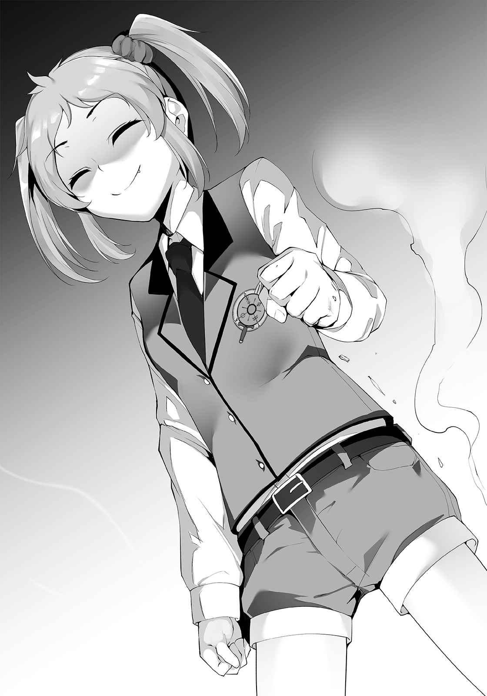
僕と五十嵐センパイばかりではなく、朝倉も執行部員も皆が啞然となった。
いくら木製の机だったとはいえ、素手で叩き壊すなんて人間の技ではない。鬼だ。化け物だ。けど、そんなことを叫んで殴られたらひとたまりもないので、僕たちは大人しくした。
「さあ、朝倉っち。触ったんッスか、触ってないんッスか？」
「触ってません。事実無根です」
朝倉はぴしっと気を付けして答えた。
「そうッスか。それならこの話はこれでお終いッスね」
「ちょっと待って。どうして僕たちの言葉より、朝倉ひとりの言葉を信じるんだよ？」
恐かったけど、どうしても納得がいかなかったので僕は抗議した。
すると、ミミはにやっとして、
「日頃の行いッス」
「なるほど、たしかに」
僕は納得した。恐いので十八番の屁理屈は控えておく。とりあえずミミと対立しては勝ち目がない。それに、五十嵐センパイをダシに助かる方法も無理そうだ。
よって、僕は朝倉を相手にすることで活路を見いだそうとする。
「分かった分かった。僕たちは口頭で主張しあっても平行線を辿るだけだ。僕には僕の正義があり、朝倉にも正義らしきモノがある訳だ」
「言い方が気になりますけど、まあ、その通りです」
これには朝倉も納得してくれた。
「ということで、ここは僕と貴様の一対一で決着をつけようじゃないか。こういうの好きだろ？」
これまでの戦いから朝倉の性格はよく知っている。
けっきょくこいつは脳筋なので、男同士の一対一が好きなのだ。本当はあんまり戦いたくないけど、先月は勝てたのでなんとかなるだろう。
僕は腰にぶら下げていたディスティニーセイバーを手に取った。
「さあ、貴様も武器をとれ」
けれど、
「バカですかあなたは？」
「なんだと!?」
僕の疑問に答えるように、朝倉は自分の周囲を顎でしゃくった。
彼の周りにはミミと武装した執行部員が控えている。その数は三〇人ばかり。朝倉が一声かければ一斉に襲いかかってくるだろう。
「こんなに有利な状況なのに、危険を冒すことはありません」
朝倉の言い分はもっともだった。
それゆえ余計に腹が立った。
「なんだと貴様っ。性格歪んできてないか？」
「間違いなくあなたのせいです」
「自分の性格の悪さを人のせいにしやがって！ この腐れ外道」
「そんなこと言われる筋合いはないですっ」
「いいや、あるね。なんたって貴様は生徒会長なのだ。有権者たる一生徒の意見に耳を傾けてしかるべきなのだ」
「でもっ、クーデターを起こすような人を一生徒とは言いません」
「バカ者が！ なぜクーデターが起きてしまったのか、ちゃんと考えて見ろ！ 貴様が自分の身を守るためだけに勝手な振る舞いをしたからだろう？ すべては自分の蒔いた種。悪魔に魂を売って、生徒を苦しめた罰なのだよ。恥ずかしいと思わないのか？ ええっ!?」
「なんでオレだけが悪者みたいになってるんですか!?」
暴論の洪水に吞まれていた朝倉がキレた。
「うるさい。上に立つ人間の宿命だ。それが嫌なら会長なんて辞めちまえ！」
「ああ、もうっ......ああ言えばこう言う。こう言えばああ言う──」
朝倉は自分の頭をわしわしと搔きむしった。
「──もう無理ですっ。勘弁してください。この人と話をしても埒が明かない！」
いまさら気づいたのか。愚かな奴め。
僕は心中でしめしめとほくそ笑み──そして、諦めをつける。
勝てそうになかったので、とりあえずストレスの解消だけはしておいた。
朝倉に敗北するのは身が引き裂かれる思いだが、起死回生の策が思いつかないのでどうしようもない。ここら辺が潮時である。このまま長引かせて、関ヶ原がやってきて、物理的制裁を食らうよりは負けを認めよう。痛いのは嫌だ。
「皆さん、ふたりを拘束してください」
怒りに震える朝倉が、執行部員に指示を飛ばす。
命令を受けた執行部員は、縄を手に、僕たちを拘束しようとする。
しかし、
「フリーズ！」
五十嵐センパイがなぜか英語で叫んだ。いつのまにかホルスターから拳銃を抜き、銃口を朝倉に向けている。
「全員動いてはいけませんわっ」
部屋中が彼女のいう通り固まった。
「......やはり、予言は実現してしまうんですね」
朝倉は自分に向けられた銃口を睨む。
「ええ、仕方ありませんの。ここでむざむざ負けるくらいなら、一矢報いないと気がすみませんわ！」
「ちょっと待ってよ五十嵐センパイ。それはよくない」
不本意であるが、僕は五十嵐センパイと朝倉のあいだに入った。
「皐月さん、どけてください」
「ダメだって。こんな形で予言が実現しちゃったら、朝倉のやったことが正当化されちゃうんだよ？ ここは矛を収めるべきだ。予言を未実現にして、生徒会の対応が不当だったと世に知らしめようよ？」
僕は、五十嵐センパイにも朝倉にも酷い目に遭わされた。よってどっちも酷い目に遭えばいいと思っている。
しかし、最終的には僕が勝利してスク水を着てくれた五十嵐センパイと、僕から権力を奪っていまものうのうとその座についている朝倉とでは、後者のほうが憎いに決まっている。
だから、僕はスク水美少女の五十嵐センパイを助けるのだ。
「......ですが、予言には期限がありませんの」
五十嵐センパイは濡れた瞳で嘆く。
「それでもいまは堪えるんだ五十嵐センパイっ。このままだと予言通り反逆者になっちゃう」
「......もう構いません。運命から逃げるのはやめですわ。どうせ予言は実現してしまうのです。それなら早い方がいいですわ」
「運命に負けちゃダメだよ！」
僕は必死に訴えかける。
けれど、五十嵐センパイは止まらなかった。
「......ごめんなさい、皐月さん」
五十嵐センパイは肩を突き出し、前に出て、僕の体を押しのけた。
すかさず朝倉に銃口を向ける。
だが、
「サンキュー、皐月っち」
僕がよろめいて五十嵐センパイの視界を遮った瞬間を、ミミは見逃さなかった。
ミミは目にも止まらぬ早業で、肩に提げていたライフルを握り、照準もそこそこに発砲。
撃ち出されたエネルギー弾は、吸い込まれるように五十嵐センパイの拳銃へと向かう。
いままさに引き金を絞ろうとしていた五十嵐センパイの手元で、拳銃が砕け散った。
「っ──」
神業に絶句する五十嵐センパイ。
その隣で僕は、ほっと胸を撫で下ろした。ミミに感謝する。
だがしかし、事はまだ終わっていなかった。
次の瞬間。五十嵐センパイは、自分のスク水を鷲摑み、とんでもない行動にでる。
「このっ」
五十嵐センパイは、スク水の胸元を思いっきり引っぱった。
あらかじめ切れ目が入っていたのだろう。スク水は下の部分を残してビリビリっと破損。五十嵐センパイは手に残ったスク水の断片を投げ捨てる。それは、意図的にミミの視界を塞ぐ。
そして、締め付けから解放された乳ふたつが、僕たちのまえにぷるんと降臨。意気地のない朝倉は、恥ずかしがって顔を背けた。
ゆえに、朝倉は気づかなかった。
豊満な胸の間に挟まっていた隠し拳銃が、締め付けから解放され、自由落下していく。
五十嵐センパイはそれを空中でキャッチ。
左手で胸の恥部を隠し、銃を握った右手は真っ直ぐ伸ばす。そっぽを向いた朝倉のこめかみに銃口を向ける。
──こんな奥の手を用意していたなんて、だれが想像しただろうか？
ミミも意表を突かれて動くことができない。
だけど、五十嵐センパイ。それをやっちゃ負けなんだよ。
僕はそうやって説得したかったけど、あいにく一瞬の出来事だった。
僕の想いは当然のように届かず、五十嵐センパイは朝倉に向かって発砲。
予言は実現した。
◇
「ぐあああああああ──」
獣の慟哭のような叫びが上がる。
絶望という名の弾丸に撃ち抜かれた「僕」は、膝を突いて、その場に蹲った。
「え......」
五十嵐センパイはもとより、そこに居合わせたすべての人間が啞然とする。
朝倉に向かって撃たれたはずの弾丸は──しかし、彼には到達せず。僕こと皐月純を貫いたのだ。
──五十嵐センパイのおっぱいから拳銃がこぼれるのを見た瞬間。気が付いたら僕は飛び出していた。
そして、弾丸が撃ち出されたとき、五十嵐センパイと朝倉の間に入り、僕は左腕に弾丸を食らった。
幸いにも小口径の銃だったので、急所から外れたおかげで悶絶せずにすんだ。しかし左腕を動かすたびに、言い知れぬ苦痛が湧き上がってくる。
「......どうしてなのですか？」
朝倉が皆を代表するように言った。
「どうしてだと？」
蹲っていた僕は苦痛を堪え、よろよろと立ち上がる。
さて、ここで僕が選べる選択肢はふたつ。
ひとつは、朝倉会長を庇った功績を訴えて、罪を軽くしてもらうこと。
もうひとつは──。
「決まってるじゃないか朝倉っ。僕は五十嵐センパイに襲いかかったんだよ！」
「はあ？」
朝倉の目が点になった。
嫌らしく僕は笑う。
「五十嵐センパイのおっぱいを見た僕は、発情して飛び掛かったんだよ。男として当然のことじゃないか」
「いやいやいや、当然違います。それってただの犯罪です」
「黙れ童貞！」
僕は無事な右手を大きく振り払った。
「犯罪上等！ 貴様のいう通り、犯罪だったのかもしれないさ」
「犯罪そのものですって」
「だからこそ、五十嵐センパイは正当防衛したんだよ」
「え？」
理解できないという表情の朝倉。
そんな彼に対して、僕は大真面目に説明する。
「だから言ってるだろう。おっぱいに目が眩んだ僕は、五十嵐センパイに襲いかかった。五十嵐センパイは身を守るために銃を発砲した。その予備動作の最中に、たまたま銃口の先に朝倉がいた。つまり、五十嵐センパイが元から狙っていたのは、この僕であって、貴様じゃないんだよ」
「ちょっと待ってください。それじゃ、予言はどうなるんですか？」
「予言は実現したじゃないか。気が動転していた五十嵐センパイは、引き金をちょっとだけ早く引きすぎた。だから、あたかも朝倉に向かって発砲したようなシーンが出来上がったんだ。これこそ、予言されたワンシーンじゃないか！」
「そんなのこじつけです。五十嵐さんは端っからオレを狙ってた！」
「おっぱいから目を背けていた貴様に、正確なことは分からんだろ！」
「くっ......」
朝倉はおっぱいに怯む。
「分かった。貴様がそこまで言うのなら、被害者女性に話を訊いてみよう」
僕は振り返って、ぽかんとしている五十嵐センパイに話しかけた。
「五十嵐センパイ。キミは僕に恐怖して、僕に向かって発砲した。違うかい？」
僕は五十嵐センパイだけに見えるようにウインクした。
すると、はっと我に返った五十嵐センパイは、
「......そ、その通りですわっ。わたくしはケダモノに犯されそうになって、恐怖のあまり引き金を引いたのです。朝倉さんを狙ったつもりはありません」
と、いつも通りの弁舌を発揮した。
満足のいく回答を得た僕は勢いづき、
「ほらほら、被害者女性がそう言ってるのに、朝倉はそれを疑ったりしないよな？」
「人が人ですし......」
朝倉は言いにくそうにぶつぶつと呟いた。
「おいおいおいおいっ。普段の行いが悪いってだけで、その人が犯罪に巻き込まれても知りません、信じませんっていうのか生徒会長さん？」
「そ、そんなことは言ってませんっ」
「だったら素直に認めるべきだ。今回の件で、貴様は弱い女子を追い詰めたんだぞ？ 五十嵐センパイはやってもない罪で追い回されたんだ。どれだけ辛い思いをしたと思ってる？」
こればかりは混じりっけのない事実である。
もしもこれを否定するようなら、朝倉は根っからの悪党だ。
「うっ、それは......その通りです」
しかし、残念ながら、朝倉は悪党ではなかった。
自分でも薄々やり過ぎていると感じていたのだろう。
「よろしい。では、世間にはこうやって発表するんだ──予言は実現した。しかし、考えていた真相とは違いました。これに対して誤った対応をとった生徒会は、五十嵐センパイに謝罪します。会長は責任をとって辞職します──ってな」
「......分かりました。辞職はしませんけど、五十嵐さんの件は生徒会で謝罪します」
「ほ、本当ですの!?」
五十嵐センパイはおっぱいを手で押さえたまま喜んだ。
「はい。オレに責任があることは事実です。予言が実現したいま、危険もありません。後日、生徒会は誠実な対応をすることを約束します」
「なら辞職しろよ」
朝倉は僕の呟きを無視して、
「ですけど、クーデターの件はべつです。きっちりとあなた方には罪を償ってもらいます」
「やっぱりそうきたか！ 悪の会長めっ」
「なんとでも言ってください。さあ、皆さんこれで決着です。ふたりを今度こそ拘束してください。だれか上着を五十嵐さんに」
今度こそ終わりである。
まあ、元々負けた戦いだった。
最後に五十嵐センパイの汚名を返上して、朝倉に謝罪を約束させただけでも儲け物だ。
僕はやり遂げたという想いを胸に、両手を挙げ、降伏の意を表そうとした、そのとき。
──ぱちぱちぱちと、拍手が聞こえた。
この場に不釣り合いな行為に、一同は音のした方に視線を向ける。
するとそこには逃げたはずのシイナと、その後ろに、
「いやぁ～、皐月氏には驚かされましたよぉ。まさか、こんな形で予言を終息させるなんて、ちはるはびっくりです」
黒マント姿の新庄がいた。さらにその両脇には、二人の黒マントが控えている。彼女たちの格好は〈副部長統合団体〉のモノだが、雰囲気は一目で尋常じゃないことが分かった。
「すみません純くん。なんか捕まっちゃいました」
あまり切迫感なくシイナが言った。しかし、両手を後ろに回され縛られているようで、なにかの冗談とは考えづらい。
新庄は、僕らの疑問に答えるように、
「まっ、そういう訳です。転校生に手荒なマネをされたくなければ、大人しくしてくださいよぉ？」
と、鼻歌混じりに告げた。どこか楽しそうであり、嗜虐的に笑っている。
僕が知る鈍臭い新庄とはまるで別人だった。
「ど、どうしてあなたがここに？」
僕が喋ろうとするよりも早く朝倉の口が開く。彼は、ほのかに震えていた。そして、朝倉の口ぶりから察するに、新庄と朝倉は並々ならぬ面識があるようだ。
「予定が崩れちゃったんで、仕方なくちはる登場ですよぉ。ホント、困っちゃいます。朝倉氏も困っちゃいますよね？」
「オレは、べつに......」
「あれ？ あれれ？ 以前お会いしたときは、すっごく嫌そうな顔されてたのにぃ。あの写真のこととかありましたよねぇ？」
「ちょっと待ってくださいっ。そのことは内緒にするって約束でしょ!?」
朝倉はムキになって声を荒らげる。
「まあ、そんなに怒らないでくださいよぉ。下着ドロボーの朝倉さん？」
一方の新庄は余裕しゃくしゃくに、わざとらしく言葉を漏らした。
朝倉はみるみる顔が真っ赤になり、
「違いますっ。あれはたまたま四一七さんの部屋を見たら、下着が干してあっただけで、べつに物色してたわけじゃありません。見てしまったのは不可抗力です！」
「でも、ちはるが撮影して加工した写真を見たら、だれがどう見ても朝倉氏が下着ドロボーに見えちゃいますよぉ？」
と言って、新庄は黒マントの下から一枚の写真を投げて寄こした。
回転しながら床を滑ったそれは、ちょうど僕の足に当たって止まる。
どれどれと、僕は写真を覗き込み──にやけ面の朝倉が、シイナが暮らす寮のベランダの前に立っている姿が写っていた。彼の目前にはシイナの下着がぶら下がっている。
新庄は加工したと言っていたが、素人目にはなにを弄ったのかさっぱり分からない完璧な写真だった。
「朝倉......貴様......僕と同じ種類の人間だったんだな」
「ち、違いますっ。失礼なこと言わないでください！ ただ寮の前を通りかかって、四一七さんの部屋の場所を見ただけで、本当はもっと距離が離れてるんです！」
せっかくちょっとだけ親近感が湧いたのに、朝倉はすごい勢いで否定してきた。まったくなにをそんなに恥ずかしがっているのだろうか。
嫌らしく笑う新庄は、シイナに問いかける。
「これに関して転校生氏の感想はいかに？」
「普段からヘンタイには慣れているので気になりません」
シイナは毅然と答えた。喜んでいいのかどうか分からない。
「だそうです。良かったですねぇ朝倉氏。好きな子に嫌われなくて」
「約束が違うじゃないですか!? だれにも言わないってことで、オレは条件を吞んだんです！」
慌てたようすの朝倉は、すごい剣幕で新庄に詰め寄ろうとした。
だが、新庄は黒マントの下からディスティニーセイバーを抜くと、スイッチを入れて光る刃をシイナの前に突きつけた。
「朝倉氏。動かないでくださいよぉ」
これには僕も肝を冷やした。それとなくこちらもディスティニーセイバーを取ろうとすると、
「おっと、皐月氏もです。もちろん、神九司令もご静粛にお願いしますよぉ」
新庄は、よりシイナにディスティニーセイバーを近づけて牽制をかけてくる。さすがのシイナも、絶望することに多大な抵抗があるようで、いつもよりも表情が固い。
前に出かけた僕と朝倉は、遺憾ながら踏みとどまった。
「くっ......卑怯な」
朝倉は歯を食いしばる。
「卑怯でけっこうですよぉ。手段より目的の方が大事ですからねぇ──五十嵐氏」
そこで新庄の視線が、おっぱいを腕で隠し続ける五十嵐センパイに向かう。
「......わたくしになにか用ですの？」
「ツンツンした目で見ないでくださいよぉ。いいことを教えてあげます。さっき、朝倉氏が条件を吞んだって言いましたよね？ 実は、ちはると朝倉氏はこんな契約をしていたんです。じゃじゃーん」
と自分で効果音を口にして、新庄は懐から紙きれを取り出し、それを広げて掲げた。
「......」
文字が小さくて離れた場所からだれも読めなかったので一同は反応に困った。
ちょっと時間が経ってから新庄はそれに気づき、ごほんと咳払いをして、
「えーと、これはですねぇ。朝倉氏が悶絶するようなことがあれば、復帰するまでの期間、職務のすべてを新庄ちはるに一任すると記された契約書なんですよぉ」
「なんだと！ ──朝倉っ、これは事実なのか!?」
朝倉をいじれる材料が見つかったので、僕はここぞとばかりに追及する。
「事実......です。だからオレは絶対に悶絶するわけにはいかなかったんです......」
犯罪が立証された犯人のように、朝倉は床に膝をついて項垂れた。
「だから、五十嵐センパイを執拗に追いかけてたんだな。つまり、貴様は脅しに屈して強権を振るった愚かな人間ということだ」
「......その通りです」
朝倉は否定を口にせず、すべてを認めた。
それを聞いた新庄は、五十嵐センパイに向かって言う。
「ってわけなんですよぉ。これが真実です。腹が立ちますよねぇ？」
「わたくしは立腹しました！」
「そうです。その調子です。自分の身の安全のために、五十嵐氏を貶めた朝倉氏を許せませんよねぇ？」
「まったくもって許せませんわ！」
「そうだそうだ。絶対に許せない！」
僕も五十嵐センパイに便乗して声をあげた。
さらに新庄が煽ってくる。
「こんな横暴な生徒会長を放置していていいんでしょうかねぇ？」
「絶対に良くないですわ。会長は生徒のために身を粉にして働くべきなのです！」
「そうだそうだ。どんなことが起きようとも、私事に権力を使うなどあってはならない！」
「......」
シイナが冷たい目でこちらを見ていたけど、さすがにディスティニーセイバーを向けられている身ではつっこめないようだ。
「それじゃ、朝倉氏に裁きの鉄槌を下しましょうかぁ？」
「下しますわ！」
「下せ下せ！」
「さあさあ、五十嵐氏。代表して朝倉氏を撃っちゃってください！」
「任せてください。わたくし撃ちますわ！」
「撃っちゃえ撃っちゃえ──ってそれはダメだろ」
僕は、拳銃を構えようとした五十嵐センパイを制した。
勢いのままに朝倉を悶絶させようとしたけど、よくよく考えて見るとそれは新庄の思う壺だ。これまでの話を聞く限り、新庄は生徒会の実権を狙っている。朝倉が悶絶すれば万事上手くいくことだろう。
だが、それと同時に僕たちの苦労は水の泡と帰す。
「せっかく都合良く予言を実現させたんだ。苦しい思いまでしたのに、それを無駄にはできないよ。それに五十嵐センパイが撃ったら、結局五十嵐センパイが犯人になっちゃうじゃないか」
「そうでしたわね......ありがとう皐月純。二度もわたくしの勇み足を止めてくださって」
思いとどまった五十嵐センパイは、朝倉に向けようとした拳銃を新庄へと向けた。
「──という訳ですわ。予言はすでに成就いたしました。朝倉さんがわたくしを追う理由もありません」
「あらら、それは残念ですねぇ......」
新庄は疲れたような顔でため息をついた。それから後ろをちらっと向いて、背後に控える黒マントたちとなにやらアイコンタクトする。その後、一段と深いため息を漏らした。
「もうっ、人生って上手くいかないものですねぇ......。せっかく人質がいるのに悠長に交渉する時間もないっぽいですよぉ。参っちゃいます。こうなったらプランＣですねぇ」
「プランＣだと？」
僕の反復に、新庄はニヤリと笑う。そして突然、シイナに向けていたディスティニーセイバーのスイッチを切った。ディスティニーセイバーをぽいっとこちらに向けて投げ捨てる。
これではまるで武装解除をしたみたいではないか。
訝しがる僕たちを前に、新庄以下三人は、諸手を高々と掲げた。
まるで先月のフラッシュバックのように、新庄は不敵に微笑みながら言う。
「降参します。身の安全を保証してくださーい」
僕たちは啞然となった。
何とも言えない微妙な空気が部屋を席巻する。
奥の手を隠してそうな感じで自信満々に降参して相手の気持ちをモヤモヤさせる手は、先月僕が使ったものだ。
自分で使う分にはある種の気持ちよさがあった。けれど、いざ使われると怒りのぶつけどころを失い気分が悪い。相手を許す気には一切ならない。後々に禍根を残す。この降参は色々とダメだなと身にしみて感じた。
ともあれ、黒幕っぽく登場した新庄は、あっさりと陥落した。
新庄に罪をすべて押しつけて、僕たちは無罪放免になる言い訳を考えよう。
勝負は終わったと、場の空気が弛緩した瞬間、
「なーんてね？」
新庄、そして黒マントのふたりは、弾かれたように前に跳んだ。
◇
それは不意打ちだった。
新庄とふたりの黒マントが動き出した瞬間、ほとんどの人間がぼけっとしていた。
ただひとり、ミミを除いては。
「朝倉っち危ないッス！」
新庄たちの標的を素早く察知したミミは、警告を発すると同時に、彼女も前に跳びだした。ライフルを構え、続けざまに三度発砲。
咄嗟ながら、ミミの正確な射撃は、三発とも跳び掛かってくる新庄を空中で捉えていた。
しかし、新庄は黒マントの下から新しいディスティニーセイバーを取り、抜剣。三つのエネルギー弾を刀身で弾き返した。そのまま、跳びだしたミミの目前へ着地を決める。ミミが次の引き金を引くよりも早く、新庄はミミのライフルを斬り捨てた。
絶望して砕け散るライフルを境に、双方の視線が交わる。
ミミは苦々しく笑い、新庄は不敵に微笑んでいた。
新庄は無手になったミミへ、ディスティニーセイバーを横薙ぎに振るった。
対するミミは、腰のホルダーからディスティニーセイバーを抜いて攻撃を受け止める。
鍔迫り合いになると思った矢先。新庄の蹴りが正面からミミを襲った。
蹴り飛ばされたミミは、周囲の机を巻き込みながら床を転がった。
「っ──」
一同に戦慄が奔る。
新庄が騙し打ちしてきたことよりも、ミミが軽くあしらわれたことが衝撃的だった。ミミは小っちゃくても校内屈指の治安維持部の部長である。彼女と互角に渡り合える人間なんて、校内で一桁しかいないだろう。
つまり、新庄はその一桁に入っているということになる。
ちょっと、キャラ的に信じられなかった。
「ほらほら、執行部員！ 敵の目的は朝倉だぞ。しっかり守ってやれ」
誠に無念ながら、僕は棒立ちの執行部員たちに檄を飛ばした。
本当は朝倉なんて助けたくないけど、ミミが稼いでくれた時間を無駄にしてはならない。
執行部員たちが我に返り、自分の仕事を思いだしたことを横目で確認しながら、僕は五十嵐センパイを執行部員に任せたあと、フリーになったシイナの元へそっと駆け寄った。
「シイナ大丈夫だった？」
「ええ、なんとか」
ディスティニーセイバーの刃の脅威から解放されたシイナは、現在腰を下ろしてぺたんと床に座っている。
「もしかして、腰が抜けちゃってる？」
シイナが一向に動こうとしないので、もしやと思って訊く。
「......はい」
シイナはふて腐れ気味に口を尖らせた。
べつにふて腐れるところじゃないと思うのだけど。もしかして恥ずかしさの裏返しだろうか。
「大丈夫だよ、シイナ。だれだって剣を突きつけられたら恐いものさ」
「......純くんに慰められるなんて生涯の恥です」
「もう、素直じゃないなぁ......毎晩ベッドの上で慰め合ってるのに」
拳が飛んできた。
「平然と噓を言わないでください」
「よし、元気そうでなによりだ」
「......」
「肩を貸すから頑張って立とう。ここから逃げないと」
と言いながら、朝倉たちを見やる。
現在、朝倉を守る執行部員と新庄たちが交戦している。
僅か三人で、三〇人近い執行部員を圧倒する新庄たち。新庄の後ろに控えていた黒マントのふたりも、新庄に勝るとも劣らない強さを持っていた。
執行部員はあれよあれよという間に、次々と斬り捨てられていく。
全滅するまで時間があまりなさそうである。
「純くん、逃げるんですか？ 朝倉さんたちを見捨てて」
「うっ......そういえば」
シイナに指摘されて、重要なことを思いだした。
新庄の言ったプランＣとは、武力行使で朝倉を始末して、無理やり権力を奪い取る作戦のことだろう。ここで全員が斬り捨てられれば、悶絶者に口なしである。逃げた僕たちに濡れ衣を着せられかねない。そうなれば、いままでの苦労は水の泡だ。
しかし、僕が加勢したところで、勝てる見込みはあるのだろうか？
「私、思ったんですけど......新庄さんの強さって、純くん的な気がします」
「凜々しく真っ直ぐに強いってこと？」
「頭大丈夫ですか？」
「酷い！」
「そうじゃなくて──ほら、新庄さんを見てください。新庄さんの剣捌きには全然キレがないと思いますし、立ち回りも適当に見えます。ふつう、こんなんだったら瞬殺されるはずなのに、なぜか強いんです」
「言われてみればたしかに......」
シイナの慧眼に僕は唸る。
新庄の動きは、関ヶ原のような繊細さがまるでない。なのに、大人数を相手取っても敵の攻撃をかわしている──というか、ただ運の良さだけで当たらないでいるように見えた。
「まるで、朝倉さんに勝っちゃったときの純くんみたいなんですよ」
客観的に僕の戦いを見てきたシイナだからこその着眼だった。
肯定し難いけど、その通りかもしれない。
「うむ。その予想はあっているだろう」
突然男性の声が聞こえた。
「だれだ？」
僕たちは声のした方を向くと、窓の外から聡士が顔を出していた。
ここは二階だぞ？
「純。待たせたな」
「べつに待ってないよ。っていうか存在を忘れかけてた」
「おいおい、それが親友に対する態度か？」
「それはともかくなんでそんなところにいるんだよ？」
「密かに中の様子を窺ってたんだ。ちょっと待ってろ。よいしょ──」
と、爺臭い声を漏らしながら、聡士は窓枠を乗り越えて部屋に入ってきた。それから、すぐに振り返り、窓の外に手を伸ばす。なにかを摑んで、ぐっと引き上げた。
引き上げられて、聡士と同じように現れたのは田宮さん。
「あらあら、こんばんは」
ふたりは仲良くスク水を着ていた。田宮さんがスク水なのは理解できるけど、聡士がスク水（男子用）なのは意味が分からない。嬉しくない。
「おまえのけしかけた治安維持連合に捕まりそうになったのだ。ちょうど女子部員だったから、咄嗟に服を脱いで牽制して、近くの川に飛び込んだ。下にスク水を着ておいて正解だった」
訊いてもないのに聡士は先を読んで自分の格好を解説した。
どうして下にスク水を着ていたのか、という疑問は興味ないので突っ込まないことにする。
それよりも、
「いたならもっと早く出てこいよ」
シイナが人質になったとき、なにもしなかった聡士に僕は抗議する。
しかし、聡士は落ち着き払って、
「朝倉会長が何者かに脅されていたことは感づいていた。だが、その正体が摑めずにいたのだ。どうしてもそいつの手がかりを摑みたかったのだ」
「おまえ、僕たちを囮にしたな？ もしかして〈副部長統合団体〉のときからずっと......」
「純を泳がせて正解だった。海老で鯛を釣るとはこのことだな」
聡士は快闊に笑った。
「くっそ、大親友の僕をまんまと餌にしたっていうのか！」
「純、気にするな。このことは水に流そう」
「なんでおまえが僕を慰めてんだよ!?」
「お互いさまじゃないか」
「うっ──」
まあ、その通りだ。僕だって容赦なく、聡士をクーデター犯に仕立て上げた。言いっこなしと言われればそれまでだ。
「このふたりが親友である意味が分からないです」
シイナが尤もなことを言った。
だけど、人生というものはとても複雑なのだ。
「いいかいシイナ？ ......人はね、ひとりじゃ生きられないんだよ」
僕は遠い目をしながら答えた。
シイナは納得しかねるように首を傾げた。
分からなくても仕方がない。これは、分かる人間にだけ分かることなのだ。
ともかく、
「あんまり言い合っている場合でもないし、話を戻すよ。聡士は新庄の強さの秘密を知っているのか？」
「うむ。さっきシイナさんが言った通りだと俺も考えている。つまり、新庄の強さの源は運命力にあるのだ」
運命力。それは、運命に干渉して未来をコントロールできる力。運命力は転校生だけが持っており、この学園の武器や器械の多くは、運命力をエネルギー源としている。
また運命力は専用の器機を使わずとも、人間の意志の力で使うことができることが、最近の研究で報告されているようだ。
事実。聡士が言うには、先月の戦いで僕の中にシイナの運命力が流れ込んだおかげで剣道部の朝倉に勝つことができたという。
「新庄は転校生じゃない。ってことは、新庄に運命力を供給してるのは、黒マントのふたり？」
「黒マントのふたりが転校生である可能性は高いと俺も踏んでいる」
聡士は僕の推測に付け加えた。
「つまり、黒マントふたりを引き離せば、新庄への運命力供給は途絶えるってことだよね？」
「うむ」
「そうなれば、アレはただの新庄だ。ものの敵じゃないっ」
勝利の糸口を見つけた僕は、急に元気になった。
「やるか純？」
「やろう聡士！ 新庄の相手は僕がするから、聡士たちは他のふたりをべつの場所に誘導して欲しい」
「うわぁ......」
シイナがジト目でこっちを見据えた。
「いや、まあ、言いたいことは分かるけどさ。僕だって左腕を負傷してるんだよ？ 新庄だって武器を持ってるんだから、これは大仕事と言っても過言じゃないよ」
「うむ。それなら新庄のことは純に任せた。他のふたりはこっちでなんとかしてみよう」
僕の言い訳が効いたのか、聡士はその案を快諾してくれた。
そうと決まれば早速行動に移す。
すでに執行部員も全滅寸前だった。
僕はディスティニーセイバーを抜剣し、田宮さんはビーム薙刀を構える。
僕と田宮さんの間に立った丸腰すぎる聡士は、わざと存在感をだし、部屋の反対側の隅に向かって声を張った。
「神九、朝倉を連れて逃げるんだ！」
「了解ッス」
床にうつ伏していたミミが、バネのように飛び起きた。
予期していなかったミミの行動に、敵味方ともに不意を打たれる。彼女はやられたフリをして機会を窺っていたようだ。聡士だけはそれに気づいていたのだろう。
起き上がったミミは、小さな体軀をいかして弾丸のように駆け抜けると、薄い執行部員の壁を跳び越して朝倉の傍へ降り立った。すかさず朝倉の襟を摑み、信じられない怪力をもってして、朝倉を窓の外へ放り投げた。
朝倉の絶叫がこだまする。
繰り返すがここは二階である。下には植木があったと思うが、良いクッションとなり得るのか定かではない。いい気味である。
その後ミミも、朝倉に続いて窓から脱出をした。
慌てたのは新庄。
「ちょっ!? に、逃がしませんよ！ ちはるはここで足止めをしますんで、ふたりは朝倉氏を追ってください」
意外にも強気な台詞を吐いて、黒マントを自分から遠ざけようとする。
指示を受けた黒マントのふたりは、踵を返して正規の出入り口から部屋をあとにした。
このまま残った新庄を、皆で袋だたきにしてもよかったけど、黒マントふたりが相手だとミミも分が悪いだろう。しかも、彼女は軟弱な朝倉を守りながら戦わなくてはならない。
となればここは僕の出番である。
僕はひとりで、新庄の前に立ちはだかった。
「みんな！ ここは僕に任せてミミたちを追えっ。早く！」
人生で一度は言ってみたかった台詞を口にできて、すごく気分が良かった。
「頼んだぞ、純」
聡士、田宮さん、執行部員たちは、微塵も躊躇う素振りを見せなかった。新庄が固める出入り口を避け、いそいそと窓から撤退する。逡巡を見せた五十嵐センパイも、執行部員に促されて部屋を出て行った。さすがにいつまでもあの姿ではいられまい。
部屋に残ったのは僕と新庄。そして、シイナだった。
シイナは聡士に逃げるようにすすめられながらも、首を横に振っていた。
危ないのに、ここに残ることを選択したようだ。腰がなんとか復活した彼女は、僕の後ろで拳銃を握っている。
「シイナ。逃げても良かったんだよ？」
「いえ。さすがに純くんひとりだと心配なので私も援護します」
「そうか、分かったよ......」
モノは考えようだ。新庄をコテンパンにやっつけて、シイナに良いところを見せられる機会だと思うことにする。
「さて、新庄。降参するならいまのうちだぞ？」
「あれれぇ？ もしかして勝っちゃう気でいるんですかぁ？ すごい自信ですねぇ、びっくりですよぉ」
仲間が去り、運命力も使うことができず、二対一だというのに新庄は余裕そのものだった。虚勢を張っているようにも見えない。
おかしい......。
なにかがおかしいと感じざるを得なかった。
もしかすると、僕は貧乏くじを引いたのかもしれない。
嫌な確信めいたモノが頭の中を過ぎった。
「──シイナ、悪いんだけど危ないから後ろに下がってて」
僕は静かに、後ろへ伝えた。
「でも、それじゃ、残った意味がないです」
シイナからは当然の答えが返ってくる。
しかし、いまだけは理不尽な注文を聞いて欲しい。
「シイナお願い」
僕はただただ静かに、もう一度、彼女を諭すように言った。
「......分かりました」
言葉の中に、なにかを察してくれたのだろう。シイナは僕から離れ、後ろに下がってくれた。
僕は左腕の絶望を堪え、ディスティニーセイバーを両手で握る。
新庄の態度がハッタリであることを願って、相手に向かい踏み込んだ。
小手調べに、上段から中段へと、続けざまに斬りかかる。
新庄はあっさりと僕の攻撃を受け流した。
「ちくしょっ、やっぱりか！」
深追いはやめて、後ろに下がろうとするが、今度は新庄から激しい斬撃が見舞われる。僕はそれを必死に受け止め続けた。嫌な汗が額を伝う。
「あらら、皐月氏はなにを期待してたんですかぁ？」
「おまえが弱っちぃことだよ！」
「変な期待はやめてくださいよぉ。運命に愛されてるので、ちはるはチョー強いんです」
「やっぱりその強さは運命力だったか」
「はい。隠す必要もないのでぶっちゃけちゃいますけど、その通りです」
「自分の力じゃないだろ、こいつめ」
僕は近くの机を蹴り飛ばして、新庄の足を攻撃しようとする。
だが、蹴り飛ばされた机は、たまたまそこにあった椅子と接触してしまい、軌道が逸れてしまう。机は新庄の僅か数センチ横を通り過ぎていった。
本当に面倒臭いほど、新庄は運命に愛されている。
「運命を切り開こうとする意志は、間違いなくちはるのモノですよぉ」
戦ってみて初めて分かる。新庄の動きは素人同然だった。
けれど、それゆえに予測が付けづらく、運命力によって未来を都合良くコントロールしてくるので、攻撃のひとつひとつが偶然的に急所に定まってくる。一撃でも斬撃を受け止めそこなったら、即お陀仏だろう。
起死回生の案を考えなければ長くは保たない。
「おまえ転校生じゃないだろ？」
「はい、ちはるは一生徒ですよぉ？」
「なら、近くに味方もいないのに、どうして運命力が使えるんだ？」
「いやだなぁ。銃のマガジンにも、ディスティニーセイバーにも運命力をストックできるじゃないですかぁ」
余裕があるゆえの行動なのか、新庄は一旦後ろに跳んで、僕との距離を取った。そして、いままで身を厳重にくるんでいた黒マントを脱ぎ捨てる。新庄が着ていたのは、本来そこに着ているべき服装ではなかった。
黒マントの下に、スク水を着ていなかった。
「あっ、やっぱりそうじゃないかと思ってたんだ。僕の言い付けを破って制服を着てやがったな！」
「最高指導者の指示じゃなかったんですか？」
「どっちでもいいじゃないか！」
「逆ギレはやめてくださいよぉ......」
「それよか、なんだよその重装備は？」
新庄はスク水を着てないどころか、制服の上から色気もさっぱりな機械仕掛けのベストを着けていた。ベストにはバッテリーのような棒状の物体が、何本も巻き付けられている。
「これは運命力蓄積装置です」
「見たまんまだな」
「このベストを着て、やる気を出せば、だれでも運命力を使うことができるんですよぉ」
「だから、ひとりで残ることに躊躇わなかったのか」
完全にこちらの憶測が外れていたようだ。聡士の奴が自信満々に言っていたから信じたのに、案外あいつもアテにならない。いまから謝ったら見逃して貰えるだろうかと一瞬だけ考えたけど、新庄に頭を下げるのは気が進まなかった。
「皐月氏、ちょっと待ってください。正直これ重いんで、使い終わったやつ外します」
「だれが待つかよ！」
さすが新庄。平気で敵に塩を送ってくる。
もちろん僕がこのチャンスを見逃すはずもない。ベストを弄くっている新庄に、問答無用で斬りかかった。
「皐月氏は分かりやすいですねぇ」
新庄は端っから僕の行動を予期していた。ベストに巻かれた棒状のバッテリーを抜き取ると、僕に向かって思いっきり投げつける。
だが、肩のない新庄が投擲したバッテリーは、明後日の方向へ飛んだ。
なんの攻撃にもなっていない。
これは勝ったと思って、新庄に肉薄した僕が、ディスティニーセイバーを横薙ぎに振るおうとした直後。
「ぐあっ──」
どういう経緯か不明だが、新庄の投げたバッテリーが、色んな場所に跳ね返り、奇跡的な経緯で僕の横顔に直撃。僕は横っ面を不意打ちで殴られたように仰向けに倒れた。ディスティニーセイバーが手からこぼれ落ち、床に転がった。
新庄の足が、僕のディスティニーセイバーを踏む。彼女のスカートの中身がモロに見えた。
「......し、白か」
「勝負ありですね皐月氏。あ、動かないでくださいよぉ。ちょっとでもおかしな動きを見せたら、その瞬間ブスリですから」
逆手で握られたディスティニーセイバーは、真っ直ぐ僕を狙っている。新庄がその気になれば、いつでも言葉通り、ブスリと串刺しにできるだろう。
「ちくしょ......痛いなぁもう。顔に傷がついたらどうするんだよ？」
「いまよりは格好良くなるんじゃないですかぁ？」
「本当のことを言うな。心が傷つくじゃないか」
僕は軽口を叩きながらも、絶望的状況に為す術をなくしている。
姑息な手はいくつか思いつくが、新庄が創り出す運命をまえにして、有効的に働くとは思えない。それなれば最後に取り得る手段はひとつだけ。
「降参してもいいかな？ キミたちの仲間に僕も入れてよ？」
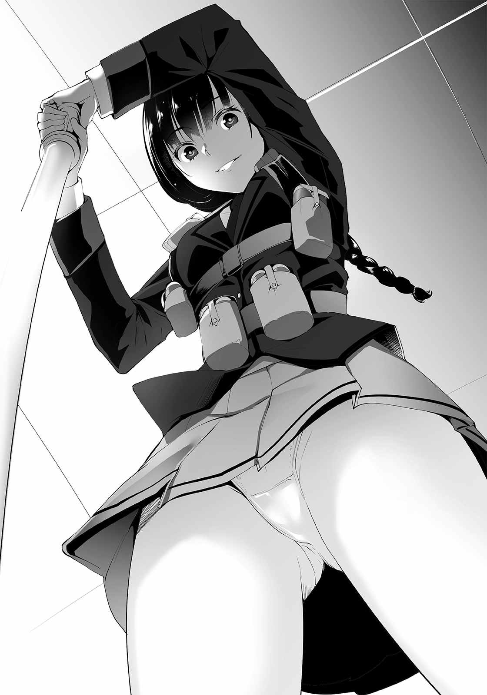
「組織を内側から乗っ取ろうとする人なんかを、仲間にできませんよぉ」
「そりゃそうだ」
日頃の行いのせいで降伏さえもできなかった。
「大人しく観念してくださいね皐月氏」
「......パンツから毛がはみ出てるぞ？」
「その手にはのりません」
「ですよねぇ......」
「それじゃ、楽にしてあげます。皐月氏が次に目覚めたときには、ちはるが生徒会長代理になっているでしょう。ご支持をお願いしますねぇ？」
「嫌だよ」
「残念です」
「新庄さん動かないでください」
にわかにシイナが声をあげた。
僕は新庄のパンツから目をずらして、後ろのシイナを見る。彼女は拳銃を構えて新庄に狙いをつけていた。
「シイナ、無茶は良くない。僕のことは構わず早く逃げてくれ。そして、僕が悶絶してる間の世話を頼む。下半身とか」
「嫌ですよ。仕様もないこと考えてないで、勝算のある案でも練ってください」
なかなか厳しい意見が返ってくる。
尤もだけど、いまの状況ではそれが一番難しい。
銃口を向けられた新庄は、それでも嫌な顔ひとつせず、むしろ面白そうに微笑んでいる。
「転校生氏。皐月氏のいう通りです。無駄な抵抗はやめて銃を捨ててください。でないと皐月氏を刺しますよぉ？」
「捨てても純くんを刺しますよね？」
「もちろん」
「交渉になってません」
「ちはるが絶対的に有利ですからねぇ」
シイナはため息をついて、今度は僕に声をかける。
「純くん、なにか良い案思いつきましたか？」
「いや、悪いけど全然」
「使えませんね」
「酷いよ、シイナっ」
「でしたら私からの提案があります」
「え、マジで？」
僕は驚く。
シイナが自分から主導して行動を起こそうとするなんて、珍しいことだった。
「はい。いまから銃を撃っちゃうんで、純くんはその場のノリでなんとかしてください」
だが、あまり深い考えがあるわけではなかった。
「ちょっと待ってよ。それって僕が危なくないかな？」
「どうせ放っといたら刺されるんです。一か八かです。刺されそうになったらいい感じに避けてください」
「そんな無茶な......」
僕は呆れながらも、ひっそりと覚悟を決める。この状況を打開するには、シイナの言う通り一か八かしかないだろう。
「分かってませんねぇ。すべての偶然はちはるの味方なんですよぉ？ それなのに偶然に任せて勝利を狙うなんて不可能ですって」
「そうとは限らないです。純くんだって運命に愛されているかもしれませんから」
せせら笑う新庄に向かって、シイナは断固とした口調で言った。
すると、新庄は急に真面目な顔になって、
「転校生氏は知らないと思いますけどねぇ。運命力っていうのは感情に起因してるんですよぉ。ちはるの運命力に勝つには、それ以上の運命力がいるんです。転校生氏にそれだけの運命力を引き出せる感情がこの男に対してあるんですかぁ？ あるわけないですよねぇ？」
なぜか新庄は決めつけてかかった。僕たちの愛情の深さを新庄は知らないようである。
僕としてはシイナには間髪入れず「私は純くんのことが大好きです。愛してます」と反論して欲しかったけど、
「............」
シイナは難しい顔をして押し黙ってしまった。
「シイナっ、この戦いが終わったら結婚しよう！」
「嫌です」
僕が未練たらしく叫ぶと、そんなときだけシイナは即答してくる。
これは新庄の言う通り脈がなさそうだ。なんだか生きているのが辛くなってきた。
「勝負ありですねぇ」
新庄はほっとしたように笑みを取り戻した。
と、その瞬間。
まさかのタイミングで、シイナは拳銃のトリガーを引いた。
電子的な発砲音が響き、絶望という名のエネルギー弾が、新庄目掛けて飛翔する。
シイナが完全な不意を突いたことで、新庄にふたつの選択肢を突きつけた──ディスティニーセイバーで防御をするか、身を逸らして弾をかわすか。そのどちらの行動をとっても、僕への注意が疎かになる。
もはや考える時間は皆無。僕にディスティニーセイバーを突き刺して相打ちする選択肢は、防衛本能によって除外される。
新庄は本能のまま、反射だけで、ディスティニーセイバーで弾を弾く選択をした。
躊躇わずトリガーを引き続けるシイナ。彼女の銃口から撃ち出される弾を、新庄はひやっとした表情で弾き返していく。
シイナが作りだしてくれたチャンスを無駄にすれば、今度こそ愛想を尽かされかねない！
後ろ向きな気持ちが原動力となった僕は、新庄が足を乗せていたディスティニーセイバーを無理やり引っこ抜いた。
「うわっ──」
大きくはなくとも、体勢を崩す新庄。
僕はその隙を見計らい床から飛び起きた。ディスティニーセイバーを抜剣しながら、斜め下から上に向かって斬り上げる。
しかし、新庄はすぐに体勢を立て直し、僕の斬撃を受けて立つ構えでいた。この不意打ちは決定打にならないとだれもが理解していた。
そのとき、開け放たれていた部屋の窓から一筋のつむじ風が舞い込む。
風が運んできた砂粒が、奇跡的な確率で新庄の目に入った。
思わず瞼を閉じて仰け反る新庄。
そこへ僕の放った斬り上げが、新庄の胴体を斬り裂いた。
「っ──」
光る刃が斬られた者を絶望へと叩き落とす。
新庄は大の字を描いて真後ろに倒れた。呆然とした瞳は天井を仰ぐ。
まだ意識はあるようだ。着けていたベストが分厚くて、即悶絶には至らなかったのだろう。
けれど、新庄は深い絶望を味わい、苦しそうに汗をびっしょりと搔いている。手足を動かす事さえもできないようだ。このままでも遠からず、彼女の意識は闇に沈む。
「......おかしいですねぇ......運命がちはるに味方してくれなかったです」
消えそうな声で疑問を呟く新庄。
すると、そこへシイナが駆け寄り、新庄の傍で膝をついた。
「新庄さん。私は純くんのこと嫌いじゃありません。たぶん、そんな気持ちが、新庄さんの運命力をちょっとだけ上回ったんだと思います」
「......ちはるの運命力はまだ沢山ありました......その程度の気持ちで、上回れるんですかぁ？ ......笑っちゃいますよぉ」
新庄はそっと目を閉じた。
◇
「シイナ。キミの気持ちはたしかに受け取ったよ」
戦いが終わって、お互いの心も分かり合うことができた。
熱い抱擁を交わすべきだと思った僕は、両手を広げて愛しの彼女を待つ。
しかし、シイナは一向に僕の胸にダイブしてこない。
「恥ずかしがらなくていいから、シイナ早くおいで」
「なに言ってるんですか？ 意味が分かりません」
「またまた～、とぼけちゃって。僕が新庄に勝てたのは、キミの愛が僕に届いたからだよ」
「そんなんじゃないですよ。きっと、新庄さんの運命力の残量が少なかっただけです」
シイナは実にきっぱりと突き放してくる。あいかわらず素直ではない。
だけど僕の勝利は、シイナが幸運という名の運命をもたらしてくれたおかげだ。それだけは間違いないと思う。本人は頑なに首を縦に振らないだろうけど。
「ともあれ巨悪は倒した」
僕は疲れたので、適当に椅子を見繕って、どかっと腰掛けた。
戦いが終われば、一時的に忘れていた左腕の痛みも蘇ってくる。
「はい。小物っぽい気はしますけど」
「あとはミミと聡士たちだけど──まあ、心配ないかな？ ミミはなんだかんだ言っても強いしね」
「いまごろ治安維持連合と合流しているかもしれませんし」
「良かった良かった。学園の平和は僕たちの手で守られたんだ。苦労した甲斐があったよ」
「あれ、そういう話でしたっけ？ なんか違うような気がするんですけど」
シイナは眉を寄せて首を傾げた。
なにか得心がいかないようすである。
僕は不思議に思いながら、状況を整理してみる。
「どうしちゃったんだよ？ 僕たちは聡士が密かに追っていた黒幕を倒した。残りの黒マントふたりも、シイナの言ったように治安維持連合に捕らえられていることだろう。あとは新庄を治安維持連合に引き渡せば終わりじゃないか」
「その治安維持連合に、とっても会いたくない人がいるような気がするんですけど」
「ん？ ......そういえば、僕たちってなにをやってたんだっけ？」
不意に僕も、胸に引っかかるものを感じた。
重大なことを忘れているような気が徐々にしてくる。
しかし、それがなんだったのかどうしても思い出せない──というか、思い出すことを頭が拒否している感じだった。
人間はときに、重度のストレスから逃げるために、都合の悪い記憶を忘れてしまうことがあるらしい。その症状が、僕とシイナに現れている気がした。
「......その疑問。自分が答えましょうか？」
それはゲリラ豪雨のように突然やってきた。僕の頭上に雷雲が立ち込める。
残念ながらこの声に聞き覚えがあり、いつまでも忘れていたかった御方のモノだった。
僕は震えながらゆっくりと席を立ち、首が錆びついているかのようにぎこちなく振り返る。
やっぱりそこには、関ヶ原が降臨していた。残念ながらスク水を着替え、桜ノのユニフォームになっている。
「お久しぶりです皐月純くん」
普段滅多に笑わない関ヶ原が、とても愛想よく笑いかけてきた。
「久しいだなんて、いやだな関ヶ原さん。つい八時間ほどまえに別れたばかりじゃないか」
「言われてみればその通りです。ですけど、どうしてでしょうか？ 皐月純くんと再会できなかった時間が、やけに長く感じられたのです」
ああ、もう、これは怒っている。確実に激怒している顔だった。
僕は自分がクーデター犯だった事実を思いだし、頭を抱える。
「と、ところで関ヶ原さん......その左手で引きずっているボロ布みたいな物体はなにかな？」
「ああ、これですか？」
関ヶ原はミミに匹敵する腕力で、とある物体を僕の目の前に投げ捨てた。
それは、見るも無惨な姿に変わり果てた、白目剝いて悶絶したソフトボール部長だった。
「朝倉会長を逃がす最中に、引っ捕らえようと斬りかかってきたので返り討ちにしたまでです。皐月純くんの部下でしょうからお返しします」
さすが勇敢で無謀な男だ。僕なら諦めて逃げる。っていうか、無理だと思ったら逃げればいいのに。
「あ、ありがとう。嬉しいな」
「喜んで頂いてなによりです」
「じゃあ、僕たちはこれで失礼するよ。あとはお願いね？ シイナ行こう！」
「待ってください」
シイナの手を引いて逃げようとしたが、すぐに呼び止められた。
「なにか用かな、関ヶ原さん？」
「言わなければ分かりませんか、皐月純くん？」
関ヶ原はおもむろにディスティニーセイバーを抜くと、静かに抜剣した。その佇まいは、新庄が赤子に見えるほど尋常ではない。
本当に強い人は、向かい合っただけで相手に敗北を悟らせるのだと知った。
悪を倒してハッピーエンドが待っているかと思いきや、真ラスボスはまだ倒していなかったようだ。
「シイナ、もう一度さっきの力を頂戴！ 勢いにのって関ヶ原さんも倒すんだ」
たとえ運命力を使っても、圧倒的実力の差の前では、象を前にした蟻のような気もしなくはなかった。
けれど、無いよりは断然いい。
「純くん。きっと運命は二種類あるんだと思います。ひとつは努力すれば変えられる運命。もうひとつは、どれだけ抵抗しても変えられない運命です」
いきなり哲学を語ったシイナは、僕の手を放し、覚悟を決めた表情で関ヶ原の前に立った。
その凜々しさに、僕はシイナの覚悟と意図を理解する。
「なるほど、そういうことか......」
シイナがその気ならば、僕も覚悟をしよう。
「やるかシイナ」
「はい。仕方ありませんから、さっさとやっちゃいましょう、純くん」
「むっ......」
僕たちのただならぬ気迫に、関ヶ原も表情を引き締めた。いつでも動けるように、ぐっと腰を落とす。
僕たちも腰をこれ以上ないほど低く落として、いつでも動ける姿勢を作った。
勝負は一瞬で決着がつくだろう。
向かい合った僕たちの間に、緊張が張り詰める。
「シイナ、同時に攻めるぞ？」
「はい、準備はできています」
僕らは互いを見ず、息を合わせた。そして、
「いくぞシイナ！」
「行きまーす純くん」
「おりゃ！」
「それぇー」
気合いを発しながら、僕とシイナはシンクロして動きだす。
限界まで落としていた腰をさらに落とし、地面に膝を突いて、勢いよく上半身を前に倒した。
「「たいへん申し訳ありませんでした！」」
僕とシイナは土下座をして、関ヶ原に許しを乞うた。
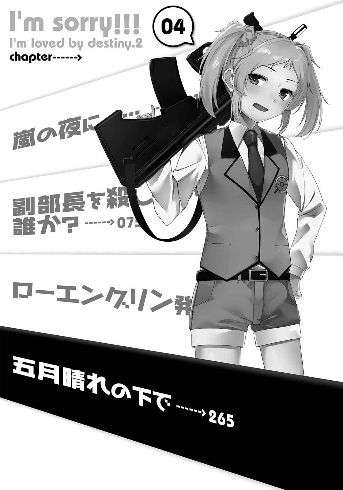
人生とは思い描くように上手くはいかないものだ。
せっかく学園の危機を救ったような気がしたのに、だれからも感謝されなかった。
むしろ、各方面からお叱りをうけた。
「僕がなにをしたって言うんだ!?」
理不尽に堪えきれなくなって僕は叫ぶ。
「そりゃ、クーデターを仕掛けて生徒会を乗っ取ろうとしましたからね......」
隣から、シイナの冷静な突っ込みが返ってきた。
ここは桜ノ治安維持部の訓練施設。そこにある道場の周りを、僕とシイナは延々と走らされていた。今回の件に関するお仕置きである。
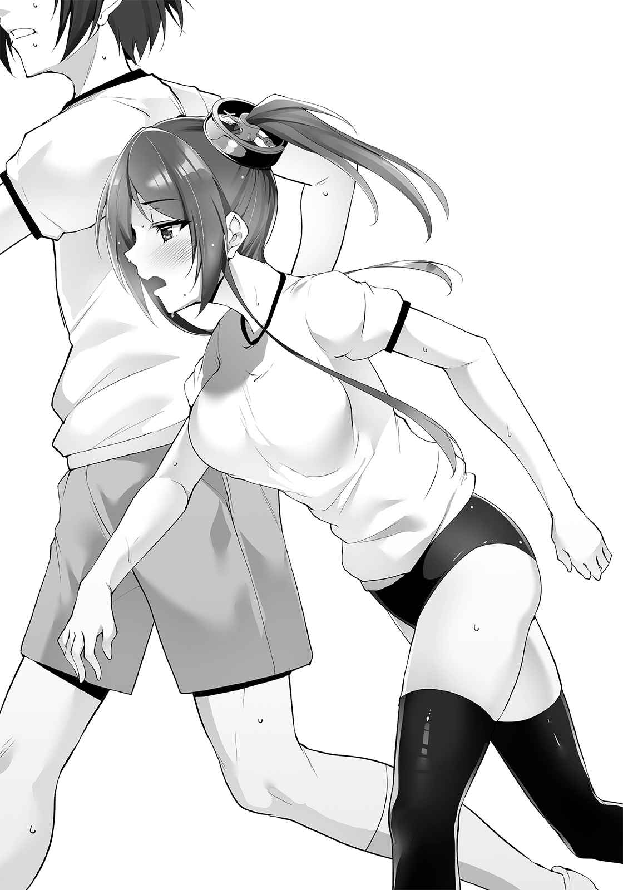
関ヶ原に降伏した一週間前のあの日。謝っただけでは許して貰えなかった。
僕はクーデターの首謀犯。シイナはその協力者として捕らえられ、断罪されることになった。
しかし、元を辿れば、すべて僕たちが悪いわけではない。
すべて悪いのは朝倉会長ただひとり──という個人的な感想は脇におき、あの騒動は色んな思惑が絡み合った結果生じたものだ。
新庄に脅された朝倉が、予言を阻止するために生徒会周囲の暴走に目を瞑った。そのせいで追い込まれてしまった五十嵐センパイは、僕たちと協力してクーデターを画策。校内を混乱に陥れたのである。
また、その背後には、聡士の野望まで見え隠れしていた。
「やあ、ふたりともご苦労だった」
関ヶ原に捕まってとりあえず投獄された僕とシイナのところへ、聡士は田宮さんを連れてやってきた。先月と同じく牢の鍵を開け、僕たちに自由をくれる。
「ご苦労ってなんだよ......嫌みか？」
計画が失敗した僕は、ふて腐れていた。
「おいおい。俺は心から純に感謝してるんだ。〈副部長統合団体〉はこの一件で解散になったし、いままで尻尾さえ摑めなかった謎の組織の末端を捕まえられた。本当にお手柄だぞ？」
「......なんだよ、聡士は仕事熱心だな。副会長の仕事に加えて反学園組織まで追ってたのか。よっぽどいまの生徒会を守りたいんだな、ふんっ」
親友の興味は、僕ではなく朝倉に向いているらしい。
憎らしいったらありゃしない。
聡士は、いじける僕の肩に手を乗せた。声を潜めて言う。
「純。俺は、次の選挙に出る」
その言葉を聞いて、僕ははっとする。
「おまえ......会長になるつもりなのか！ もしかして、そのために、いまの内から危険分子の排除を？」
「察しが良いじゃないか」
聡士のメガネが怪しく光った。
「......副会長は当然僕なんだろうな？」
「副会長はわたしですよ、純さん」
田宮さんがほんわかと言った。しかし、言葉の背後には有無を言わせないなにかがある。
まあ、副会長は田宮さんでいいとしよう。
「......なるほど、夫婦で学園を牛耳るつもりなのか。だったら、僕はなんの役職に就けるんだよ？」
「純。おまえを役員にすると支持率が下がる」
「僕が会長になったときは、おまえを副会長にしてやっただろ？ 恩を仇で返すのか!?」
言っていることはもっともだけど、それは親友としてありえない。
「まあ、落ち着け。いまの俺があるのは純のおかげだと思っている。感謝してもしきれない」
「だったら、目に見える形で感謝の印をくれよ」
「うむ──生徒会は今回の騒動で、純とシイナさん、それに五十嵐さんの罪を問わないことを決定した」
「え、マジで？」
思わぬ粋な計らいに、僕は聡士のことを見直した。
「マジだ──が、表向きはそうはいかない。朝倉会長の過失が大きい五十嵐さんは完全無罪放免だが、純とシイナさんは事情が違う。よって、ふたりには桜ノ治安維持部に強制入部してもらうことになった。三ヶ月の訓練が義務づけられた」
「ちょっと待て聡士っ。桜ノは一番マズいんだよ。騙して、スク水着せて、投獄しちゃった関ヶ原がいまだに僕のことを怒ってるんだ。次会ったら殺されるかもしれないのに......」
「そこら辺は、神九がなんとかしてくれるだろう」
という投げやりな聡士の対応によって、僕とシイナの身柄はミミに預けられた。
それから三日後。悶絶から意識を取り戻した新庄と面会があった。
場所はお馴染みの地下牢である。
治安維持連合の尋問に対して一向に口を割らなかった新庄が、僕になら真実を話すと告げたらしい。
「〈副部長統合団体〉。あれは元々ちはるが立ち上げた組織なんです」
新庄の告白は、まずそこから始まった。
「団体を立ち上げた目的は、新聞部での活動が思うように行かなかったからです。つまり、団体に集まってきた他の副部長と理由は一緒って訳ですよぉ」
最初は女三人だけで愚痴を言い合うだけのサークルだったという。
「でも、仲間が増えるに連れて明確な目的が必要になり、それが学園の支配ってことになりました。上に立つ者と、下に付く者と、両方の痛みを知る副部長なら、良い支配者になれると本気で思ってたんですよぉ」
しかし、新庄はすぐに気づいた。人の良すぎるこの面子では、学園の乗っ取りはできないことを。
「そんなとき彼らが近づいてきたんです。彼らは、ちはるたちに力をくれました。その代わり、ちはるたち最初の三人は、彼らの末端として働くことになったんです」
僕は、新庄が言う「彼ら」の正体を訊ねた。
「〈真実を知りたい者たち〉──彼らは自分のことをそう呼び、ちはるもそれに共感しました。この学園はどこかおかしいと思いませんかぁ？ 運命力学ってなんなのでしょうねぇ？ ジャーナリズム精神で、ちはるもその秘密を知りたかったんです」
新庄は言いたかったことだけ言い終わると、それ以降、有力な発言は一切しなかった。
創設者の三人が治安維持連合に捕まり、同時に指導者も失った〈副部長統合団体〉は事実上解散となった──と聡士から聞かされていたが、実はちょっとだけ違う。
なぜならば〈副部長統合団体〉の団員のストレスは根本的になくならないモノである。
よって、団員数を半数に減らしながらも、団体は再結成されていた。
新名称は〈真・副部長統合団体〉。
そして、団体を仕切るのが、なにを隠そうシイナであった。
シイナは〈副部長統合団体〉の最高指導者であったことを理由に、無理やり担がれ、〈真・副部長統合団体〉の最高指導者に祭り上げられたのだ。もちろんシイナは最初断った。しかし、数多くの副部長に土下座され、仕方なくその役を引き受けたのだ。
いまは二日置きに秘密の会合が開かれ、次なる決起に向けて意気込む団員を横目に、シイナは漫画を読みながら紅茶を飲んでいるだけである。案外、楽しんでいるのかもしれない。
以上がこの一週間で起こった出来事だ。
分からないことが色々とあったので、僕は深く考えないようにしている。
「おふたりともペースが遅いです！」
歩くような速度で走っていたら、竹刀をもった関ヶ原が後ろから追いかけてきた。僕の繊細なお尻を、ばしばしと竹刀で叩いてくる。
「痛いって関ヶ原さん。なに、そういう趣味なの？ 女王様なの？ 気持ちいい？」
「これ以上、自分を怒らせたいようですね？」
「ちょっとしたジョーダンじゃないか。ほら、僕は走るよ。すっごく走るよ！」
いまの瞬間だけ頑張って、シイナと関ヶ原を置き去りにし、アクセルを全開にして走った。
──と、しばらく進んだところで、僕の行く手に金髪の女子生徒が現れる。
制服を着ていたので一瞬だれだか分からなかった。けれど、すぐに五十嵐センパイなのだと思いだす。
どうして今日はスク水を着ていないのだろうか？
素通りするのもアレだったので、僕は五十嵐センパイの前で立ち止まった。
「やあ、五十嵐センパイ」
「こんにちは、皐月さん。今日は珍しく良い天気ですわね？」
五十嵐センパイはにっこりしながら空を見た。
つられて僕も上を向く。たしかに今日は青空が広がっている。
のどかでなによりだが、こっちはそうでもない。
「ん、まあ、そうだな。っていうか、なにか用なの？」
「もうすぐお昼ですわ」
「そうだな」
「よろしかったら一緒に食事をしませんか？ わたくし、お弁当作って参りましたの。外で食べたら気持ちいいと思いまして」
そう言った五十嵐センパイは、両手に大きなバスケットをぶら下げていた。
一体どういう風の吹き回しだろうか？
しかし、昼休憩に入る口実ができた。
僕はシイナと関ヶ原が来るのを待ってから、五十嵐センパイをダシにして、早めの昼休憩を勝ち取った。
◇
場所を移して、訓練施設の休憩スペース。
僕は柔らかい陽射しを浴びながら、シイナと五十嵐センパイに挟まれて、ベンチに座っていた。両手に花とはこのことである。
関ヶ原は、「愛すべき部長との昼食があります！」と意気込んでどっかに行ってしまった。ここ一週間で分かったことだけど、彼女のミミに対する愛情は度が過ぎている。そのうち一線を越えそうで恐い。
だけど、恐い人が去ってくれたおかげで、こちらはのんびりした昼が過ごせそうだ。
「皐月さん、ほら、あ～んしてください。あ～んですわ」
「あ～ん」
言われた通り口を開けると、五十嵐センパイが手作りのサンドイッチを食べさせてくれた。
「どうですか？ わたくし料理は得意ではなくて、こんなモノしか用意できなかったのですけど......」
ちょっと不安そうに五十嵐センパイは問いかけてきた。
「うん、ふつうに美味しいよ。スク水だったらもっと美味しかっただろうに」
僕は思ったことをそのまま口にする。
でも五十嵐センパイは、嫌な顔をするどころか、花が咲いたように喜んで、
「まあっ、ありがとうございます。次はスク水着てきますわね」
「うん、よろしく」
むしゃむしゃと咀嚼していると、シイナが肘で脇腹をつついてきた。天気はこんなに良いのに、曇った顔をしている。
「どうしたのシイナ？」
僕が顔を近づけると、シイナは小声で、
「どういうことなんですか？ どうして五十嵐さんと和気藹々してるんですか？」
「いや、それが僕も謎でさ」
じつは一週間前の騒動以降。はじめて五十嵐センパイと会うのだが、シイナの指摘どおりようすがおかしい。
なんというか──僕に対して優しいのだ。いつもの上から発言が一切なく、態度も高飛車ではない。
五十嵐センパイが優しいなんて、大地震が起こる前触れとしか考えられなかった。
「頭でもぶつけちゃったのかな？」
「それは違うと思います」
「じゃあ、なにがどうしちゃったんだろうね？」
「......純くん。本当に気づいていないんですか？」
シイナは意外そうな顔でこっちを見た。
「え、なにが？ 僕がチョーイケメンで、常にモテモテだっていう事実？」
「それは妄想です。そうじゃなくて、五十嵐さんが急にあんな風になっちゃった理由ですよ」
「だから、僕がチョーイケメンで──」
「もういいです」
ため息まじりに話を切り上げ、シイナは自分の菓子パンに戻っていった。
こっちはこっちでどうしてしまったのだろうか？
女の子の複雑な思考が理解できなくて、ぽかんとしていると、
「皐月さん。わたくしに内緒で、ひそひそとなにを話しているのですか？」
五十嵐センパイが僕との距離を詰めてきた。
もはやふたりは密着状態に近く、五十嵐センパイが体を動かす度、僕の腕に豊満なおっぱいがぽよんぽよんと当たってくる。これは素晴らしい。
「なんでもないよ」
「そうですの？ 皐月さんはシイナさんと仲がよろしいですわね？」
「そうなんだよ。なんたって僕たちは付き合ってるからね！」
「付き合って......ません」
僕が意気揚々と述べ、すかさずシイナが否定する。いつもどおりのやり取りだったはずなのに、シイナの口調は歯切れが悪かった。
「あら、付き合ってませんの？」
五十嵐センパイが前に乗り出して、僕越しにシイナを覗き込んだ。
「付き合ってません」
シイナは意地を張ったように口を尖らせながら断言した。
僕はちょっとだけ悲しくなる。
けれど、気のせいだろうか？
はっきりと否定したはずのシイナの体が、言葉とは裏腹に──まるで五十嵐センパイに対抗するように──ちょっとだけ僕に近づいたような気がした。
「......」
シイナは僕のほうを見ようとせず、リスのように菓子パンを頰張っている。その仕草がいつにも増して可愛らしかった。
僕は癒されたように笑い、五十嵐センパイもシイナの態度を見て微笑んだ。
そして、五十嵐センパイは彼女らしい台詞をやっと口にする。
「ねぇ、皐月さん。機会がありましたら、また一緒に頂点を目指しましょうね？」
「おいおい五十嵐センパイ......あんたは全然懲りてないのか？」
「懲りるわけありません。わたくしは権力が大好きですの」
「まあ、それでこそ五十嵐センパイだよなぁ。安心した──でも、生徒会長になるのはこの僕だからね？」
僕はつい本能的に、喧嘩を売るようなことを言ってしまう。
だが、
「分かっていますわ。わたくしが副会長で、あなたが会長。それでいいですわ」
「え......マジ？」
「マジですわ」
やっぱり、今日の五十嵐センパイは絶対におかしい。
でも、たまにはこういうのもアリだと思った。
なにかのショックでまた元通りになるかもしれないし、いまがそれでいいと言うなら、それもまた良しである。
シイナは、黒い会話をする僕たちを横目で見て、
「......ふたりだけだと心配ですから、私も参加します」
「本当に？」
「仕方なく、です」
「そっか、ありがとう」
両手に花。
空は青く透き通り。
野心は尽きることがない。
いい風が吹いていると思った。
まるで運命に愛されているようだった。
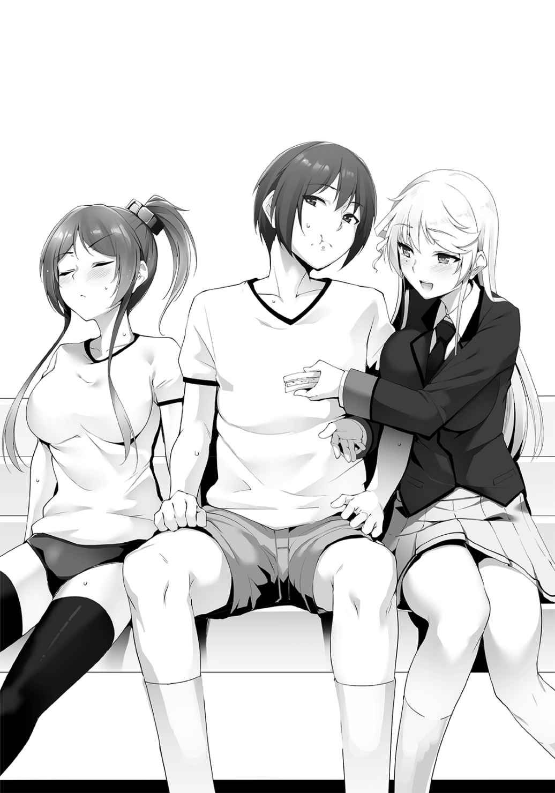
あとがき
皆さん人生お疲れ様です、うわみくるまです。
一巻に続いて二巻も、アホな話にお付き合い頂きありがとうございます。
今回もスクール水着全開でお届けしました。皆さんには、きっと、熱いスク水魂が伝わっているのではないかと信じています。
正直、あとがきに書くことがないので、どうでもいい近況報告をします。
最近、本棚を買いました。なんかしらないけど、とっても安かったです。私は安いモノが大好きなのでウキウキでした。しかし、使い始めて一週間で棚の部分が壊れてしまいました。
人生ってそういうものですよね？
さてさて、今回も沢山の方々と一緒にこの本を作りました。
簡単ですが、謝辞をひとつ。
智弘カイさん、今回もナイスおっぱいありがとうございます。智弘さんの創造するおっぱいと太股が私の活力です。次も楽しみにしています。
いつもご迷惑かけています担当編集の方々。うわみはやる気だけはあります。どうか見捨てないでください。
その他にも校閲さんを含め、沢山の方がこの本の出版に携わっているはずです。感謝です。
そして最後に、前巻のあとがきに引き続いて謝罪で締めさせて頂きたいと思います。
智弘カイさん。一巻よりもスケジュールがタイトではありませんでしたか？
犯人はこの中にいます。
締め切りに遅れてごめんなさい。
うわみくるま
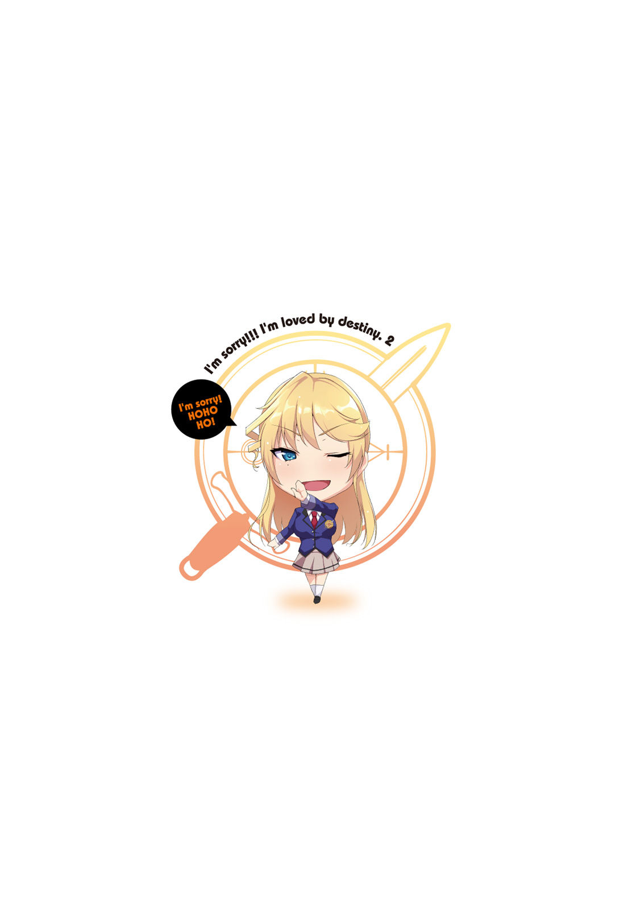
うわみくるま
権力の忠犬。
得意技＝安物買いの銭失い。
好きなモノ＝半額の札。
最近いまさら思ったこと＝安いモノには訳がある。

イラスト／智弘カイ
漫画家兼イラストレーター。
どちらかと言えば成年向けでの活動が多いです。
趣味はベースと昼寝。
本書に対するご意見、ご感想をお寄せください。
電撃文庫公式ホームページ 読者アンケートフォーム
http://dengekibunko.dengeki.com/
※メニューの「読者アンケート」よりお進みください。
ファンレターあて先
〒102-8584 東京都千代田区富士見1-8-19
アスキー・メディアワークス電撃文庫編集部
「うわみくるま先生」係
「智弘カイ先生」係
本書は書き下ろしです。
この物語はフィクションです。実在の人物・団体等とは一切関係ありません。
 電撃文庫
電撃文庫
運命に愛されてごめんなさい。②
うわみくるま
発 行 2015年6月11日
発行者 塚田正晃
発行所 株式会社KADOKAWA
〒102-8177 東京都千代田区富士見2-13-3
03-3238-8745（営業）
http://www.kadokawa.co.jp/
プロデュース アスキー・メディアワークス
〒102-8584 東京都千代田区富士見1-8-19
03-5216-8399（編集）
http://dengekibunko.dengeki.com/
本書（電子版）に掲載されているコンテンツ（ソフトウェア／プログラム／データ／情報を含む）の著作権およびその他の権利は、すべて株式会社KADOKAWAおよび正当な権利を有する第三者に帰属しています。
法律の定めがある場合または権利者の明示的な承諾がある場合を除き、これらのコンテンツを複製・転載、改変・編集、翻案・翻訳、放送・出版、公衆送信（送信可能化を含む）・再配信、販売・頒布、貸与等に使用することはできません。
(C)2015 KURUMA UWAMI
※2015年5月9日発行の電撃文庫『運命に愛されてごめんなさい。②』初版に基づき制作